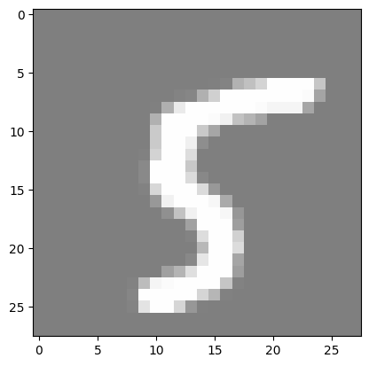
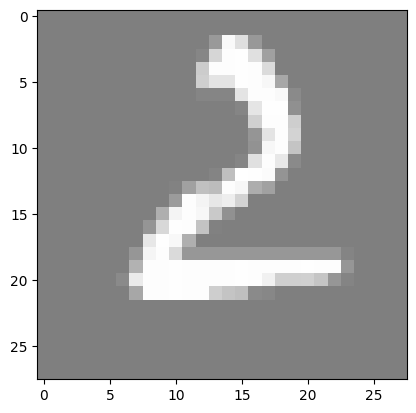
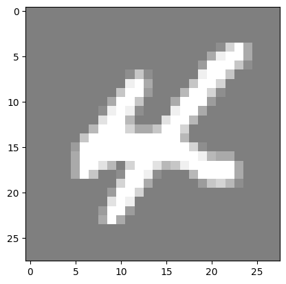

Lesson 1: MNIST Classification using Fully Connected Neural Networks#
Introduction#
MNIST is a simple computer vision dataset. It consists of 28x28 pixel images of handwritten digits. The dataset also includes labels for each image, telling us which digit it is (0, 1, 2, …, 9).
In this notebook, we will use the MNIST dataset to train a simple neural network to classify the images. We will use the PyTorch library to build a simple fully connected neural network and train it on the dataset.
The notebook is divided into the following sections:
Importing the libraries
Loading the dataset
Preparing the dataset
Building the neural network
Training the model
Evaluating the model
Reloading the model and making predictions
Throughout the notebook, you will see ‘#TODO’ comments. These are placeholders for you to write your own code. You should write the code to complete the functionality of the neural network.
Imports#
import torch
import torch.nn as nn
import torchvision
import torchvision.transforms as transforms
import matplotlib.pyplot as plt
import numpy as np
from tqdm import tqdm
import os
Hyperparameters#
# Determine if a GPU is available, and use it if so
# we will use it to train our model, if not we will use the CPU
device = torch.device("cuda" if torch.cuda.is_available() else "cpu")
input_size = 784 # MNIST data is 28x28 pixels
hidden_size = 500 # number of nodes in the hidden layer
num_classes = 10 # number of output classes (0-9)
num_epochs = 5 # number of times we will loop through the entire dataset
batch_size = 100 # number of images to process at once
learning_rate = 0.001 # how much we update our weights each iteration
MNIST#
Load MNIST#
The first step is to load the MNIST dataset. We will use the tensorflow_datasets library to load the dataset.
# create datasets folder
os.makedirs("../datasets", exist_ok=True)
# MNIST dataset
train_dataset = torchvision.datasets.MNIST(
root="../datasets", train=True, transform=transforms.ToTensor(), download=True
)
test_dataset = torchvision.datasets.MNIST(
root="../datasets", train=False, transform=transforms.ToTensor()
)
Downloading http://yann.lecun.com/exdb/mnist/train-images-idx3-ubyte.gz
Failed to download (trying next):
HTTP Error 404: Not Found
Downloading https://ossci-datasets.s3.amazonaws.com/mnist/train-images-idx3-ubyte.gz
Downloading https://ossci-datasets.s3.amazonaws.com/mnist/train-images-idx3-ubyte.gz to ../datasets/MNIST/raw/train-images-idx3-ubyte.gz
0%| | 0/9912422 [00:00<?, ?it/s]
1%| | 98304/9912422 [00:00<00:12, 781464.08it/s]
2%|▏ | 196608/9912422 [00:00<00:12, 789938.06it/s]
5%|▍ | 491520/9912422 [00:00<00:06, 1434525.97it/s]
10%|▉ | 983040/9912422 [00:00<00:03, 2293344.32it/s]
19%|█▉ | 1867776/9912422 [00:00<00:02, 3794904.12it/s]
36%|███▌ | 3571712/9912422 [00:00<00:00, 6694156.70it/s]
68%|██████▊ | 6782976/9912422 [00:00<00:00, 12127308.81it/s]
100%|██████████| 9912422/9912422 [00:01<00:00, 9604313.94it/s]
Extracting ../datasets/MNIST/raw/train-images-idx3-ubyte.gz to ../datasets/MNIST/raw
Downloading http://yann.lecun.com/exdb/mnist/train-labels-idx1-ubyte.gz
Failed to download (trying next):
HTTP Error 404: Not Found
Downloading https://ossci-datasets.s3.amazonaws.com/mnist/train-labels-idx1-ubyte.gz
Downloading https://ossci-datasets.s3.amazonaws.com/mnist/train-labels-idx1-ubyte.gz to ../datasets/MNIST/raw/train-labels-idx1-ubyte.gz
0%| | 0/28881 [00:00<?, ?it/s]
100%|██████████| 28881/28881 [00:00<00:00, 421428.03it/s]
Extracting ../datasets/MNIST/raw/train-labels-idx1-ubyte.gz to ../datasets/MNIST/raw
Downloading http://yann.lecun.com/exdb/mnist/t10k-images-idx3-ubyte.gz
Failed to download (trying next):
HTTP Error 404: Not Found
Downloading https://ossci-datasets.s3.amazonaws.com/mnist/t10k-images-idx3-ubyte.gz
Downloading https://ossci-datasets.s3.amazonaws.com/mnist/t10k-images-idx3-ubyte.gz to ../datasets/MNIST/raw/t10k-images-idx3-ubyte.gz
0%| | 0/1648877 [00:00<?, ?it/s]
6%|▌ | 98304/1648877 [00:00<00:02, 707047.48it/s]
18%|█▊ | 294912/1648877 [00:00<00:01, 1116819.18it/s]
44%|████▎ | 720896/1648877 [00:00<00:00, 1987391.32it/s]
91%|█████████▏| 1507328/1648877 [00:00<00:00, 3421699.47it/s]
100%|██████████| 1648877/1648877 [00:00<00:00, 2928292.29it/s]
Extracting ../datasets/MNIST/raw/t10k-images-idx3-ubyte.gz to ../datasets/MNIST/raw
Downloading http://yann.lecun.com/exdb/mnist/t10k-labels-idx1-ubyte.gz
Failed to download (trying next):
HTTP Error 404: Not Found
Downloading https://ossci-datasets.s3.amazonaws.com/mnist/t10k-labels-idx1-ubyte.gz
Downloading https://ossci-datasets.s3.amazonaws.com/mnist/t10k-labels-idx1-ubyte.gz to ../datasets/MNIST/raw/t10k-labels-idx1-ubyte.gz
0%| | 0/4542 [00:00<?, ?it/s]
100%|██████████| 4542/4542 [00:00<00:00, 10398760.24it/s]
Extracting ../datasets/MNIST/raw/t10k-labels-idx1-ubyte.gz to ../datasets/MNIST/raw
After downloading the dataset, we will use torch dataloaders to load the data. Dataloader is a utility that helps us to load the data in batches and also shuffle the data.
# Data loader
train_loader = torch.utils.data.DataLoader(
dataset=train_dataset, batch_size=batch_size, shuffle=True
)
test_loader = torch.utils.data.DataLoader(
dataset=test_dataset, batch_size=batch_size, shuffle=False
)
Visualize MNIST#
## Visualize MNIST
# functions to show an image
def imshow(img):
img = img / 2 + 0.5 # unnormalize
npimg = img.numpy()
plt.imshow(np.transpose(npimg, (1, 2, 0)))
plt.show()
for _ in range(3):
image, _ = train_dataset[np.random.randint(0, len(train_dataset))]
imshow(torchvision.utils.make_grid(image))



Data Augmentation#
# TODO:
# Watch this very short (it's literally a YouTube Short) video about data augmentation: https://www.youtube.com/shorts/S-7LpWzUaOg
# Read about data augmentation for images in PyTorch: https://www.kaggle.com/code/mohamedmustafa/7-data-augmentation-on-images-using-pytorch
# Add data augmentation to the MNIST dataset
Neural Network#
class Net(nn.Module): # inherit from nn.Module
def __init__(self, input_size, hidden_size, num_classes):
super(Net, self).__init__() # call the constructor of the parent class
self.fc1 = nn.Linear(input_size, hidden_size) # first fully connected layer
self.relu = nn.ReLU() # activation function
# TODO:
# 1. Add a second fully connected layer (don't forget to add an activation function).
# 2. (Optional) Experiment with different activation functions,
# such as sigmoid, tanh, leaky relu and parametric relu.
self.fc2 = nn.Linear(hidden_size, num_classes) # second fully connected layer
# softmax is used for multi-class classification problems
# it converts the output to a probability distribution over the classes
# the class with the highest probability is the predicted class
# logsoftmax is used to improve numerical stability
self.logsoftmax = nn.LogSoftmax(dim=1)
def forward(self, x: torch.Tensor) -> torch.Tensor:
"""
:param x: input tensor (batch_size, input_size)
"""
x = self.fc1(x)
x = self.relu(x)
x = self.fc2(x)
x = self.logsoftmax(x)
return x
Initialization#
# create the model and move it to the GPU if available
model = Net(input_size, hidden_size, num_classes).to(device)
# loss function
# we usually use cross-entropy loss for classification problems
# it applies log softmax to the output and then applies negative log likelihood loss
# in our model, we apply logsoftmax in the forward method, so we don't
# the loss function to do it.
# Thence, instead of using nn.CrossEntropyLoss, we use nn.NLLLoss
# simply,
# * If we apply logsoftmax in the forward method, we use nn.NLLLoss
# * If we don't apply logsoftmax in the forward method, we use nn.CrossEntropyLoss
criterion = nn.NLLLoss() # negative log likelihood loss
# optimizer
# we use the Adam optimizer, it is a popular optimizer
# it is an extension to stochastic gradient descent
# it computes adaptive learning rates for each parameter
optimizer = torch.optim.Adam(model.parameters(), lr=learning_rate)
Training the Model#
# Training loop
total_step = len(train_loader)
for epoch in range(num_epochs):
# Initialize progress bar
progress_bar = tqdm(enumerate(train_loader), total=total_step, leave=True)
for i, (images, labels) in progress_bar:
# Move tensors to the configured device
images = images.reshape(-1, 28 * 28).to(device) # flatten the images
# flatten the images to be (batch_size, 28*28)
# this is important because FCNNs take a 1D tensor as input
labels = labels.to(device)
# Forward pass
outputs = model(images)
loss = criterion(outputs, labels)
# Backpropagation and optimization
optimizer.zero_grad()
loss.backward()
optimizer.step()
# Update progress bar description
progress_bar.set_description(
f"Epoch [{epoch+1}/{num_epochs}], Step [{i+1}/{total_step}], Loss: {loss.item():.4f}"
)
0%| | 0/600 [00:00<?, ?it/s]
Epoch [1/5], Step [1/600], Loss: 2.3230: 0%| | 0/600 [00:00<?, ?it/s]
Epoch [1/5], Step [2/600], Loss: 2.2268: 0%| | 0/600 [00:00<?, ?it/s]
Epoch [1/5], Step [3/600], Loss: 2.1131: 0%| | 0/600 [00:00<?, ?it/s]
Epoch [1/5], Step [4/600], Loss: 2.0624: 0%| | 0/600 [00:00<?, ?it/s]
Epoch [1/5], Step [5/600], Loss: 1.9032: 0%| | 0/600 [00:00<?, ?it/s]
Epoch [1/5], Step [6/600], Loss: 1.8688: 0%| | 0/600 [00:00<?, ?it/s]
Epoch [1/5], Step [7/600], Loss: 1.7664: 0%| | 0/600 [00:00<?, ?it/s]
Epoch [1/5], Step [8/600], Loss: 1.6340: 0%| | 0/600 [00:00<?, ?it/s]
Epoch [1/5], Step [8/600], Loss: 1.6340: 1%|▏ | 8/600 [00:00<00:08, 73.35it/s]
Epoch [1/5], Step [9/600], Loss: 1.5709: 1%|▏ | 8/600 [00:00<00:08, 73.35it/s]
Epoch [1/5], Step [10/600], Loss: 1.4996: 1%|▏ | 8/600 [00:00<00:08, 73.35it/s]
Epoch [1/5], Step [11/600], Loss: 1.3138: 1%|▏ | 8/600 [00:00<00:08, 73.35it/s]
Epoch [1/5], Step [12/600], Loss: 1.2821: 1%|▏ | 8/600 [00:00<00:08, 73.35it/s]
Epoch [1/5], Step [13/600], Loss: 1.2773: 1%|▏ | 8/600 [00:00<00:08, 73.35it/s]
Epoch [1/5], Step [14/600], Loss: 1.1167: 1%|▏ | 8/600 [00:00<00:08, 73.35it/s]
Epoch [1/5], Step [15/600], Loss: 1.1391: 1%|▏ | 8/600 [00:00<00:08, 73.35it/s]
Epoch [1/5], Step [16/600], Loss: 1.0399: 1%|▏ | 8/600 [00:00<00:08, 73.35it/s]
Epoch [1/5], Step [16/600], Loss: 1.0399: 3%|▎ | 16/600 [00:00<00:11, 51.16it/s]
Epoch [1/5], Step [17/600], Loss: 0.9255: 3%|▎ | 16/600 [00:00<00:11, 51.16it/s]
Epoch [1/5], Step [18/600], Loss: 0.9570: 3%|▎ | 16/600 [00:00<00:11, 51.16it/s]
Epoch [1/5], Step [19/600], Loss: 0.8857: 3%|▎ | 16/600 [00:00<00:11, 51.16it/s]
Epoch [1/5], Step [20/600], Loss: 0.9498: 3%|▎ | 16/600 [00:00<00:11, 51.16it/s]
Epoch [1/5], Step [21/600], Loss: 0.8104: 3%|▎ | 16/600 [00:00<00:11, 51.16it/s]
Epoch [1/5], Step [22/600], Loss: 0.7308: 3%|▎ | 16/600 [00:00<00:11, 51.16it/s]
Epoch [1/5], Step [23/600], Loss: 0.7450: 3%|▎ | 16/600 [00:00<00:11, 51.16it/s]
Epoch [1/5], Step [24/600], Loss: 0.6270: 3%|▎ | 16/600 [00:00<00:11, 51.16it/s]
Epoch [1/5], Step [24/600], Loss: 0.6270: 4%|▍ | 24/600 [00:00<00:09, 60.70it/s]
Epoch [1/5], Step [25/600], Loss: 0.6417: 4%|▍ | 24/600 [00:00<00:09, 60.70it/s]
Epoch [1/5], Step [26/600], Loss: 0.6423: 4%|▍ | 24/600 [00:00<00:09, 60.70it/s]
Epoch [1/5], Step [27/600], Loss: 0.6211: 4%|▍ | 24/600 [00:00<00:09, 60.70it/s]
Epoch [1/5], Step [28/600], Loss: 0.6722: 4%|▍ | 24/600 [00:00<00:09, 60.70it/s]
Epoch [1/5], Step [29/600], Loss: 0.6142: 4%|▍ | 24/600 [00:00<00:09, 60.70it/s]
Epoch [1/5], Step [30/600], Loss: 0.6036: 4%|▍ | 24/600 [00:00<00:09, 60.70it/s]
Epoch [1/5], Step [31/600], Loss: 0.6468: 4%|▍ | 24/600 [00:00<00:09, 60.70it/s]
Epoch [1/5], Step [32/600], Loss: 0.4339: 4%|▍ | 24/600 [00:00<00:09, 60.70it/s]
Epoch [1/5], Step [32/600], Loss: 0.4339: 5%|▌ | 32/600 [00:00<00:08, 66.26it/s]
Epoch [1/5], Step [33/600], Loss: 0.5109: 5%|▌ | 32/600 [00:00<00:08, 66.26it/s]
Epoch [1/5], Step [34/600], Loss: 0.5131: 5%|▌ | 32/600 [00:00<00:08, 66.26it/s]
Epoch [1/5], Step [35/600], Loss: 0.6634: 5%|▌ | 32/600 [00:00<00:08, 66.26it/s]
Epoch [1/5], Step [36/600], Loss: 0.6023: 5%|▌ | 32/600 [00:00<00:08, 66.26it/s]
Epoch [1/5], Step [37/600], Loss: 0.4934: 5%|▌ | 32/600 [00:00<00:08, 66.26it/s]
Epoch [1/5], Step [38/600], Loss: 0.4835: 5%|▌ | 32/600 [00:00<00:08, 66.26it/s]
Epoch [1/5], Step [39/600], Loss: 0.5993: 5%|▌ | 32/600 [00:00<00:08, 66.26it/s]
Epoch [1/5], Step [40/600], Loss: 0.5454: 5%|▌ | 32/600 [00:00<00:08, 66.26it/s]
Epoch [1/5], Step [40/600], Loss: 0.5454: 7%|▋ | 40/600 [00:00<00:08, 69.58it/s]
Epoch [1/5], Step [41/600], Loss: 0.4826: 7%|▋ | 40/600 [00:00<00:08, 69.58it/s]
Epoch [1/5], Step [42/600], Loss: 0.4233: 7%|▋ | 40/600 [00:00<00:08, 69.58it/s]
Epoch [1/5], Step [43/600], Loss: 0.5490: 7%|▋ | 40/600 [00:00<00:08, 69.58it/s]
Epoch [1/5], Step [44/600], Loss: 0.4320: 7%|▋ | 40/600 [00:00<00:08, 69.58it/s]
Epoch [1/5], Step [45/600], Loss: 0.5078: 7%|▋ | 40/600 [00:00<00:08, 69.58it/s]
Epoch [1/5], Step [46/600], Loss: 0.5137: 7%|▋ | 40/600 [00:00<00:08, 69.58it/s]
Epoch [1/5], Step [47/600], Loss: 0.4015: 7%|▋ | 40/600 [00:00<00:08, 69.58it/s]
Epoch [1/5], Step [48/600], Loss: 0.4914: 7%|▋ | 40/600 [00:00<00:08, 69.58it/s]
Epoch [1/5], Step [48/600], Loss: 0.4914: 8%|▊ | 48/600 [00:00<00:07, 71.86it/s]
Epoch [1/5], Step [49/600], Loss: 0.4806: 8%|▊ | 48/600 [00:00<00:07, 71.86it/s]
Epoch [1/5], Step [50/600], Loss: 0.5662: 8%|▊ | 48/600 [00:00<00:07, 71.86it/s]
Epoch [1/5], Step [51/600], Loss: 0.4115: 8%|▊ | 48/600 [00:00<00:07, 71.86it/s]
Epoch [1/5], Step [52/600], Loss: 0.3719: 8%|▊ | 48/600 [00:00<00:07, 71.86it/s]
Epoch [1/5], Step [53/600], Loss: 0.4731: 8%|▊ | 48/600 [00:00<00:07, 71.86it/s]
Epoch [1/5], Step [54/600], Loss: 0.3907: 8%|▊ | 48/600 [00:00<00:07, 71.86it/s]
Epoch [1/5], Step [55/600], Loss: 0.5009: 8%|▊ | 48/600 [00:00<00:07, 71.86it/s]
Epoch [1/5], Step [56/600], Loss: 0.3786: 8%|▊ | 48/600 [00:00<00:07, 71.86it/s]
Epoch [1/5], Step [56/600], Loss: 0.3786: 9%|▉ | 56/600 [00:00<00:07, 73.96it/s]
Epoch [1/5], Step [57/600], Loss: 0.3934: 9%|▉ | 56/600 [00:00<00:07, 73.96it/s]
Epoch [1/5], Step [58/600], Loss: 0.2655: 9%|▉ | 56/600 [00:00<00:07, 73.96it/s]
Epoch [1/5], Step [59/600], Loss: 0.2890: 9%|▉ | 56/600 [00:00<00:07, 73.96it/s]
Epoch [1/5], Step [60/600], Loss: 0.3214: 9%|▉ | 56/600 [00:00<00:07, 73.96it/s]
Epoch [1/5], Step [61/600], Loss: 0.3084: 9%|▉ | 56/600 [00:00<00:07, 73.96it/s]
Epoch [1/5], Step [62/600], Loss: 0.4330: 9%|▉ | 56/600 [00:00<00:07, 73.96it/s]
Epoch [1/5], Step [63/600], Loss: 0.3315: 9%|▉ | 56/600 [00:00<00:07, 73.96it/s]
Epoch [1/5], Step [64/600], Loss: 0.4746: 9%|▉ | 56/600 [00:00<00:07, 73.96it/s]
Epoch [1/5], Step [64/600], Loss: 0.4746: 11%|█ | 64/600 [00:00<00:07, 74.63it/s]
Epoch [1/5], Step [65/600], Loss: 0.4242: 11%|█ | 64/600 [00:00<00:07, 74.63it/s]
Epoch [1/5], Step [66/600], Loss: 0.4347: 11%|█ | 64/600 [00:00<00:07, 74.63it/s]
Epoch [1/5], Step [67/600], Loss: 0.3065: 11%|█ | 64/600 [00:00<00:07, 74.63it/s]
Epoch [1/5], Step [68/600], Loss: 0.3409: 11%|█ | 64/600 [00:00<00:07, 74.63it/s]
Epoch [1/5], Step [69/600], Loss: 0.4809: 11%|█ | 64/600 [00:00<00:07, 74.63it/s]
Epoch [1/5], Step [70/600], Loss: 0.3782: 11%|█ | 64/600 [00:00<00:07, 74.63it/s]
Epoch [1/5], Step [71/600], Loss: 0.2989: 11%|█ | 64/600 [00:01<00:07, 74.63it/s]
Epoch [1/5], Step [72/600], Loss: 0.4276: 11%|█ | 64/600 [00:01<00:07, 74.63it/s]
Epoch [1/5], Step [72/600], Loss: 0.4276: 12%|█▏ | 72/600 [00:01<00:07, 75.16it/s]
Epoch [1/5], Step [73/600], Loss: 0.2792: 12%|█▏ | 72/600 [00:01<00:07, 75.16it/s]
Epoch [1/5], Step [74/600], Loss: 0.2421: 12%|█▏ | 72/600 [00:01<00:07, 75.16it/s]
Epoch [1/5], Step [75/600], Loss: 0.3599: 12%|█▏ | 72/600 [00:01<00:07, 75.16it/s]
Epoch [1/5], Step [76/600], Loss: 0.2951: 12%|█▏ | 72/600 [00:01<00:07, 75.16it/s]
Epoch [1/5], Step [77/600], Loss: 0.3851: 12%|█▏ | 72/600 [00:01<00:07, 75.16it/s]
Epoch [1/5], Step [78/600], Loss: 0.4025: 12%|█▏ | 72/600 [00:01<00:07, 75.16it/s]
Epoch [1/5], Step [79/600], Loss: 0.3612: 12%|█▏ | 72/600 [00:01<00:07, 75.16it/s]
Epoch [1/5], Step [80/600], Loss: 0.3081: 12%|█▏ | 72/600 [00:01<00:07, 75.16it/s]
Epoch [1/5], Step [80/600], Loss: 0.3081: 13%|█▎ | 80/600 [00:01<00:06, 76.09it/s]
Epoch [1/5], Step [81/600], Loss: 0.4168: 13%|█▎ | 80/600 [00:01<00:06, 76.09it/s]
Epoch [1/5], Step [82/600], Loss: 0.3840: 13%|█▎ | 80/600 [00:01<00:06, 76.09it/s]
Epoch [1/5], Step [83/600], Loss: 0.2720: 13%|█▎ | 80/600 [00:01<00:06, 76.09it/s]
Epoch [1/5], Step [84/600], Loss: 0.2721: 13%|█▎ | 80/600 [00:01<00:06, 76.09it/s]
Epoch [1/5], Step [85/600], Loss: 0.4805: 13%|█▎ | 80/600 [00:01<00:06, 76.09it/s]
Epoch [1/5], Step [86/600], Loss: 0.5381: 13%|█▎ | 80/600 [00:01<00:06, 76.09it/s]
Epoch [1/5], Step [87/600], Loss: 0.3493: 13%|█▎ | 80/600 [00:01<00:06, 76.09it/s]
Epoch [1/5], Step [88/600], Loss: 0.2725: 13%|█▎ | 80/600 [00:01<00:06, 76.09it/s]
Epoch [1/5], Step [88/600], Loss: 0.2725: 15%|█▍ | 88/600 [00:01<00:06, 75.40it/s]
Epoch [1/5], Step [89/600], Loss: 0.3809: 15%|█▍ | 88/600 [00:01<00:06, 75.40it/s]
Epoch [1/5], Step [90/600], Loss: 0.3578: 15%|█▍ | 88/600 [00:01<00:06, 75.40it/s]
Epoch [1/5], Step [91/600], Loss: 0.4264: 15%|█▍ | 88/600 [00:01<00:06, 75.40it/s]
Epoch [1/5], Step [92/600], Loss: 0.3727: 15%|█▍ | 88/600 [00:01<00:06, 75.40it/s]
Epoch [1/5], Step [93/600], Loss: 0.2325: 15%|█▍ | 88/600 [00:01<00:06, 75.40it/s]
Epoch [1/5], Step [94/600], Loss: 0.4004: 15%|█▍ | 88/600 [00:01<00:06, 75.40it/s]
Epoch [1/5], Step [95/600], Loss: 0.3120: 15%|█▍ | 88/600 [00:01<00:06, 75.40it/s]
Epoch [1/5], Step [96/600], Loss: 0.3378: 15%|█▍ | 88/600 [00:01<00:06, 75.40it/s]
Epoch [1/5], Step [96/600], Loss: 0.3378: 16%|█▌ | 96/600 [00:01<00:06, 76.03it/s]
Epoch [1/5], Step [97/600], Loss: 0.3659: 16%|█▌ | 96/600 [00:01<00:06, 76.03it/s]
Epoch [1/5], Step [98/600], Loss: 0.4216: 16%|█▌ | 96/600 [00:01<00:06, 76.03it/s]
Epoch [1/5], Step [99/600], Loss: 0.3907: 16%|█▌ | 96/600 [00:01<00:06, 76.03it/s]
Epoch [1/5], Step [100/600], Loss: 0.2800: 16%|█▌ | 96/600 [00:01<00:06, 76.03it/s]
Epoch [1/5], Step [101/600], Loss: 0.3007: 16%|█▌ | 96/600 [00:01<00:06, 76.03it/s]
Epoch [1/5], Step [102/600], Loss: 0.2146: 16%|█▌ | 96/600 [00:01<00:06, 76.03it/s]
Epoch [1/5], Step [103/600], Loss: 0.5482: 16%|█▌ | 96/600 [00:01<00:06, 76.03it/s]
Epoch [1/5], Step [104/600], Loss: 0.3044: 16%|█▌ | 96/600 [00:01<00:06, 76.03it/s]
Epoch [1/5], Step [104/600], Loss: 0.3044: 17%|█▋ | 104/600 [00:01<00:06, 75.89it/s]
Epoch [1/5], Step [105/600], Loss: 0.2673: 17%|█▋ | 104/600 [00:01<00:06, 75.89it/s]
Epoch [1/5], Step [106/600], Loss: 0.4424: 17%|█▋ | 104/600 [00:01<00:06, 75.89it/s]
Epoch [1/5], Step [107/600], Loss: 0.3701: 17%|█▋ | 104/600 [00:01<00:06, 75.89it/s]
Epoch [1/5], Step [108/600], Loss: 0.4263: 17%|█▋ | 104/600 [00:01<00:06, 75.89it/s]
Epoch [1/5], Step [109/600], Loss: 0.2266: 17%|█▋ | 104/600 [00:01<00:06, 75.89it/s]
Epoch [1/5], Step [110/600], Loss: 0.3821: 17%|█▋ | 104/600 [00:01<00:06, 75.89it/s]
Epoch [1/5], Step [111/600], Loss: 0.2679: 17%|█▋ | 104/600 [00:01<00:06, 75.89it/s]
Epoch [1/5], Step [112/600], Loss: 0.2590: 17%|█▋ | 104/600 [00:01<00:06, 75.89it/s]
Epoch [1/5], Step [112/600], Loss: 0.2590: 19%|█▊ | 112/600 [00:01<00:06, 76.53it/s]
Epoch [1/5], Step [113/600], Loss: 0.3940: 19%|█▊ | 112/600 [00:01<00:06, 76.53it/s]
Epoch [1/5], Step [114/600], Loss: 0.1605: 19%|█▊ | 112/600 [00:01<00:06, 76.53it/s]
Epoch [1/5], Step [115/600], Loss: 0.4022: 19%|█▊ | 112/600 [00:01<00:06, 76.53it/s]
Epoch [1/5], Step [116/600], Loss: 0.3739: 19%|█▊ | 112/600 [00:01<00:06, 76.53it/s]
Epoch [1/5], Step [117/600], Loss: 0.4074: 19%|█▊ | 112/600 [00:01<00:06, 76.53it/s]
Epoch [1/5], Step [118/600], Loss: 0.2856: 19%|█▊ | 112/600 [00:01<00:06, 76.53it/s]
Epoch [1/5], Step [119/600], Loss: 0.3406: 19%|█▊ | 112/600 [00:01<00:06, 76.53it/s]
Epoch [1/5], Step [120/600], Loss: 0.2124: 19%|█▊ | 112/600 [00:01<00:06, 76.53it/s]
Epoch [1/5], Step [120/600], Loss: 0.2124: 20%|██ | 120/600 [00:01<00:06, 77.24it/s]
Epoch [1/5], Step [121/600], Loss: 0.3196: 20%|██ | 120/600 [00:01<00:06, 77.24it/s]
Epoch [1/5], Step [122/600], Loss: 0.2753: 20%|██ | 120/600 [00:01<00:06, 77.24it/s]
Epoch [1/5], Step [123/600], Loss: 0.1921: 20%|██ | 120/600 [00:01<00:06, 77.24it/s]
Epoch [1/5], Step [124/600], Loss: 0.2922: 20%|██ | 120/600 [00:01<00:06, 77.24it/s]
Epoch [1/5], Step [125/600], Loss: 0.2518: 20%|██ | 120/600 [00:01<00:06, 77.24it/s]
Epoch [1/5], Step [126/600], Loss: 0.2554: 20%|██ | 120/600 [00:01<00:06, 77.24it/s]
Epoch [1/5], Step [127/600], Loss: 0.4030: 20%|██ | 120/600 [00:01<00:06, 77.24it/s]
Epoch [1/5], Step [128/600], Loss: 0.3272: 20%|██ | 120/600 [00:01<00:06, 77.24it/s]
Epoch [1/5], Step [128/600], Loss: 0.3272: 21%|██▏ | 128/600 [00:01<00:06, 77.73it/s]
Epoch [1/5], Step [129/600], Loss: 0.2935: 21%|██▏ | 128/600 [00:01<00:06, 77.73it/s]
Epoch [1/5], Step [130/600], Loss: 0.2374: 21%|██▏ | 128/600 [00:01<00:06, 77.73it/s]
Epoch [1/5], Step [131/600], Loss: 0.2567: 21%|██▏ | 128/600 [00:01<00:06, 77.73it/s]
Epoch [1/5], Step [132/600], Loss: 0.2640: 21%|██▏ | 128/600 [00:01<00:06, 77.73it/s]
Epoch [1/5], Step [133/600], Loss: 0.3812: 21%|██▏ | 128/600 [00:01<00:06, 77.73it/s]
Epoch [1/5], Step [134/600], Loss: 0.3316: 21%|██▏ | 128/600 [00:01<00:06, 77.73it/s]
Epoch [1/5], Step [135/600], Loss: 0.3590: 21%|██▏ | 128/600 [00:01<00:06, 77.73it/s]
Epoch [1/5], Step [136/600], Loss: 0.2260: 21%|██▏ | 128/600 [00:01<00:06, 77.73it/s]
Epoch [1/5], Step [136/600], Loss: 0.2260: 23%|██▎ | 136/600 [00:01<00:05, 77.77it/s]
Epoch [1/5], Step [137/600], Loss: 0.2516: 23%|██▎ | 136/600 [00:01<00:05, 77.77it/s]
Epoch [1/5], Step [138/600], Loss: 0.4487: 23%|██▎ | 136/600 [00:01<00:05, 77.77it/s]
Epoch [1/5], Step [139/600], Loss: 0.2037: 23%|██▎ | 136/600 [00:01<00:05, 77.77it/s]
Epoch [1/5], Step [140/600], Loss: 0.3213: 23%|██▎ | 136/600 [00:01<00:05, 77.77it/s]
Epoch [1/5], Step [141/600], Loss: 0.2864: 23%|██▎ | 136/600 [00:01<00:05, 77.77it/s]
Epoch [1/5], Step [142/600], Loss: 0.1805: 23%|██▎ | 136/600 [00:01<00:05, 77.77it/s]
Epoch [1/5], Step [143/600], Loss: 0.2331: 23%|██▎ | 136/600 [00:01<00:05, 77.77it/s]
Epoch [1/5], Step [144/600], Loss: 0.3673: 23%|██▎ | 136/600 [00:01<00:05, 77.77it/s]
Epoch [1/5], Step [144/600], Loss: 0.3673: 24%|██▍ | 144/600 [00:01<00:05, 77.59it/s]
Epoch [1/5], Step [145/600], Loss: 0.2290: 24%|██▍ | 144/600 [00:01<00:05, 77.59it/s]
Epoch [1/5], Step [146/600], Loss: 0.4326: 24%|██▍ | 144/600 [00:01<00:05, 77.59it/s]
Epoch [1/5], Step [147/600], Loss: 0.2117: 24%|██▍ | 144/600 [00:02<00:05, 77.59it/s]
Epoch [1/5], Step [148/600], Loss: 0.2442: 24%|██▍ | 144/600 [00:02<00:05, 77.59it/s]
Epoch [1/5], Step [149/600], Loss: 0.1895: 24%|██▍ | 144/600 [00:02<00:05, 77.59it/s]
Epoch [1/5], Step [150/600], Loss: 0.4033: 24%|██▍ | 144/600 [00:02<00:05, 77.59it/s]
Epoch [1/5], Step [151/600], Loss: 0.2727: 24%|██▍ | 144/600 [00:02<00:05, 77.59it/s]
Epoch [1/5], Step [152/600], Loss: 0.3556: 24%|██▍ | 144/600 [00:02<00:05, 77.59it/s]
Epoch [1/5], Step [152/600], Loss: 0.3556: 25%|██▌ | 152/600 [00:02<00:05, 75.57it/s]
Epoch [1/5], Step [153/600], Loss: 0.4076: 25%|██▌ | 152/600 [00:02<00:05, 75.57it/s]
Epoch [1/5], Step [154/600], Loss: 0.3175: 25%|██▌ | 152/600 [00:02<00:05, 75.57it/s]
Epoch [1/5], Step [155/600], Loss: 0.2671: 25%|██▌ | 152/600 [00:02<00:05, 75.57it/s]
Epoch [1/5], Step [156/600], Loss: 0.2957: 25%|██▌ | 152/600 [00:02<00:05, 75.57it/s]
Epoch [1/5], Step [157/600], Loss: 0.4531: 25%|██▌ | 152/600 [00:02<00:05, 75.57it/s]
Epoch [1/5], Step [158/600], Loss: 0.4205: 25%|██▌ | 152/600 [00:02<00:05, 75.57it/s]
Epoch [1/5], Step [159/600], Loss: 0.2414: 25%|██▌ | 152/600 [00:02<00:05, 75.57it/s]
Epoch [1/5], Step [160/600], Loss: 0.4229: 25%|██▌ | 152/600 [00:02<00:05, 75.57it/s]
Epoch [1/5], Step [160/600], Loss: 0.4229: 27%|██▋ | 160/600 [00:02<00:05, 76.45it/s]
Epoch [1/5], Step [161/600], Loss: 0.2366: 27%|██▋ | 160/600 [00:02<00:05, 76.45it/s]
Epoch [1/5], Step [162/600], Loss: 0.4608: 27%|██▋ | 160/600 [00:02<00:05, 76.45it/s]
Epoch [1/5], Step [163/600], Loss: 0.2891: 27%|██▋ | 160/600 [00:02<00:05, 76.45it/s]
Epoch [1/5], Step [164/600], Loss: 0.3370: 27%|██▋ | 160/600 [00:02<00:05, 76.45it/s]
Epoch [1/5], Step [165/600], Loss: 0.2789: 27%|██▋ | 160/600 [00:02<00:05, 76.45it/s]
Epoch [1/5], Step [166/600], Loss: 0.3195: 27%|██▋ | 160/600 [00:02<00:05, 76.45it/s]
Epoch [1/5], Step [167/600], Loss: 0.2397: 27%|██▋ | 160/600 [00:02<00:05, 76.45it/s]
Epoch [1/5], Step [168/600], Loss: 0.2336: 27%|██▋ | 160/600 [00:02<00:05, 76.45it/s]
Epoch [1/5], Step [168/600], Loss: 0.2336: 28%|██▊ | 168/600 [00:02<00:05, 75.74it/s]
Epoch [1/5], Step [169/600], Loss: 0.3208: 28%|██▊ | 168/600 [00:02<00:05, 75.74it/s]
Epoch [1/5], Step [170/600], Loss: 0.2005: 28%|██▊ | 168/600 [00:02<00:05, 75.74it/s]
Epoch [1/5], Step [171/600], Loss: 0.3154: 28%|██▊ | 168/600 [00:02<00:05, 75.74it/s]
Epoch [1/5], Step [172/600], Loss: 0.2854: 28%|██▊ | 168/600 [00:02<00:05, 75.74it/s]
Epoch [1/5], Step [173/600], Loss: 0.4736: 28%|██▊ | 168/600 [00:02<00:05, 75.74it/s]
Epoch [1/5], Step [174/600], Loss: 0.1997: 28%|██▊ | 168/600 [00:02<00:05, 75.74it/s]
Epoch [1/5], Step [175/600], Loss: 0.3477: 28%|██▊ | 168/600 [00:02<00:05, 75.74it/s]
Epoch [1/5], Step [176/600], Loss: 0.3122: 28%|██▊ | 168/600 [00:02<00:05, 75.74it/s]
Epoch [1/5], Step [176/600], Loss: 0.3122: 29%|██▉ | 176/600 [00:02<00:05, 76.16it/s]
Epoch [1/5], Step [177/600], Loss: 0.2796: 29%|██▉ | 176/600 [00:02<00:05, 76.16it/s]
Epoch [1/5], Step [178/600], Loss: 0.2799: 29%|██▉ | 176/600 [00:02<00:05, 76.16it/s]
Epoch [1/5], Step [179/600], Loss: 0.2556: 29%|██▉ | 176/600 [00:02<00:05, 76.16it/s]
Epoch [1/5], Step [180/600], Loss: 0.1669: 29%|██▉ | 176/600 [00:02<00:05, 76.16it/s]
Epoch [1/5], Step [181/600], Loss: 0.1467: 29%|██▉ | 176/600 [00:02<00:05, 76.16it/s]
Epoch [1/5], Step [182/600], Loss: 0.3470: 29%|██▉ | 176/600 [00:02<00:05, 76.16it/s]
Epoch [1/5], Step [183/600], Loss: 0.3253: 29%|██▉ | 176/600 [00:02<00:05, 76.16it/s]
Epoch [1/5], Step [184/600], Loss: 0.1965: 29%|██▉ | 176/600 [00:02<00:05, 76.16it/s]
Epoch [1/5], Step [184/600], Loss: 0.1965: 31%|███ | 184/600 [00:02<00:05, 75.84it/s]
Epoch [1/5], Step [185/600], Loss: 0.4784: 31%|███ | 184/600 [00:02<00:05, 75.84it/s]
Epoch [1/5], Step [186/600], Loss: 0.3090: 31%|███ | 184/600 [00:02<00:05, 75.84it/s]
Epoch [1/5], Step [187/600], Loss: 0.2340: 31%|███ | 184/600 [00:02<00:05, 75.84it/s]
Epoch [1/5], Step [188/600], Loss: 0.2704: 31%|███ | 184/600 [00:02<00:05, 75.84it/s]
Epoch [1/5], Step [189/600], Loss: 0.3274: 31%|███ | 184/600 [00:02<00:05, 75.84it/s]
Epoch [1/5], Step [190/600], Loss: 0.2504: 31%|███ | 184/600 [00:02<00:05, 75.84it/s]
Epoch [1/5], Step [191/600], Loss: 0.2799: 31%|███ | 184/600 [00:02<00:05, 75.84it/s]
Epoch [1/5], Step [192/600], Loss: 0.1406: 31%|███ | 184/600 [00:02<00:05, 75.84it/s]
Epoch [1/5], Step [192/600], Loss: 0.1406: 32%|███▏ | 192/600 [00:02<00:05, 75.30it/s]
Epoch [1/5], Step [193/600], Loss: 0.2353: 32%|███▏ | 192/600 [00:02<00:05, 75.30it/s]
Epoch [1/5], Step [194/600], Loss: 0.3389: 32%|███▏ | 192/600 [00:02<00:05, 75.30it/s]
Epoch [1/5], Step [195/600], Loss: 0.2639: 32%|███▏ | 192/600 [00:02<00:05, 75.30it/s]
Epoch [1/5], Step [196/600], Loss: 0.2149: 32%|███▏ | 192/600 [00:02<00:05, 75.30it/s]
Epoch [1/5], Step [197/600], Loss: 0.2277: 32%|███▏ | 192/600 [00:02<00:05, 75.30it/s]
Epoch [1/5], Step [198/600], Loss: 0.2618: 32%|███▏ | 192/600 [00:02<00:05, 75.30it/s]
Epoch [1/5], Step [199/600], Loss: 0.2081: 32%|███▏ | 192/600 [00:02<00:05, 75.30it/s]
Epoch [1/5], Step [200/600], Loss: 0.2129: 32%|███▏ | 192/600 [00:02<00:05, 75.30it/s]
Epoch [1/5], Step [200/600], Loss: 0.2129: 33%|███▎ | 200/600 [00:02<00:05, 75.85it/s]
Epoch [1/5], Step [201/600], Loss: 0.2994: 33%|███▎ | 200/600 [00:02<00:05, 75.85it/s]
Epoch [1/5], Step [202/600], Loss: 0.4067: 33%|███▎ | 200/600 [00:02<00:05, 75.85it/s]
Epoch [1/5], Step [203/600], Loss: 0.3121: 33%|███▎ | 200/600 [00:02<00:05, 75.85it/s]
Epoch [1/5], Step [204/600], Loss: 0.2555: 33%|███▎ | 200/600 [00:02<00:05, 75.85it/s]
Epoch [1/5], Step [205/600], Loss: 0.3791: 33%|███▎ | 200/600 [00:02<00:05, 75.85it/s]
Epoch [1/5], Step [206/600], Loss: 0.2254: 33%|███▎ | 200/600 [00:02<00:05, 75.85it/s]
Epoch [1/5], Step [207/600], Loss: 0.2254: 33%|███▎ | 200/600 [00:02<00:05, 75.85it/s]
Epoch [1/5], Step [208/600], Loss: 0.2827: 33%|███▎ | 200/600 [00:02<00:05, 75.85it/s]
Epoch [1/5], Step [208/600], Loss: 0.2827: 35%|███▍ | 208/600 [00:02<00:05, 75.80it/s]
Epoch [1/5], Step [209/600], Loss: 0.5476: 35%|███▍ | 208/600 [00:02<00:05, 75.80it/s]
Epoch [1/5], Step [210/600], Loss: 0.2377: 35%|███▍ | 208/600 [00:02<00:05, 75.80it/s]
Epoch [1/5], Step [211/600], Loss: 0.2717: 35%|███▍ | 208/600 [00:02<00:05, 75.80it/s]
Epoch [1/5], Step [212/600], Loss: 0.2739: 35%|███▍ | 208/600 [00:02<00:05, 75.80it/s]
Epoch [1/5], Step [213/600], Loss: 0.3403: 35%|███▍ | 208/600 [00:02<00:05, 75.80it/s]
Epoch [1/5], Step [214/600], Loss: 0.2872: 35%|███▍ | 208/600 [00:02<00:05, 75.80it/s]
Epoch [1/5], Step [215/600], Loss: 0.2765: 35%|███▍ | 208/600 [00:02<00:05, 75.80it/s]
Epoch [1/5], Step [216/600], Loss: 0.1965: 35%|███▍ | 208/600 [00:02<00:05, 75.80it/s]
Epoch [1/5], Step [216/600], Loss: 0.1965: 36%|███▌ | 216/600 [00:02<00:05, 75.72it/s]
Epoch [1/5], Step [217/600], Loss: 0.2429: 36%|███▌ | 216/600 [00:02<00:05, 75.72it/s]
Epoch [1/5], Step [218/600], Loss: 0.3101: 36%|███▌ | 216/600 [00:02<00:05, 75.72it/s]
Epoch [1/5], Step [219/600], Loss: 0.2704: 36%|███▌ | 216/600 [00:02<00:05, 75.72it/s]
Epoch [1/5], Step [220/600], Loss: 0.2139: 36%|███▌ | 216/600 [00:02<00:05, 75.72it/s]
Epoch [1/5], Step [221/600], Loss: 0.3541: 36%|███▌ | 216/600 [00:02<00:05, 75.72it/s]
Epoch [1/5], Step [222/600], Loss: 0.2117: 36%|███▌ | 216/600 [00:02<00:05, 75.72it/s]
Epoch [1/5], Step [223/600], Loss: 0.2235: 36%|███▌ | 216/600 [00:03<00:05, 75.72it/s]
Epoch [1/5], Step [224/600], Loss: 0.2259: 36%|███▌ | 216/600 [00:03<00:05, 75.72it/s]
Epoch [1/5], Step [224/600], Loss: 0.2259: 37%|███▋ | 224/600 [00:03<00:04, 76.53it/s]
Epoch [1/5], Step [225/600], Loss: 0.1746: 37%|███▋ | 224/600 [00:03<00:04, 76.53it/s]
Epoch [1/5], Step [226/600], Loss: 0.2322: 37%|███▋ | 224/600 [00:03<00:04, 76.53it/s]
Epoch [1/5], Step [227/600], Loss: 0.2571: 37%|███▋ | 224/600 [00:03<00:04, 76.53it/s]
Epoch [1/5], Step [228/600], Loss: 0.2883: 37%|███▋ | 224/600 [00:03<00:04, 76.53it/s]
Epoch [1/5], Step [229/600], Loss: 0.2851: 37%|███▋ | 224/600 [00:03<00:04, 76.53it/s]
Epoch [1/5], Step [230/600], Loss: 0.2940: 37%|███▋ | 224/600 [00:03<00:04, 76.53it/s]
Epoch [1/5], Step [231/600], Loss: 0.1943: 37%|███▋ | 224/600 [00:03<00:04, 76.53it/s]
Epoch [1/5], Step [232/600], Loss: 0.2727: 37%|███▋ | 224/600 [00:03<00:04, 76.53it/s]
Epoch [1/5], Step [232/600], Loss: 0.2727: 39%|███▊ | 232/600 [00:03<00:04, 77.03it/s]
Epoch [1/5], Step [233/600], Loss: 0.2592: 39%|███▊ | 232/600 [00:03<00:04, 77.03it/s]
Epoch [1/5], Step [234/600], Loss: 0.2253: 39%|███▊ | 232/600 [00:03<00:04, 77.03it/s]
Epoch [1/5], Step [235/600], Loss: 0.2736: 39%|███▊ | 232/600 [00:03<00:04, 77.03it/s]
Epoch [1/5], Step [236/600], Loss: 0.2200: 39%|███▊ | 232/600 [00:03<00:04, 77.03it/s]
Epoch [1/5], Step [237/600], Loss: 0.0884: 39%|███▊ | 232/600 [00:03<00:04, 77.03it/s]
Epoch [1/5], Step [238/600], Loss: 0.3614: 39%|███▊ | 232/600 [00:03<00:04, 77.03it/s]
Epoch [1/5], Step [239/600], Loss: 0.2287: 39%|███▊ | 232/600 [00:03<00:04, 77.03it/s]
Epoch [1/5], Step [240/600], Loss: 0.2069: 39%|███▊ | 232/600 [00:03<00:04, 77.03it/s]
Epoch [1/5], Step [240/600], Loss: 0.2069: 40%|████ | 240/600 [00:03<00:04, 76.85it/s]
Epoch [1/5], Step [241/600], Loss: 0.1954: 40%|████ | 240/600 [00:03<00:04, 76.85it/s]
Epoch [1/5], Step [242/600], Loss: 0.2618: 40%|████ | 240/600 [00:03<00:04, 76.85it/s]
Epoch [1/5], Step [243/600], Loss: 0.1474: 40%|████ | 240/600 [00:03<00:04, 76.85it/s]
Epoch [1/5], Step [244/600], Loss: 0.1658: 40%|████ | 240/600 [00:03<00:04, 76.85it/s]
Epoch [1/5], Step [245/600], Loss: 0.2682: 40%|████ | 240/600 [00:03<00:04, 76.85it/s]
Epoch [1/5], Step [246/600], Loss: 0.2826: 40%|████ | 240/600 [00:03<00:04, 76.85it/s]
Epoch [1/5], Step [247/600], Loss: 0.2665: 40%|████ | 240/600 [00:03<00:04, 76.85it/s]
Epoch [1/5], Step [248/600], Loss: 0.4149: 40%|████ | 240/600 [00:03<00:04, 76.85it/s]
Epoch [1/5], Step [248/600], Loss: 0.4149: 41%|████▏ | 248/600 [00:03<00:04, 75.57it/s]
Epoch [1/5], Step [249/600], Loss: 0.1706: 41%|████▏ | 248/600 [00:03<00:04, 75.57it/s]
Epoch [1/5], Step [250/600], Loss: 0.2476: 41%|████▏ | 248/600 [00:03<00:04, 75.57it/s]
Epoch [1/5], Step [251/600], Loss: 0.3009: 41%|████▏ | 248/600 [00:03<00:04, 75.57it/s]
Epoch [1/5], Step [252/600], Loss: 0.3193: 41%|████▏ | 248/600 [00:03<00:04, 75.57it/s]
Epoch [1/5], Step [253/600], Loss: 0.2750: 41%|████▏ | 248/600 [00:03<00:04, 75.57it/s]
Epoch [1/5], Step [254/600], Loss: 0.2098: 41%|████▏ | 248/600 [00:03<00:04, 75.57it/s]
Epoch [1/5], Step [255/600], Loss: 0.1598: 41%|████▏ | 248/600 [00:03<00:04, 75.57it/s]
Epoch [1/5], Step [256/600], Loss: 0.3241: 41%|████▏ | 248/600 [00:03<00:04, 75.57it/s]
Epoch [1/5], Step [256/600], Loss: 0.3241: 43%|████▎ | 256/600 [00:03<00:04, 76.10it/s]
Epoch [1/5], Step [257/600], Loss: 0.3587: 43%|████▎ | 256/600 [00:03<00:04, 76.10it/s]
Epoch [1/5], Step [258/600], Loss: 0.3656: 43%|████▎ | 256/600 [00:03<00:04, 76.10it/s]
Epoch [1/5], Step [259/600], Loss: 0.2468: 43%|████▎ | 256/600 [00:03<00:04, 76.10it/s]
Epoch [1/5], Step [260/600], Loss: 0.3330: 43%|████▎ | 256/600 [00:03<00:04, 76.10it/s]
Epoch [1/5], Step [261/600], Loss: 0.2348: 43%|████▎ | 256/600 [00:03<00:04, 76.10it/s]
Epoch [1/5], Step [262/600], Loss: 0.2494: 43%|████▎ | 256/600 [00:03<00:04, 76.10it/s]
Epoch [1/5], Step [263/600], Loss: 0.2309: 43%|████▎ | 256/600 [00:03<00:04, 76.10it/s]
Epoch [1/5], Step [264/600], Loss: 0.1316: 43%|████▎ | 256/600 [00:03<00:04, 76.10it/s]
Epoch [1/5], Step [264/600], Loss: 0.1316: 44%|████▍ | 264/600 [00:03<00:04, 76.17it/s]
Epoch [1/5], Step [265/600], Loss: 0.3007: 44%|████▍ | 264/600 [00:03<00:04, 76.17it/s]
Epoch [1/5], Step [266/600], Loss: 0.3233: 44%|████▍ | 264/600 [00:03<00:04, 76.17it/s]
Epoch [1/5], Step [267/600], Loss: 0.2384: 44%|████▍ | 264/600 [00:03<00:04, 76.17it/s]
Epoch [1/5], Step [268/600], Loss: 0.2713: 44%|████▍ | 264/600 [00:03<00:04, 76.17it/s]
Epoch [1/5], Step [269/600], Loss: 0.2179: 44%|████▍ | 264/600 [00:03<00:04, 76.17it/s]
Epoch [1/5], Step [270/600], Loss: 0.2224: 44%|████▍ | 264/600 [00:03<00:04, 76.17it/s]
Epoch [1/5], Step [271/600], Loss: 0.1833: 44%|████▍ | 264/600 [00:03<00:04, 76.17it/s]
Epoch [1/5], Step [272/600], Loss: 0.3824: 44%|████▍ | 264/600 [00:03<00:04, 76.17it/s]
Epoch [1/5], Step [272/600], Loss: 0.3824: 45%|████▌ | 272/600 [00:03<00:04, 76.81it/s]
Epoch [1/5], Step [273/600], Loss: 0.1411: 45%|████▌ | 272/600 [00:03<00:04, 76.81it/s]
Epoch [1/5], Step [274/600], Loss: 0.3384: 45%|████▌ | 272/600 [00:03<00:04, 76.81it/s]
Epoch [1/5], Step [275/600], Loss: 0.2275: 45%|████▌ | 272/600 [00:03<00:04, 76.81it/s]
Epoch [1/5], Step [276/600], Loss: 0.2834: 45%|████▌ | 272/600 [00:03<00:04, 76.81it/s]
Epoch [1/5], Step [277/600], Loss: 0.2008: 45%|████▌ | 272/600 [00:03<00:04, 76.81it/s]
Epoch [1/5], Step [278/600], Loss: 0.3537: 45%|████▌ | 272/600 [00:03<00:04, 76.81it/s]
Epoch [1/5], Step [279/600], Loss: 0.2401: 45%|████▌ | 272/600 [00:03<00:04, 76.81it/s]
Epoch [1/5], Step [280/600], Loss: 0.2677: 45%|████▌ | 272/600 [00:03<00:04, 76.81it/s]
Epoch [1/5], Step [280/600], Loss: 0.2677: 47%|████▋ | 280/600 [00:03<00:04, 74.80it/s]
Epoch [1/5], Step [281/600], Loss: 0.2277: 47%|████▋ | 280/600 [00:03<00:04, 74.80it/s]
Epoch [1/5], Step [282/600], Loss: 0.1577: 47%|████▋ | 280/600 [00:03<00:04, 74.80it/s]
Epoch [1/5], Step [283/600], Loss: 0.1477: 47%|████▋ | 280/600 [00:03<00:04, 74.80it/s]
Epoch [1/5], Step [284/600], Loss: 0.2651: 47%|████▋ | 280/600 [00:03<00:04, 74.80it/s]
Epoch [1/5], Step [285/600], Loss: 0.1519: 47%|████▋ | 280/600 [00:03<00:04, 74.80it/s]
Epoch [1/5], Step [286/600], Loss: 0.1985: 47%|████▋ | 280/600 [00:03<00:04, 74.80it/s]
Epoch [1/5], Step [287/600], Loss: 0.3099: 47%|████▋ | 280/600 [00:03<00:04, 74.80it/s]
Epoch [1/5], Step [288/600], Loss: 0.2814: 47%|████▋ | 280/600 [00:03<00:04, 74.80it/s]
Epoch [1/5], Step [288/600], Loss: 0.2814: 48%|████▊ | 288/600 [00:03<00:04, 74.59it/s]
Epoch [1/5], Step [289/600], Loss: 0.3293: 48%|████▊ | 288/600 [00:03<00:04, 74.59it/s]
Epoch [1/5], Step [290/600], Loss: 0.1960: 48%|████▊ | 288/600 [00:03<00:04, 74.59it/s]
Epoch [1/5], Step [291/600], Loss: 0.2478: 48%|████▊ | 288/600 [00:03<00:04, 74.59it/s]
Epoch [1/5], Step [292/600], Loss: 0.2845: 48%|████▊ | 288/600 [00:03<00:04, 74.59it/s]
Epoch [1/5], Step [293/600], Loss: 0.2642: 48%|████▊ | 288/600 [00:03<00:04, 74.59it/s]
Epoch [1/5], Step [294/600], Loss: 0.2544: 48%|████▊ | 288/600 [00:03<00:04, 74.59it/s]
Epoch [1/5], Step [295/600], Loss: 0.2031: 48%|████▊ | 288/600 [00:03<00:04, 74.59it/s]
Epoch [1/5], Step [296/600], Loss: 0.1422: 48%|████▊ | 288/600 [00:03<00:04, 74.59it/s]
Epoch [1/5], Step [296/600], Loss: 0.1422: 49%|████▉ | 296/600 [00:03<00:04, 73.44it/s]
Epoch [1/5], Step [297/600], Loss: 0.2677: 49%|████▉ | 296/600 [00:03<00:04, 73.44it/s]
Epoch [1/5], Step [298/600], Loss: 0.1628: 49%|████▉ | 296/600 [00:04<00:04, 73.44it/s]
Epoch [1/5], Step [299/600], Loss: 0.2071: 49%|████▉ | 296/600 [00:04<00:04, 73.44it/s]
Epoch [1/5], Step [300/600], Loss: 0.1240: 49%|████▉ | 296/600 [00:04<00:04, 73.44it/s]
Epoch [1/5], Step [301/600], Loss: 0.2616: 49%|████▉ | 296/600 [00:04<00:04, 73.44it/s]
Epoch [1/5], Step [302/600], Loss: 0.3087: 49%|████▉ | 296/600 [00:04<00:04, 73.44it/s]
Epoch [1/5], Step [303/600], Loss: 0.3069: 49%|████▉ | 296/600 [00:04<00:04, 73.44it/s]
Epoch [1/5], Step [304/600], Loss: 0.2140: 49%|████▉ | 296/600 [00:04<00:04, 73.44it/s]
Epoch [1/5], Step [304/600], Loss: 0.2140: 51%|█████ | 304/600 [00:04<00:03, 74.48it/s]
Epoch [1/5], Step [305/600], Loss: 0.2126: 51%|█████ | 304/600 [00:04<00:03, 74.48it/s]
Epoch [1/5], Step [306/600], Loss: 0.0854: 51%|█████ | 304/600 [00:04<00:03, 74.48it/s]
Epoch [1/5], Step [307/600], Loss: 0.2414: 51%|█████ | 304/600 [00:04<00:03, 74.48it/s]
Epoch [1/5], Step [308/600], Loss: 0.1762: 51%|█████ | 304/600 [00:04<00:03, 74.48it/s]
Epoch [1/5], Step [309/600], Loss: 0.1900: 51%|█████ | 304/600 [00:04<00:03, 74.48it/s]
Epoch [1/5], Step [310/600], Loss: 0.2948: 51%|█████ | 304/600 [00:04<00:03, 74.48it/s]
Epoch [1/5], Step [311/600], Loss: 0.2062: 51%|█████ | 304/600 [00:04<00:03, 74.48it/s]
Epoch [1/5], Step [312/600], Loss: 0.1620: 51%|█████ | 304/600 [00:04<00:03, 74.48it/s]
Epoch [1/5], Step [312/600], Loss: 0.1620: 52%|█████▏ | 312/600 [00:04<00:03, 75.71it/s]
Epoch [1/5], Step [313/600], Loss: 0.1801: 52%|█████▏ | 312/600 [00:04<00:03, 75.71it/s]
Epoch [1/5], Step [314/600], Loss: 0.2734: 52%|█████▏ | 312/600 [00:04<00:03, 75.71it/s]
Epoch [1/5], Step [315/600], Loss: 0.2449: 52%|█████▏ | 312/600 [00:04<00:03, 75.71it/s]
Epoch [1/5], Step [316/600], Loss: 0.2550: 52%|█████▏ | 312/600 [00:04<00:03, 75.71it/s]
Epoch [1/5], Step [317/600], Loss: 0.1745: 52%|█████▏ | 312/600 [00:04<00:03, 75.71it/s]
Epoch [1/5], Step [318/600], Loss: 0.2243: 52%|█████▏ | 312/600 [00:04<00:03, 75.71it/s]
Epoch [1/5], Step [319/600], Loss: 0.2295: 52%|█████▏ | 312/600 [00:04<00:03, 75.71it/s]
Epoch [1/5], Step [320/600], Loss: 0.2062: 52%|█████▏ | 312/600 [00:04<00:03, 75.71it/s]
Epoch [1/5], Step [320/600], Loss: 0.2062: 53%|█████▎ | 320/600 [00:04<00:03, 76.54it/s]
Epoch [1/5], Step [321/600], Loss: 0.2431: 53%|█████▎ | 320/600 [00:04<00:03, 76.54it/s]
Epoch [1/5], Step [322/600], Loss: 0.2159: 53%|█████▎ | 320/600 [00:04<00:03, 76.54it/s]
Epoch [1/5], Step [323/600], Loss: 0.2531: 53%|█████▎ | 320/600 [00:04<00:03, 76.54it/s]
Epoch [1/5], Step [324/600], Loss: 0.1810: 53%|█████▎ | 320/600 [00:04<00:03, 76.54it/s]
Epoch [1/5], Step [325/600], Loss: 0.2081: 53%|█████▎ | 320/600 [00:04<00:03, 76.54it/s]
Epoch [1/5], Step [326/600], Loss: 0.2107: 53%|█████▎ | 320/600 [00:04<00:03, 76.54it/s]
Epoch [1/5], Step [327/600], Loss: 0.1777: 53%|█████▎ | 320/600 [00:04<00:03, 76.54it/s]
Epoch [1/5], Step [328/600], Loss: 0.3718: 53%|█████▎ | 320/600 [00:04<00:03, 76.54it/s]
Epoch [1/5], Step [328/600], Loss: 0.3718: 55%|█████▍ | 328/600 [00:04<00:03, 76.64it/s]
Epoch [1/5], Step [329/600], Loss: 0.1913: 55%|█████▍ | 328/600 [00:04<00:03, 76.64it/s]
Epoch [1/5], Step [330/600], Loss: 0.1533: 55%|█████▍ | 328/600 [00:04<00:03, 76.64it/s]
Epoch [1/5], Step [331/600], Loss: 0.2381: 55%|█████▍ | 328/600 [00:04<00:03, 76.64it/s]
Epoch [1/5], Step [332/600], Loss: 0.2413: 55%|█████▍ | 328/600 [00:04<00:03, 76.64it/s]
Epoch [1/5], Step [333/600], Loss: 0.2078: 55%|█████▍ | 328/600 [00:04<00:03, 76.64it/s]
Epoch [1/5], Step [334/600], Loss: 0.1976: 55%|█████▍ | 328/600 [00:04<00:03, 76.64it/s]
Epoch [1/5], Step [335/600], Loss: 0.1971: 55%|█████▍ | 328/600 [00:04<00:03, 76.64it/s]
Epoch [1/5], Step [336/600], Loss: 0.2527: 55%|█████▍ | 328/600 [00:04<00:03, 76.64it/s]
Epoch [1/5], Step [336/600], Loss: 0.2527: 56%|█████▌ | 336/600 [00:04<00:03, 75.97it/s]
Epoch [1/5], Step [337/600], Loss: 0.3309: 56%|█████▌ | 336/600 [00:04<00:03, 75.97it/s]
Epoch [1/5], Step [338/600], Loss: 0.2255: 56%|█████▌ | 336/600 [00:04<00:03, 75.97it/s]
Epoch [1/5], Step [339/600], Loss: 0.1864: 56%|█████▌ | 336/600 [00:04<00:03, 75.97it/s]
Epoch [1/5], Step [340/600], Loss: 0.2677: 56%|█████▌ | 336/600 [00:04<00:03, 75.97it/s]
Epoch [1/5], Step [341/600], Loss: 0.1352: 56%|█████▌ | 336/600 [00:04<00:03, 75.97it/s]
Epoch [1/5], Step [342/600], Loss: 0.1680: 56%|█████▌ | 336/600 [00:04<00:03, 75.97it/s]
Epoch [1/5], Step [343/600], Loss: 0.1842: 56%|█████▌ | 336/600 [00:04<00:03, 75.97it/s]
Epoch [1/5], Step [344/600], Loss: 0.2346: 56%|█████▌ | 336/600 [00:04<00:03, 75.97it/s]
Epoch [1/5], Step [344/600], Loss: 0.2346: 57%|█████▋ | 344/600 [00:04<00:03, 75.48it/s]
Epoch [1/5], Step [345/600], Loss: 0.2115: 57%|█████▋ | 344/600 [00:04<00:03, 75.48it/s]
Epoch [1/5], Step [346/600], Loss: 0.2295: 57%|█████▋ | 344/600 [00:04<00:03, 75.48it/s]
Epoch [1/5], Step [347/600], Loss: 0.3081: 57%|█████▋ | 344/600 [00:04<00:03, 75.48it/s]
Epoch [1/5], Step [348/600], Loss: 0.1818: 57%|█████▋ | 344/600 [00:04<00:03, 75.48it/s]
Epoch [1/5], Step [349/600], Loss: 0.1727: 57%|█████▋ | 344/600 [00:04<00:03, 75.48it/s]
Epoch [1/5], Step [350/600], Loss: 0.1729: 57%|█████▋ | 344/600 [00:04<00:03, 75.48it/s]
Epoch [1/5], Step [351/600], Loss: 0.1872: 57%|█████▋ | 344/600 [00:04<00:03, 75.48it/s]
Epoch [1/5], Step [352/600], Loss: 0.1815: 57%|█████▋ | 344/600 [00:04<00:03, 75.48it/s]
Epoch [1/5], Step [352/600], Loss: 0.1815: 59%|█████▊ | 352/600 [00:04<00:03, 75.91it/s]
Epoch [1/5], Step [353/600], Loss: 0.2438: 59%|█████▊ | 352/600 [00:04<00:03, 75.91it/s]
Epoch [1/5], Step [354/600], Loss: 0.2359: 59%|█████▊ | 352/600 [00:04<00:03, 75.91it/s]
Epoch [1/5], Step [355/600], Loss: 0.1206: 59%|█████▊ | 352/600 [00:04<00:03, 75.91it/s]
Epoch [1/5], Step [356/600], Loss: 0.1745: 59%|█████▊ | 352/600 [00:04<00:03, 75.91it/s]
Epoch [1/5], Step [357/600], Loss: 0.2845: 59%|█████▊ | 352/600 [00:04<00:03, 75.91it/s]
Epoch [1/5], Step [358/600], Loss: 0.2936: 59%|█████▊ | 352/600 [00:04<00:03, 75.91it/s]
Epoch [1/5], Step [359/600], Loss: 0.1260: 59%|█████▊ | 352/600 [00:04<00:03, 75.91it/s]
Epoch [1/5], Step [360/600], Loss: 0.2282: 59%|█████▊ | 352/600 [00:04<00:03, 75.91it/s]
Epoch [1/5], Step [360/600], Loss: 0.2282: 60%|██████ | 360/600 [00:04<00:03, 75.81it/s]
Epoch [1/5], Step [361/600], Loss: 0.2515: 60%|██████ | 360/600 [00:04<00:03, 75.81it/s]
Epoch [1/5], Step [362/600], Loss: 0.3193: 60%|██████ | 360/600 [00:04<00:03, 75.81it/s]
Epoch [1/5], Step [363/600], Loss: 0.2402: 60%|██████ | 360/600 [00:04<00:03, 75.81it/s]
Epoch [1/5], Step [364/600], Loss: 0.2910: 60%|██████ | 360/600 [00:04<00:03, 75.81it/s]
Epoch [1/5], Step [365/600], Loss: 0.3476: 60%|██████ | 360/600 [00:04<00:03, 75.81it/s]
Epoch [1/5], Step [366/600], Loss: 0.1733: 60%|██████ | 360/600 [00:04<00:03, 75.81it/s]
Epoch [1/5], Step [367/600], Loss: 0.2115: 60%|██████ | 360/600 [00:04<00:03, 75.81it/s]
Epoch [1/5], Step [368/600], Loss: 0.2428: 60%|██████ | 360/600 [00:04<00:03, 75.81it/s]
Epoch [1/5], Step [368/600], Loss: 0.2428: 61%|██████▏ | 368/600 [00:04<00:03, 76.25it/s]
Epoch [1/5], Step [369/600], Loss: 0.0983: 61%|██████▏ | 368/600 [00:04<00:03, 76.25it/s]
Epoch [1/5], Step [370/600], Loss: 0.2311: 61%|██████▏ | 368/600 [00:04<00:03, 76.25it/s]
Epoch [1/5], Step [371/600], Loss: 0.2398: 61%|██████▏ | 368/600 [00:04<00:03, 76.25it/s]
Epoch [1/5], Step [372/600], Loss: 0.2902: 61%|██████▏ | 368/600 [00:04<00:03, 76.25it/s]
Epoch [1/5], Step [373/600], Loss: 0.2921: 61%|██████▏ | 368/600 [00:04<00:03, 76.25it/s]
Epoch [1/5], Step [374/600], Loss: 0.2352: 61%|██████▏ | 368/600 [00:04<00:03, 76.25it/s]
Epoch [1/5], Step [375/600], Loss: 0.2077: 61%|██████▏ | 368/600 [00:05<00:03, 76.25it/s]
Epoch [1/5], Step [376/600], Loss: 0.2238: 61%|██████▏ | 368/600 [00:05<00:03, 76.25it/s]
Epoch [1/5], Step [376/600], Loss: 0.2238: 63%|██████▎ | 376/600 [00:05<00:02, 76.60it/s]
Epoch [1/5], Step [377/600], Loss: 0.1375: 63%|██████▎ | 376/600 [00:05<00:02, 76.60it/s]
Epoch [1/5], Step [378/600], Loss: 0.1641: 63%|██████▎ | 376/600 [00:05<00:02, 76.60it/s]
Epoch [1/5], Step [379/600], Loss: 0.2381: 63%|██████▎ | 376/600 [00:05<00:02, 76.60it/s]
Epoch [1/5], Step [380/600], Loss: 0.2576: 63%|██████▎ | 376/600 [00:05<00:02, 76.60it/s]
Epoch [1/5], Step [381/600], Loss: 0.2544: 63%|██████▎ | 376/600 [00:05<00:02, 76.60it/s]
Epoch [1/5], Step [382/600], Loss: 0.1491: 63%|██████▎ | 376/600 [00:05<00:02, 76.60it/s]
Epoch [1/5], Step [383/600], Loss: 0.3390: 63%|██████▎ | 376/600 [00:05<00:02, 76.60it/s]
Epoch [1/5], Step [384/600], Loss: 0.3154: 63%|██████▎ | 376/600 [00:05<00:02, 76.60it/s]
Epoch [1/5], Step [384/600], Loss: 0.3154: 64%|██████▍ | 384/600 [00:05<00:02, 77.09it/s]
Epoch [1/5], Step [385/600], Loss: 0.1264: 64%|██████▍ | 384/600 [00:05<00:02, 77.09it/s]
Epoch [1/5], Step [386/600], Loss: 0.2987: 64%|██████▍ | 384/600 [00:05<00:02, 77.09it/s]
Epoch [1/5], Step [387/600], Loss: 0.1469: 64%|██████▍ | 384/600 [00:05<00:02, 77.09it/s]
Epoch [1/5], Step [388/600], Loss: 0.1035: 64%|██████▍ | 384/600 [00:05<00:02, 77.09it/s]
Epoch [1/5], Step [389/600], Loss: 0.2148: 64%|██████▍ | 384/600 [00:05<00:02, 77.09it/s]
Epoch [1/5], Step [390/600], Loss: 0.2495: 64%|██████▍ | 384/600 [00:05<00:02, 77.09it/s]
Epoch [1/5], Step [391/600], Loss: 0.2711: 64%|██████▍ | 384/600 [00:05<00:02, 77.09it/s]
Epoch [1/5], Step [392/600], Loss: 0.0937: 64%|██████▍ | 384/600 [00:05<00:02, 77.09it/s]
Epoch [1/5], Step [392/600], Loss: 0.0937: 65%|██████▌ | 392/600 [00:05<00:02, 77.21it/s]
Epoch [1/5], Step [393/600], Loss: 0.0885: 65%|██████▌ | 392/600 [00:05<00:02, 77.21it/s]
Epoch [1/5], Step [394/600], Loss: 0.2161: 65%|██████▌ | 392/600 [00:05<00:02, 77.21it/s]
Epoch [1/5], Step [395/600], Loss: 0.2172: 65%|██████▌ | 392/600 [00:05<00:02, 77.21it/s]
Epoch [1/5], Step [396/600], Loss: 0.2308: 65%|██████▌ | 392/600 [00:05<00:02, 77.21it/s]
Epoch [1/5], Step [397/600], Loss: 0.1894: 65%|██████▌ | 392/600 [00:05<00:02, 77.21it/s]
Epoch [1/5], Step [398/600], Loss: 0.2490: 65%|██████▌ | 392/600 [00:05<00:02, 77.21it/s]
Epoch [1/5], Step [399/600], Loss: 0.1696: 65%|██████▌ | 392/600 [00:05<00:02, 77.21it/s]
Epoch [1/5], Step [400/600], Loss: 0.1525: 65%|██████▌ | 392/600 [00:05<00:02, 77.21it/s]
Epoch [1/5], Step [400/600], Loss: 0.1525: 67%|██████▋ | 400/600 [00:05<00:02, 76.84it/s]
Epoch [1/5], Step [401/600], Loss: 0.0875: 67%|██████▋ | 400/600 [00:05<00:02, 76.84it/s]
Epoch [1/5], Step [402/600], Loss: 0.0816: 67%|██████▋ | 400/600 [00:05<00:02, 76.84it/s]
Epoch [1/5], Step [403/600], Loss: 0.1946: 67%|██████▋ | 400/600 [00:05<00:02, 76.84it/s]
Epoch [1/5], Step [404/600], Loss: 0.2993: 67%|██████▋ | 400/600 [00:05<00:02, 76.84it/s]
Epoch [1/5], Step [405/600], Loss: 0.1898: 67%|██████▋ | 400/600 [00:05<00:02, 76.84it/s]
Epoch [1/5], Step [406/600], Loss: 0.1914: 67%|██████▋ | 400/600 [00:05<00:02, 76.84it/s]
Epoch [1/5], Step [407/600], Loss: 0.1322: 67%|██████▋ | 400/600 [00:05<00:02, 76.84it/s]
Epoch [1/5], Step [408/600], Loss: 0.1493: 67%|██████▋ | 400/600 [00:05<00:02, 76.84it/s]
Epoch [1/5], Step [408/600], Loss: 0.1493: 68%|██████▊ | 408/600 [00:05<00:02, 77.55it/s]
Epoch [1/5], Step [409/600], Loss: 0.2615: 68%|██████▊ | 408/600 [00:05<00:02, 77.55it/s]
Epoch [1/5], Step [410/600], Loss: 0.3029: 68%|██████▊ | 408/600 [00:05<00:02, 77.55it/s]
Epoch [1/5], Step [411/600], Loss: 0.2553: 68%|██████▊ | 408/600 [00:05<00:02, 77.55it/s]
Epoch [1/5], Step [412/600], Loss: 0.1649: 68%|██████▊ | 408/600 [00:05<00:02, 77.55it/s]
Epoch [1/5], Step [413/600], Loss: 0.1207: 68%|██████▊ | 408/600 [00:05<00:02, 77.55it/s]
Epoch [1/5], Step [414/600], Loss: 0.2157: 68%|██████▊ | 408/600 [00:05<00:02, 77.55it/s]
Epoch [1/5], Step [415/600], Loss: 0.1194: 68%|██████▊ | 408/600 [00:05<00:02, 77.55it/s]
Epoch [1/5], Step [416/600], Loss: 0.1811: 68%|██████▊ | 408/600 [00:05<00:02, 77.55it/s]
Epoch [1/5], Step [416/600], Loss: 0.1811: 69%|██████▉ | 416/600 [00:05<00:02, 77.59it/s]
Epoch [1/5], Step [417/600], Loss: 0.2032: 69%|██████▉ | 416/600 [00:05<00:02, 77.59it/s]
Epoch [1/5], Step [418/600], Loss: 0.1532: 69%|██████▉ | 416/600 [00:05<00:02, 77.59it/s]
Epoch [1/5], Step [419/600], Loss: 0.2540: 69%|██████▉ | 416/600 [00:05<00:02, 77.59it/s]
Epoch [1/5], Step [420/600], Loss: 0.1756: 69%|██████▉ | 416/600 [00:05<00:02, 77.59it/s]
Epoch [1/5], Step [421/600], Loss: 0.0939: 69%|██████▉ | 416/600 [00:05<00:02, 77.59it/s]
Epoch [1/5], Step [422/600], Loss: 0.2523: 69%|██████▉ | 416/600 [00:05<00:02, 77.59it/s]
Epoch [1/5], Step [423/600], Loss: 0.2301: 69%|██████▉ | 416/600 [00:05<00:02, 77.59it/s]
Epoch [1/5], Step [424/600], Loss: 0.2480: 69%|██████▉ | 416/600 [00:05<00:02, 77.59it/s]
Epoch [1/5], Step [424/600], Loss: 0.2480: 71%|███████ | 424/600 [00:05<00:02, 77.67it/s]
Epoch [1/5], Step [425/600], Loss: 0.1451: 71%|███████ | 424/600 [00:05<00:02, 77.67it/s]
Epoch [1/5], Step [426/600], Loss: 0.1944: 71%|███████ | 424/600 [00:05<00:02, 77.67it/s]
Epoch [1/5], Step [427/600], Loss: 0.2423: 71%|███████ | 424/600 [00:05<00:02, 77.67it/s]
Epoch [1/5], Step [428/600], Loss: 0.2401: 71%|███████ | 424/600 [00:05<00:02, 77.67it/s]
Epoch [1/5], Step [429/600], Loss: 0.1651: 71%|███████ | 424/600 [00:05<00:02, 77.67it/s]
Epoch [1/5], Step [430/600], Loss: 0.1422: 71%|███████ | 424/600 [00:05<00:02, 77.67it/s]
Epoch [1/5], Step [431/600], Loss: 0.2012: 71%|███████ | 424/600 [00:05<00:02, 77.67it/s]
Epoch [1/5], Step [432/600], Loss: 0.1896: 71%|███████ | 424/600 [00:05<00:02, 77.67it/s]
Epoch [1/5], Step [432/600], Loss: 0.1896: 72%|███████▏ | 432/600 [00:05<00:02, 77.75it/s]
Epoch [1/5], Step [433/600], Loss: 0.2214: 72%|███████▏ | 432/600 [00:05<00:02, 77.75it/s]
Epoch [1/5], Step [434/600], Loss: 0.2080: 72%|███████▏ | 432/600 [00:05<00:02, 77.75it/s]
Epoch [1/5], Step [435/600], Loss: 0.1684: 72%|███████▏ | 432/600 [00:05<00:02, 77.75it/s]
Epoch [1/5], Step [436/600], Loss: 0.1440: 72%|███████▏ | 432/600 [00:05<00:02, 77.75it/s]
Epoch [1/5], Step [437/600], Loss: 0.1504: 72%|███████▏ | 432/600 [00:05<00:02, 77.75it/s]
Epoch [1/5], Step [438/600], Loss: 0.2941: 72%|███████▏ | 432/600 [00:05<00:02, 77.75it/s]
Epoch [1/5], Step [439/600], Loss: 0.2695: 72%|███████▏ | 432/600 [00:05<00:02, 77.75it/s]
Epoch [1/5], Step [440/600], Loss: 0.2401: 72%|███████▏ | 432/600 [00:05<00:02, 77.75it/s]
Epoch [1/5], Step [440/600], Loss: 0.2401: 73%|███████▎ | 440/600 [00:05<00:02, 77.69it/s]
Epoch [1/5], Step [441/600], Loss: 0.2881: 73%|███████▎ | 440/600 [00:05<00:02, 77.69it/s]
Epoch [1/5], Step [442/600], Loss: 0.1624: 73%|███████▎ | 440/600 [00:05<00:02, 77.69it/s]
Epoch [1/5], Step [443/600], Loss: 0.0821: 73%|███████▎ | 440/600 [00:05<00:02, 77.69it/s]
Epoch [1/5], Step [444/600], Loss: 0.2122: 73%|███████▎ | 440/600 [00:05<00:02, 77.69it/s]
Epoch [1/5], Step [445/600], Loss: 0.1845: 73%|███████▎ | 440/600 [00:05<00:02, 77.69it/s]
Epoch [1/5], Step [446/600], Loss: 0.1685: 73%|███████▎ | 440/600 [00:05<00:02, 77.69it/s]
Epoch [1/5], Step [447/600], Loss: 0.2916: 73%|███████▎ | 440/600 [00:05<00:02, 77.69it/s]
Epoch [1/5], Step [448/600], Loss: 0.0778: 73%|███████▎ | 440/600 [00:05<00:02, 77.69it/s]
Epoch [1/5], Step [448/600], Loss: 0.0778: 75%|███████▍ | 448/600 [00:05<00:01, 76.19it/s]
Epoch [1/5], Step [449/600], Loss: 0.1014: 75%|███████▍ | 448/600 [00:05<00:01, 76.19it/s]
Epoch [1/5], Step [450/600], Loss: 0.1007: 75%|███████▍ | 448/600 [00:05<00:01, 76.19it/s]
Epoch [1/5], Step [451/600], Loss: 0.1726: 75%|███████▍ | 448/600 [00:05<00:01, 76.19it/s]
Epoch [1/5], Step [452/600], Loss: 0.1970: 75%|███████▍ | 448/600 [00:06<00:01, 76.19it/s]
Epoch [1/5], Step [453/600], Loss: 0.2499: 75%|███████▍ | 448/600 [00:06<00:01, 76.19it/s]
Epoch [1/5], Step [454/600], Loss: 0.1185: 75%|███████▍ | 448/600 [00:06<00:01, 76.19it/s]
Epoch [1/5], Step [455/600], Loss: 0.1783: 75%|███████▍ | 448/600 [00:06<00:01, 76.19it/s]
Epoch [1/5], Step [456/600], Loss: 0.1435: 75%|███████▍ | 448/600 [00:06<00:01, 76.19it/s]
Epoch [1/5], Step [456/600], Loss: 0.1435: 76%|███████▌ | 456/600 [00:06<00:01, 76.86it/s]
Epoch [1/5], Step [457/600], Loss: 0.2009: 76%|███████▌ | 456/600 [00:06<00:01, 76.86it/s]
Epoch [1/5], Step [458/600], Loss: 0.1563: 76%|███████▌ | 456/600 [00:06<00:01, 76.86it/s]
Epoch [1/5], Step [459/600], Loss: 0.1595: 76%|███████▌ | 456/600 [00:06<00:01, 76.86it/s]
Epoch [1/5], Step [460/600], Loss: 0.3624: 76%|███████▌ | 456/600 [00:06<00:01, 76.86it/s]
Epoch [1/5], Step [461/600], Loss: 0.1369: 76%|███████▌ | 456/600 [00:06<00:01, 76.86it/s]
Epoch [1/5], Step [462/600], Loss: 0.1882: 76%|███████▌ | 456/600 [00:06<00:01, 76.86it/s]
Epoch [1/5], Step [463/600], Loss: 0.1767: 76%|███████▌ | 456/600 [00:06<00:01, 76.86it/s]
Epoch [1/5], Step [464/600], Loss: 0.2022: 76%|███████▌ | 456/600 [00:06<00:01, 76.86it/s]
Epoch [1/5], Step [464/600], Loss: 0.2022: 77%|███████▋ | 464/600 [00:06<00:01, 77.38it/s]
Epoch [1/5], Step [465/600], Loss: 0.1215: 77%|███████▋ | 464/600 [00:06<00:01, 77.38it/s]
Epoch [1/5], Step [466/600], Loss: 0.1615: 77%|███████▋ | 464/600 [00:06<00:01, 77.38it/s]
Epoch [1/5], Step [467/600], Loss: 0.1613: 77%|███████▋ | 464/600 [00:06<00:01, 77.38it/s]
Epoch [1/5], Step [468/600], Loss: 0.1765: 77%|███████▋ | 464/600 [00:06<00:01, 77.38it/s]
Epoch [1/5], Step [469/600], Loss: 0.1072: 77%|███████▋ | 464/600 [00:06<00:01, 77.38it/s]
Epoch [1/5], Step [470/600], Loss: 0.2114: 77%|███████▋ | 464/600 [00:06<00:01, 77.38it/s]
Epoch [1/5], Step [471/600], Loss: 0.0950: 77%|███████▋ | 464/600 [00:06<00:01, 77.38it/s]
Epoch [1/5], Step [472/600], Loss: 0.1592: 77%|███████▋ | 464/600 [00:06<00:01, 77.38it/s]
Epoch [1/5], Step [472/600], Loss: 0.1592: 79%|███████▊ | 472/600 [00:06<00:01, 77.23it/s]
Epoch [1/5], Step [473/600], Loss: 0.1503: 79%|███████▊ | 472/600 [00:06<00:01, 77.23it/s]
Epoch [1/5], Step [474/600], Loss: 0.1342: 79%|███████▊ | 472/600 [00:06<00:01, 77.23it/s]
Epoch [1/5], Step [475/600], Loss: 0.1510: 79%|███████▊ | 472/600 [00:06<00:01, 77.23it/s]
Epoch [1/5], Step [476/600], Loss: 0.2853: 79%|███████▊ | 472/600 [00:06<00:01, 77.23it/s]
Epoch [1/5], Step [477/600], Loss: 0.2200: 79%|███████▊ | 472/600 [00:06<00:01, 77.23it/s]
Epoch [1/5], Step [478/600], Loss: 0.1907: 79%|███████▊ | 472/600 [00:06<00:01, 77.23it/s]
Epoch [1/5], Step [479/600], Loss: 0.0917: 79%|███████▊ | 472/600 [00:06<00:01, 77.23it/s]
Epoch [1/5], Step [480/600], Loss: 0.1296: 79%|███████▊ | 472/600 [00:06<00:01, 77.23it/s]
Epoch [1/5], Step [480/600], Loss: 0.1296: 80%|████████ | 480/600 [00:06<00:01, 76.65it/s]
Epoch [1/5], Step [481/600], Loss: 0.2112: 80%|████████ | 480/600 [00:06<00:01, 76.65it/s]
Epoch [1/5], Step [482/600], Loss: 0.1535: 80%|████████ | 480/600 [00:06<00:01, 76.65it/s]
Epoch [1/5], Step [483/600], Loss: 0.0897: 80%|████████ | 480/600 [00:06<00:01, 76.65it/s]
Epoch [1/5], Step [484/600], Loss: 0.1230: 80%|████████ | 480/600 [00:06<00:01, 76.65it/s]
Epoch [1/5], Step [485/600], Loss: 0.1384: 80%|████████ | 480/600 [00:06<00:01, 76.65it/s]
Epoch [1/5], Step [486/600], Loss: 0.1937: 80%|████████ | 480/600 [00:06<00:01, 76.65it/s]
Epoch [1/5], Step [487/600], Loss: 0.2282: 80%|████████ | 480/600 [00:06<00:01, 76.65it/s]
Epoch [1/5], Step [488/600], Loss: 0.1575: 80%|████████ | 480/600 [00:06<00:01, 76.65it/s]
Epoch [1/5], Step [488/600], Loss: 0.1575: 81%|████████▏ | 488/600 [00:06<00:01, 77.00it/s]
Epoch [1/5], Step [489/600], Loss: 0.1136: 81%|████████▏ | 488/600 [00:06<00:01, 77.00it/s]
Epoch [1/5], Step [490/600], Loss: 0.1219: 81%|████████▏ | 488/600 [00:06<00:01, 77.00it/s]
Epoch [1/5], Step [491/600], Loss: 0.1041: 81%|████████▏ | 488/600 [00:06<00:01, 77.00it/s]
Epoch [1/5], Step [492/600], Loss: 0.1866: 81%|████████▏ | 488/600 [00:06<00:01, 77.00it/s]
Epoch [1/5], Step [493/600], Loss: 0.2462: 81%|████████▏ | 488/600 [00:06<00:01, 77.00it/s]
Epoch [1/5], Step [494/600], Loss: 0.1051: 81%|████████▏ | 488/600 [00:06<00:01, 77.00it/s]
Epoch [1/5], Step [495/600], Loss: 0.1037: 81%|████████▏ | 488/600 [00:06<00:01, 77.00it/s]
Epoch [1/5], Step [496/600], Loss: 0.0833: 81%|████████▏ | 488/600 [00:06<00:01, 77.00it/s]
Epoch [1/5], Step [496/600], Loss: 0.0833: 83%|████████▎ | 496/600 [00:06<00:01, 76.89it/s]
Epoch [1/5], Step [497/600], Loss: 0.1330: 83%|████████▎ | 496/600 [00:06<00:01, 76.89it/s]
Epoch [1/5], Step [498/600], Loss: 0.1519: 83%|████████▎ | 496/600 [00:06<00:01, 76.89it/s]
Epoch [1/5], Step [499/600], Loss: 0.2165: 83%|████████▎ | 496/600 [00:06<00:01, 76.89it/s]
Epoch [1/5], Step [500/600], Loss: 0.1199: 83%|████████▎ | 496/600 [00:06<00:01, 76.89it/s]
Epoch [1/5], Step [501/600], Loss: 0.2603: 83%|████████▎ | 496/600 [00:06<00:01, 76.89it/s]
Epoch [1/5], Step [502/600], Loss: 0.1517: 83%|████████▎ | 496/600 [00:06<00:01, 76.89it/s]
Epoch [1/5], Step [503/600], Loss: 0.3520: 83%|████████▎ | 496/600 [00:06<00:01, 76.89it/s]
Epoch [1/5], Step [504/600], Loss: 0.1565: 83%|████████▎ | 496/600 [00:06<00:01, 76.89it/s]
Epoch [1/5], Step [504/600], Loss: 0.1565: 84%|████████▍ | 504/600 [00:06<00:01, 77.10it/s]
Epoch [1/5], Step [505/600], Loss: 0.2646: 84%|████████▍ | 504/600 [00:06<00:01, 77.10it/s]
Epoch [1/5], Step [506/600], Loss: 0.1178: 84%|████████▍ | 504/600 [00:06<00:01, 77.10it/s]
Epoch [1/5], Step [507/600], Loss: 0.1428: 84%|████████▍ | 504/600 [00:06<00:01, 77.10it/s]
Epoch [1/5], Step [508/600], Loss: 0.1981: 84%|████████▍ | 504/600 [00:06<00:01, 77.10it/s]
Epoch [1/5], Step [509/600], Loss: 0.0649: 84%|████████▍ | 504/600 [00:06<00:01, 77.10it/s]
Epoch [1/5], Step [510/600], Loss: 0.1043: 84%|████████▍ | 504/600 [00:06<00:01, 77.10it/s]
Epoch [1/5], Step [511/600], Loss: 0.1022: 84%|████████▍ | 504/600 [00:06<00:01, 77.10it/s]
Epoch [1/5], Step [512/600], Loss: 0.1573: 84%|████████▍ | 504/600 [00:06<00:01, 77.10it/s]
Epoch [1/5], Step [512/600], Loss: 0.1573: 85%|████████▌ | 512/600 [00:06<00:01, 76.84it/s]
Epoch [1/5], Step [513/600], Loss: 0.1338: 85%|████████▌ | 512/600 [00:06<00:01, 76.84it/s]
Epoch [1/5], Step [514/600], Loss: 0.0966: 85%|████████▌ | 512/600 [00:06<00:01, 76.84it/s]
Epoch [1/5], Step [515/600], Loss: 0.1705: 85%|████████▌ | 512/600 [00:06<00:01, 76.84it/s]
Epoch [1/5], Step [516/600], Loss: 0.1673: 85%|████████▌ | 512/600 [00:06<00:01, 76.84it/s]
Epoch [1/5], Step [517/600], Loss: 0.2377: 85%|████████▌ | 512/600 [00:06<00:01, 76.84it/s]
Epoch [1/5], Step [518/600], Loss: 0.2755: 85%|████████▌ | 512/600 [00:06<00:01, 76.84it/s]
Epoch [1/5], Step [519/600], Loss: 0.1341: 85%|████████▌ | 512/600 [00:06<00:01, 76.84it/s]
Epoch [1/5], Step [520/600], Loss: 0.1597: 85%|████████▌ | 512/600 [00:06<00:01, 76.84it/s]
Epoch [1/5], Step [520/600], Loss: 0.1597: 87%|████████▋ | 520/600 [00:06<00:01, 76.21it/s]
Epoch [1/5], Step [521/600], Loss: 0.2228: 87%|████████▋ | 520/600 [00:06<00:01, 76.21it/s]
Epoch [1/5], Step [522/600], Loss: 0.2777: 87%|████████▋ | 520/600 [00:06<00:01, 76.21it/s]
Epoch [1/5], Step [523/600], Loss: 0.1096: 87%|████████▋ | 520/600 [00:06<00:01, 76.21it/s]
Epoch [1/5], Step [524/600], Loss: 0.2179: 87%|████████▋ | 520/600 [00:06<00:01, 76.21it/s]
Epoch [1/5], Step [525/600], Loss: 0.1861: 87%|████████▋ | 520/600 [00:06<00:01, 76.21it/s]
Epoch [1/5], Step [526/600], Loss: 0.2178: 87%|████████▋ | 520/600 [00:06<00:01, 76.21it/s]
Epoch [1/5], Step [527/600], Loss: 0.1767: 87%|████████▋ | 520/600 [00:06<00:01, 76.21it/s]
Epoch [1/5], Step [528/600], Loss: 0.2115: 87%|████████▋ | 520/600 [00:06<00:01, 76.21it/s]
Epoch [1/5], Step [528/600], Loss: 0.2115: 88%|████████▊ | 528/600 [00:06<00:00, 76.80it/s]
Epoch [1/5], Step [529/600], Loss: 0.1689: 88%|████████▊ | 528/600 [00:07<00:00, 76.80it/s]
Epoch [1/5], Step [530/600], Loss: 0.1146: 88%|████████▊ | 528/600 [00:07<00:00, 76.80it/s]
Epoch [1/5], Step [531/600], Loss: 0.1869: 88%|████████▊ | 528/600 [00:07<00:00, 76.80it/s]
Epoch [1/5], Step [532/600], Loss: 0.1040: 88%|████████▊ | 528/600 [00:07<00:00, 76.80it/s]
Epoch [1/5], Step [533/600], Loss: 0.1516: 88%|████████▊ | 528/600 [00:07<00:00, 76.80it/s]
Epoch [1/5], Step [534/600], Loss: 0.2899: 88%|████████▊ | 528/600 [00:07<00:00, 76.80it/s]
Epoch [1/5], Step [535/600], Loss: 0.2480: 88%|████████▊ | 528/600 [00:07<00:00, 76.80it/s]
Epoch [1/5], Step [536/600], Loss: 0.1226: 88%|████████▊ | 528/600 [00:07<00:00, 76.80it/s]
Epoch [1/5], Step [536/600], Loss: 0.1226: 89%|████████▉ | 536/600 [00:07<00:00, 75.73it/s]
Epoch [1/5], Step [537/600], Loss: 0.2021: 89%|████████▉ | 536/600 [00:07<00:00, 75.73it/s]
Epoch [1/5], Step [538/600], Loss: 0.2895: 89%|████████▉ | 536/600 [00:07<00:00, 75.73it/s]
Epoch [1/5], Step [539/600], Loss: 0.1686: 89%|████████▉ | 536/600 [00:07<00:00, 75.73it/s]
Epoch [1/5], Step [540/600], Loss: 0.1380: 89%|████████▉ | 536/600 [00:07<00:00, 75.73it/s]
Epoch [1/5], Step [541/600], Loss: 0.2029: 89%|████████▉ | 536/600 [00:07<00:00, 75.73it/s]
Epoch [1/5], Step [542/600], Loss: 0.1721: 89%|████████▉ | 536/600 [00:07<00:00, 75.73it/s]
Epoch [1/5], Step [543/600], Loss: 0.1899: 89%|████████▉ | 536/600 [00:07<00:00, 75.73it/s]
Epoch [1/5], Step [544/600], Loss: 0.1065: 89%|████████▉ | 536/600 [00:07<00:00, 75.73it/s]
Epoch [1/5], Step [544/600], Loss: 0.1065: 91%|█████████ | 544/600 [00:07<00:00, 75.48it/s]
Epoch [1/5], Step [545/600], Loss: 0.2013: 91%|█████████ | 544/600 [00:07<00:00, 75.48it/s]
Epoch [1/5], Step [546/600], Loss: 0.2661: 91%|█████████ | 544/600 [00:07<00:00, 75.48it/s]
Epoch [1/5], Step [547/600], Loss: 0.2169: 91%|█████████ | 544/600 [00:07<00:00, 75.48it/s]
Epoch [1/5], Step [548/600], Loss: 0.1034: 91%|█████████ | 544/600 [00:07<00:00, 75.48it/s]
Epoch [1/5], Step [549/600], Loss: 0.1737: 91%|█████████ | 544/600 [00:07<00:00, 75.48it/s]
Epoch [1/5], Step [550/600], Loss: 0.0958: 91%|█████████ | 544/600 [00:07<00:00, 75.48it/s]
Epoch [1/5], Step [551/600], Loss: 0.1907: 91%|█████████ | 544/600 [00:07<00:00, 75.48it/s]
Epoch [1/5], Step [552/600], Loss: 0.1333: 91%|█████████ | 544/600 [00:07<00:00, 75.48it/s]
Epoch [1/5], Step [552/600], Loss: 0.1333: 92%|█████████▏| 552/600 [00:07<00:00, 75.73it/s]
Epoch [1/5], Step [553/600], Loss: 0.2017: 92%|█████████▏| 552/600 [00:07<00:00, 75.73it/s]
Epoch [1/5], Step [554/600], Loss: 0.1474: 92%|█████████▏| 552/600 [00:07<00:00, 75.73it/s]
Epoch [1/5], Step [555/600], Loss: 0.1338: 92%|█████████▏| 552/600 [00:07<00:00, 75.73it/s]
Epoch [1/5], Step [556/600], Loss: 0.2366: 92%|█████████▏| 552/600 [00:07<00:00, 75.73it/s]
Epoch [1/5], Step [557/600], Loss: 0.0964: 92%|█████████▏| 552/600 [00:07<00:00, 75.73it/s]
Epoch [1/5], Step [558/600], Loss: 0.2747: 92%|█████████▏| 552/600 [00:07<00:00, 75.73it/s]
Epoch [1/5], Step [559/600], Loss: 0.0968: 92%|█████████▏| 552/600 [00:07<00:00, 75.73it/s]
Epoch [1/5], Step [560/600], Loss: 0.1123: 92%|█████████▏| 552/600 [00:07<00:00, 75.73it/s]
Epoch [1/5], Step [560/600], Loss: 0.1123: 93%|█████████▎| 560/600 [00:07<00:00, 75.42it/s]
Epoch [1/5], Step [561/600], Loss: 0.1189: 93%|█████████▎| 560/600 [00:07<00:00, 75.42it/s]
Epoch [1/5], Step [562/600], Loss: 0.2374: 93%|█████████▎| 560/600 [00:07<00:00, 75.42it/s]
Epoch [1/5], Step [563/600], Loss: 0.1502: 93%|█████████▎| 560/600 [00:07<00:00, 75.42it/s]
Epoch [1/5], Step [564/600], Loss: 0.1019: 93%|█████████▎| 560/600 [00:07<00:00, 75.42it/s]
Epoch [1/5], Step [565/600], Loss: 0.1068: 93%|█████████▎| 560/600 [00:07<00:00, 75.42it/s]
Epoch [1/5], Step [566/600], Loss: 0.0960: 93%|█████████▎| 560/600 [00:07<00:00, 75.42it/s]
Epoch [1/5], Step [567/600], Loss: 0.2588: 93%|█████████▎| 560/600 [00:07<00:00, 75.42it/s]
Epoch [1/5], Step [568/600], Loss: 0.1680: 93%|█████████▎| 560/600 [00:07<00:00, 75.42it/s]
Epoch [1/5], Step [568/600], Loss: 0.1680: 95%|█████████▍| 568/600 [00:07<00:00, 75.61it/s]
Epoch [1/5], Step [569/600], Loss: 0.1435: 95%|█████████▍| 568/600 [00:07<00:00, 75.61it/s]
Epoch [1/5], Step [570/600], Loss: 0.1987: 95%|█████████▍| 568/600 [00:07<00:00, 75.61it/s]
Epoch [1/5], Step [571/600], Loss: 0.1779: 95%|█████████▍| 568/600 [00:07<00:00, 75.61it/s]
Epoch [1/5], Step [572/600], Loss: 0.2022: 95%|█████████▍| 568/600 [00:07<00:00, 75.61it/s]
Epoch [1/5], Step [573/600], Loss: 0.2412: 95%|█████████▍| 568/600 [00:07<00:00, 75.61it/s]
Epoch [1/5], Step [574/600], Loss: 0.1956: 95%|█████████▍| 568/600 [00:07<00:00, 75.61it/s]
Epoch [1/5], Step [575/600], Loss: 0.1779: 95%|█████████▍| 568/600 [00:07<00:00, 75.61it/s]
Epoch [1/5], Step [576/600], Loss: 0.1556: 95%|█████████▍| 568/600 [00:07<00:00, 75.61it/s]
Epoch [1/5], Step [576/600], Loss: 0.1556: 96%|█████████▌| 576/600 [00:07<00:00, 75.93it/s]
Epoch [1/5], Step [577/600], Loss: 0.1375: 96%|█████████▌| 576/600 [00:07<00:00, 75.93it/s]
Epoch [1/5], Step [578/600], Loss: 0.1378: 96%|█████████▌| 576/600 [00:07<00:00, 75.93it/s]
Epoch [1/5], Step [579/600], Loss: 0.1135: 96%|█████████▌| 576/600 [00:07<00:00, 75.93it/s]
Epoch [1/5], Step [580/600], Loss: 0.1983: 96%|█████████▌| 576/600 [00:07<00:00, 75.93it/s]
Epoch [1/5], Step [581/600], Loss: 0.2167: 96%|█████████▌| 576/600 [00:07<00:00, 75.93it/s]
Epoch [1/5], Step [582/600], Loss: 0.1604: 96%|█████████▌| 576/600 [00:07<00:00, 75.93it/s]
Epoch [1/5], Step [583/600], Loss: 0.1075: 96%|█████████▌| 576/600 [00:07<00:00, 75.93it/s]
Epoch [1/5], Step [584/600], Loss: 0.1281: 96%|█████████▌| 576/600 [00:07<00:00, 75.93it/s]
Epoch [1/5], Step [584/600], Loss: 0.1281: 97%|█████████▋| 584/600 [00:07<00:00, 74.89it/s]
Epoch [1/5], Step [585/600], Loss: 0.1532: 97%|█████████▋| 584/600 [00:07<00:00, 74.89it/s]
Epoch [1/5], Step [586/600], Loss: 0.1526: 97%|█████████▋| 584/600 [00:07<00:00, 74.89it/s]
Epoch [1/5], Step [587/600], Loss: 0.1293: 97%|█████████▋| 584/600 [00:07<00:00, 74.89it/s]
Epoch [1/5], Step [588/600], Loss: 0.2359: 97%|█████████▋| 584/600 [00:07<00:00, 74.89it/s]
Epoch [1/5], Step [589/600], Loss: 0.1498: 97%|█████████▋| 584/600 [00:07<00:00, 74.89it/s]
Epoch [1/5], Step [590/600], Loss: 0.1440: 97%|█████████▋| 584/600 [00:07<00:00, 74.89it/s]
Epoch [1/5], Step [591/600], Loss: 0.1770: 97%|█████████▋| 584/600 [00:07<00:00, 74.89it/s]
Epoch [1/5], Step [592/600], Loss: 0.2351: 97%|█████████▋| 584/600 [00:07<00:00, 74.89it/s]
Epoch [1/5], Step [592/600], Loss: 0.2351: 99%|█████████▊| 592/600 [00:07<00:00, 75.83it/s]
Epoch [1/5], Step [593/600], Loss: 0.1714: 99%|█████████▊| 592/600 [00:07<00:00, 75.83it/s]
Epoch [1/5], Step [594/600], Loss: 0.1247: 99%|█████████▊| 592/600 [00:07<00:00, 75.83it/s]
Epoch [1/5], Step [595/600], Loss: 0.1812: 99%|█████████▊| 592/600 [00:07<00:00, 75.83it/s]
Epoch [1/5], Step [596/600], Loss: 0.2141: 99%|█████████▊| 592/600 [00:07<00:00, 75.83it/s]
Epoch [1/5], Step [597/600], Loss: 0.1630: 99%|█████████▊| 592/600 [00:07<00:00, 75.83it/s]
Epoch [1/5], Step [598/600], Loss: 0.3100: 99%|█████████▊| 592/600 [00:07<00:00, 75.83it/s]
Epoch [1/5], Step [599/600], Loss: 0.1619: 99%|█████████▊| 592/600 [00:07<00:00, 75.83it/s]
Epoch [1/5], Step [600/600], Loss: 0.1193: 99%|█████████▊| 592/600 [00:07<00:00, 75.83it/s]
Epoch [1/5], Step [600/600], Loss: 0.1193: 100%|██████████| 600/600 [00:07<00:00, 76.37it/s]
Epoch [1/5], Step [600/600], Loss: 0.1193: 100%|██████████| 600/600 [00:07<00:00, 75.50it/s]
0%| | 0/600 [00:00<?, ?it/s]
Epoch [2/5], Step [1/600], Loss: 0.0750: 0%| | 0/600 [00:00<?, ?it/s]
Epoch [2/5], Step [2/600], Loss: 0.1450: 0%| | 0/600 [00:00<?, ?it/s]
Epoch [2/5], Step [3/600], Loss: 0.0990: 0%| | 0/600 [00:00<?, ?it/s]
Epoch [2/5], Step [4/600], Loss: 0.0826: 0%| | 0/600 [00:00<?, ?it/s]
Epoch [2/5], Step [5/600], Loss: 0.1230: 0%| | 0/600 [00:00<?, ?it/s]
Epoch [2/5], Step [6/600], Loss: 0.1807: 0%| | 0/600 [00:00<?, ?it/s]
Epoch [2/5], Step [7/600], Loss: 0.1024: 0%| | 0/600 [00:00<?, ?it/s]
Epoch [2/5], Step [8/600], Loss: 0.1712: 0%| | 0/600 [00:00<?, ?it/s]
Epoch [2/5], Step [8/600], Loss: 0.1712: 1%|▏ | 8/600 [00:00<00:07, 78.83it/s]
Epoch [2/5], Step [9/600], Loss: 0.0572: 1%|▏ | 8/600 [00:00<00:07, 78.83it/s]
Epoch [2/5], Step [10/600], Loss: 0.1097: 1%|▏ | 8/600 [00:00<00:07, 78.83it/s]
Epoch [2/5], Step [11/600], Loss: 0.2815: 1%|▏ | 8/600 [00:00<00:07, 78.83it/s]
Epoch [2/5], Step [12/600], Loss: 0.1243: 1%|▏ | 8/600 [00:00<00:07, 78.83it/s]
Epoch [2/5], Step [13/600], Loss: 0.0759: 1%|▏ | 8/600 [00:00<00:07, 78.83it/s]
Epoch [2/5], Step [14/600], Loss: 0.1456: 1%|▏ | 8/600 [00:00<00:07, 78.83it/s]
Epoch [2/5], Step [15/600], Loss: 0.1286: 1%|▏ | 8/600 [00:00<00:07, 78.83it/s]
Epoch [2/5], Step [16/600], Loss: 0.1077: 1%|▏ | 8/600 [00:00<00:07, 78.83it/s]
Epoch [2/5], Step [16/600], Loss: 0.1077: 3%|▎ | 16/600 [00:00<00:07, 78.38it/s]
Epoch [2/5], Step [17/600], Loss: 0.1973: 3%|▎ | 16/600 [00:00<00:07, 78.38it/s]
Epoch [2/5], Step [18/600], Loss: 0.0943: 3%|▎ | 16/600 [00:00<00:07, 78.38it/s]
Epoch [2/5], Step [19/600], Loss: 0.1837: 3%|▎ | 16/600 [00:00<00:07, 78.38it/s]
Epoch [2/5], Step [20/600], Loss: 0.1651: 3%|▎ | 16/600 [00:00<00:07, 78.38it/s]
Epoch [2/5], Step [21/600], Loss: 0.1510: 3%|▎ | 16/600 [00:00<00:07, 78.38it/s]
Epoch [2/5], Step [22/600], Loss: 0.1832: 3%|▎ | 16/600 [00:00<00:07, 78.38it/s]
Epoch [2/5], Step [23/600], Loss: 0.1932: 3%|▎ | 16/600 [00:00<00:07, 78.38it/s]
Epoch [2/5], Step [24/600], Loss: 0.1337: 3%|▎ | 16/600 [00:00<00:07, 78.38it/s]
Epoch [2/5], Step [24/600], Loss: 0.1337: 4%|▍ | 24/600 [00:00<00:07, 77.67it/s]
Epoch [2/5], Step [25/600], Loss: 0.0827: 4%|▍ | 24/600 [00:00<00:07, 77.67it/s]
Epoch [2/5], Step [26/600], Loss: 0.1321: 4%|▍ | 24/600 [00:00<00:07, 77.67it/s]
Epoch [2/5], Step [27/600], Loss: 0.0928: 4%|▍ | 24/600 [00:00<00:07, 77.67it/s]
Epoch [2/5], Step [28/600], Loss: 0.1679: 4%|▍ | 24/600 [00:00<00:07, 77.67it/s]
Epoch [2/5], Step [29/600], Loss: 0.1575: 4%|▍ | 24/600 [00:00<00:07, 77.67it/s]
Epoch [2/5], Step [30/600], Loss: 0.1186: 4%|▍ | 24/600 [00:00<00:07, 77.67it/s]
Epoch [2/5], Step [31/600], Loss: 0.1157: 4%|▍ | 24/600 [00:00<00:07, 77.67it/s]
Epoch [2/5], Step [32/600], Loss: 0.1646: 4%|▍ | 24/600 [00:00<00:07, 77.67it/s]
Epoch [2/5], Step [32/600], Loss: 0.1646: 5%|▌ | 32/600 [00:00<00:07, 78.17it/s]
Epoch [2/5], Step [33/600], Loss: 0.0998: 5%|▌ | 32/600 [00:00<00:07, 78.17it/s]
Epoch [2/5], Step [34/600], Loss: 0.1455: 5%|▌ | 32/600 [00:00<00:07, 78.17it/s]
Epoch [2/5], Step [35/600], Loss: 0.0880: 5%|▌ | 32/600 [00:00<00:07, 78.17it/s]
Epoch [2/5], Step [36/600], Loss: 0.2361: 5%|▌ | 32/600 [00:00<00:07, 78.17it/s]
Epoch [2/5], Step [37/600], Loss: 0.0456: 5%|▌ | 32/600 [00:00<00:07, 78.17it/s]
Epoch [2/5], Step [38/600], Loss: 0.1134: 5%|▌ | 32/600 [00:00<00:07, 78.17it/s]
Epoch [2/5], Step [39/600], Loss: 0.1312: 5%|▌ | 32/600 [00:00<00:07, 78.17it/s]
Epoch [2/5], Step [40/600], Loss: 0.0935: 5%|▌ | 32/600 [00:00<00:07, 78.17it/s]
Epoch [2/5], Step [40/600], Loss: 0.0935: 7%|▋ | 40/600 [00:00<00:07, 77.71it/s]
Epoch [2/5], Step [41/600], Loss: 0.2477: 7%|▋ | 40/600 [00:00<00:07, 77.71it/s]
Epoch [2/5], Step [42/600], Loss: 0.2349: 7%|▋ | 40/600 [00:00<00:07, 77.71it/s]
Epoch [2/5], Step [43/600], Loss: 0.1754: 7%|▋ | 40/600 [00:00<00:07, 77.71it/s]
Epoch [2/5], Step [44/600], Loss: 0.1589: 7%|▋ | 40/600 [00:00<00:07, 77.71it/s]
Epoch [2/5], Step [45/600], Loss: 0.1512: 7%|▋ | 40/600 [00:00<00:07, 77.71it/s]
Epoch [2/5], Step [46/600], Loss: 0.1500: 7%|▋ | 40/600 [00:00<00:07, 77.71it/s]
Epoch [2/5], Step [47/600], Loss: 0.1346: 7%|▋ | 40/600 [00:00<00:07, 77.71it/s]
Epoch [2/5], Step [48/600], Loss: 0.1504: 7%|▋ | 40/600 [00:00<00:07, 77.71it/s]
Epoch [2/5], Step [48/600], Loss: 0.1504: 8%|▊ | 48/600 [00:00<00:07, 76.73it/s]
Epoch [2/5], Step [49/600], Loss: 0.1415: 8%|▊ | 48/600 [00:00<00:07, 76.73it/s]
Epoch [2/5], Step [50/600], Loss: 0.1126: 8%|▊ | 48/600 [00:00<00:07, 76.73it/s]
Epoch [2/5], Step [51/600], Loss: 0.1992: 8%|▊ | 48/600 [00:00<00:07, 76.73it/s]
Epoch [2/5], Step [52/600], Loss: 0.1617: 8%|▊ | 48/600 [00:00<00:07, 76.73it/s]
Epoch [2/5], Step [53/600], Loss: 0.2741: 8%|▊ | 48/600 [00:00<00:07, 76.73it/s]
Epoch [2/5], Step [54/600], Loss: 0.1331: 8%|▊ | 48/600 [00:00<00:07, 76.73it/s]
Epoch [2/5], Step [55/600], Loss: 0.1225: 8%|▊ | 48/600 [00:00<00:07, 76.73it/s]
Epoch [2/5], Step [56/600], Loss: 0.0734: 8%|▊ | 48/600 [00:00<00:07, 76.73it/s]
Epoch [2/5], Step [56/600], Loss: 0.0734: 9%|▉ | 56/600 [00:00<00:07, 76.58it/s]
Epoch [2/5], Step [57/600], Loss: 0.1145: 9%|▉ | 56/600 [00:00<00:07, 76.58it/s]
Epoch [2/5], Step [58/600], Loss: 0.2358: 9%|▉ | 56/600 [00:00<00:07, 76.58it/s]
Epoch [2/5], Step [59/600], Loss: 0.1394: 9%|▉ | 56/600 [00:00<00:07, 76.58it/s]
Epoch [2/5], Step [60/600], Loss: 0.0764: 9%|▉ | 56/600 [00:00<00:07, 76.58it/s]
Epoch [2/5], Step [61/600], Loss: 0.1042: 9%|▉ | 56/600 [00:00<00:07, 76.58it/s]
Epoch [2/5], Step [62/600], Loss: 0.1537: 9%|▉ | 56/600 [00:00<00:07, 76.58it/s]
Epoch [2/5], Step [63/600], Loss: 0.1323: 9%|▉ | 56/600 [00:00<00:07, 76.58it/s]
Epoch [2/5], Step [64/600], Loss: 0.1759: 9%|▉ | 56/600 [00:00<00:07, 76.58it/s]
Epoch [2/5], Step [64/600], Loss: 0.1759: 11%|█ | 64/600 [00:00<00:07, 76.43it/s]
Epoch [2/5], Step [65/600], Loss: 0.1252: 11%|█ | 64/600 [00:00<00:07, 76.43it/s]
Epoch [2/5], Step [66/600], Loss: 0.1952: 11%|█ | 64/600 [00:00<00:07, 76.43it/s]
Epoch [2/5], Step [67/600], Loss: 0.0592: 11%|█ | 64/600 [00:00<00:07, 76.43it/s]
Epoch [2/5], Step [68/600], Loss: 0.1572: 11%|█ | 64/600 [00:00<00:07, 76.43it/s]
Epoch [2/5], Step [69/600], Loss: 0.1160: 11%|█ | 64/600 [00:00<00:07, 76.43it/s]
Epoch [2/5], Step [70/600], Loss: 0.2315: 11%|█ | 64/600 [00:00<00:07, 76.43it/s]
Epoch [2/5], Step [71/600], Loss: 0.2262: 11%|█ | 64/600 [00:00<00:07, 76.43it/s]
Epoch [2/5], Step [72/600], Loss: 0.1095: 11%|█ | 64/600 [00:00<00:07, 76.43it/s]
Epoch [2/5], Step [72/600], Loss: 0.1095: 12%|█▏ | 72/600 [00:00<00:06, 75.93it/s]
Epoch [2/5], Step [73/600], Loss: 0.1218: 12%|█▏ | 72/600 [00:00<00:06, 75.93it/s]
Epoch [2/5], Step [74/600], Loss: 0.0705: 12%|█▏ | 72/600 [00:00<00:06, 75.93it/s]
Epoch [2/5], Step [75/600], Loss: 0.1080: 12%|█▏ | 72/600 [00:00<00:06, 75.93it/s]
Epoch [2/5], Step [76/600], Loss: 0.1300: 12%|█▏ | 72/600 [00:00<00:06, 75.93it/s]
Epoch [2/5], Step [77/600], Loss: 0.0579: 12%|█▏ | 72/600 [00:01<00:06, 75.93it/s]
Epoch [2/5], Step [78/600], Loss: 0.1004: 12%|█▏ | 72/600 [00:01<00:06, 75.93it/s]
Epoch [2/5], Step [79/600], Loss: 0.2068: 12%|█▏ | 72/600 [00:01<00:06, 75.93it/s]
Epoch [2/5], Step [80/600], Loss: 0.0795: 12%|█▏ | 72/600 [00:01<00:06, 75.93it/s]
Epoch [2/5], Step [80/600], Loss: 0.0795: 13%|█▎ | 80/600 [00:01<00:06, 76.01it/s]
Epoch [2/5], Step [81/600], Loss: 0.1274: 13%|█▎ | 80/600 [00:01<00:06, 76.01it/s]
Epoch [2/5], Step [82/600], Loss: 0.2050: 13%|█▎ | 80/600 [00:01<00:06, 76.01it/s]
Epoch [2/5], Step [83/600], Loss: 0.1417: 13%|█▎ | 80/600 [00:01<00:06, 76.01it/s]
Epoch [2/5], Step [84/600], Loss: 0.1334: 13%|█▎ | 80/600 [00:01<00:06, 76.01it/s]
Epoch [2/5], Step [85/600], Loss: 0.1645: 13%|█▎ | 80/600 [00:01<00:06, 76.01it/s]
Epoch [2/5], Step [86/600], Loss: 0.0875: 13%|█▎ | 80/600 [00:01<00:06, 76.01it/s]
Epoch [2/5], Step [87/600], Loss: 0.1047: 13%|█▎ | 80/600 [00:01<00:06, 76.01it/s]
Epoch [2/5], Step [88/600], Loss: 0.1254: 13%|█▎ | 80/600 [00:01<00:06, 76.01it/s]
Epoch [2/5], Step [88/600], Loss: 0.1254: 15%|█▍ | 88/600 [00:01<00:06, 76.79it/s]
Epoch [2/5], Step [89/600], Loss: 0.1962: 15%|█▍ | 88/600 [00:01<00:06, 76.79it/s]
Epoch [2/5], Step [90/600], Loss: 0.1822: 15%|█▍ | 88/600 [00:01<00:06, 76.79it/s]
Epoch [2/5], Step [91/600], Loss: 0.0907: 15%|█▍ | 88/600 [00:01<00:06, 76.79it/s]
Epoch [2/5], Step [92/600], Loss: 0.1974: 15%|█▍ | 88/600 [00:01<00:06, 76.79it/s]
Epoch [2/5], Step [93/600], Loss: 0.0854: 15%|█▍ | 88/600 [00:01<00:06, 76.79it/s]
Epoch [2/5], Step [94/600], Loss: 0.1170: 15%|█▍ | 88/600 [00:01<00:06, 76.79it/s]
Epoch [2/5], Step [95/600], Loss: 0.0965: 15%|█▍ | 88/600 [00:01<00:06, 76.79it/s]
Epoch [2/5], Step [96/600], Loss: 0.1624: 15%|█▍ | 88/600 [00:01<00:06, 76.79it/s]
Epoch [2/5], Step [96/600], Loss: 0.1624: 16%|█▌ | 96/600 [00:01<00:06, 76.62it/s]
Epoch [2/5], Step [97/600], Loss: 0.1770: 16%|█▌ | 96/600 [00:01<00:06, 76.62it/s]
Epoch [2/5], Step [98/600], Loss: 0.1793: 16%|█▌ | 96/600 [00:01<00:06, 76.62it/s]
Epoch [2/5], Step [99/600], Loss: 0.2367: 16%|█▌ | 96/600 [00:01<00:06, 76.62it/s]
Epoch [2/5], Step [100/600], Loss: 0.1591: 16%|█▌ | 96/600 [00:01<00:06, 76.62it/s]
Epoch [2/5], Step [101/600], Loss: 0.0580: 16%|█▌ | 96/600 [00:01<00:06, 76.62it/s]
Epoch [2/5], Step [102/600], Loss: 0.2401: 16%|█▌ | 96/600 [00:01<00:06, 76.62it/s]
Epoch [2/5], Step [103/600], Loss: 0.0989: 16%|█▌ | 96/600 [00:01<00:06, 76.62it/s]
Epoch [2/5], Step [104/600], Loss: 0.1655: 16%|█▌ | 96/600 [00:01<00:06, 76.62it/s]
Epoch [2/5], Step [104/600], Loss: 0.1655: 17%|█▋ | 104/600 [00:01<00:06, 77.34it/s]
Epoch [2/5], Step [105/600], Loss: 0.1683: 17%|█▋ | 104/600 [00:01<00:06, 77.34it/s]
Epoch [2/5], Step [106/600], Loss: 0.0763: 17%|█▋ | 104/600 [00:01<00:06, 77.34it/s]
Epoch [2/5], Step [107/600], Loss: 0.1502: 17%|█▋ | 104/600 [00:01<00:06, 77.34it/s]
Epoch [2/5], Step [108/600], Loss: 0.0998: 17%|█▋ | 104/600 [00:01<00:06, 77.34it/s]
Epoch [2/5], Step [109/600], Loss: 0.0914: 17%|█▋ | 104/600 [00:01<00:06, 77.34it/s]
Epoch [2/5], Step [110/600], Loss: 0.0652: 17%|█▋ | 104/600 [00:01<00:06, 77.34it/s]
Epoch [2/5], Step [111/600], Loss: 0.1183: 17%|█▋ | 104/600 [00:01<00:06, 77.34it/s]
Epoch [2/5], Step [112/600], Loss: 0.0848: 17%|█▋ | 104/600 [00:01<00:06, 77.34it/s]
Epoch [2/5], Step [112/600], Loss: 0.0848: 19%|█▊ | 112/600 [00:01<00:06, 77.85it/s]
Epoch [2/5], Step [113/600], Loss: 0.2341: 19%|█▊ | 112/600 [00:01<00:06, 77.85it/s]
Epoch [2/5], Step [114/600], Loss: 0.1546: 19%|█▊ | 112/600 [00:01<00:06, 77.85it/s]
Epoch [2/5], Step [115/600], Loss: 0.0770: 19%|█▊ | 112/600 [00:01<00:06, 77.85it/s]
Epoch [2/5], Step [116/600], Loss: 0.0727: 19%|█▊ | 112/600 [00:01<00:06, 77.85it/s]
Epoch [2/5], Step [117/600], Loss: 0.1438: 19%|█▊ | 112/600 [00:01<00:06, 77.85it/s]
Epoch [2/5], Step [118/600], Loss: 0.1629: 19%|█▊ | 112/600 [00:01<00:06, 77.85it/s]
Epoch [2/5], Step [119/600], Loss: 0.1195: 19%|█▊ | 112/600 [00:01<00:06, 77.85it/s]
Epoch [2/5], Step [120/600], Loss: 0.0837: 19%|█▊ | 112/600 [00:01<00:06, 77.85it/s]
Epoch [2/5], Step [120/600], Loss: 0.0837: 20%|██ | 120/600 [00:01<00:06, 78.43it/s]
Epoch [2/5], Step [121/600], Loss: 0.1839: 20%|██ | 120/600 [00:01<00:06, 78.43it/s]
Epoch [2/5], Step [122/600], Loss: 0.0854: 20%|██ | 120/600 [00:01<00:06, 78.43it/s]
Epoch [2/5], Step [123/600], Loss: 0.0804: 20%|██ | 120/600 [00:01<00:06, 78.43it/s]
Epoch [2/5], Step [124/600], Loss: 0.0850: 20%|██ | 120/600 [00:01<00:06, 78.43it/s]
Epoch [2/5], Step [125/600], Loss: 0.1112: 20%|██ | 120/600 [00:01<00:06, 78.43it/s]
Epoch [2/5], Step [126/600], Loss: 0.1177: 20%|██ | 120/600 [00:01<00:06, 78.43it/s]
Epoch [2/5], Step [127/600], Loss: 0.0824: 20%|██ | 120/600 [00:01<00:06, 78.43it/s]
Epoch [2/5], Step [128/600], Loss: 0.1010: 20%|██ | 120/600 [00:01<00:06, 78.43it/s]
Epoch [2/5], Step [128/600], Loss: 0.1010: 21%|██▏ | 128/600 [00:01<00:06, 78.62it/s]
Epoch [2/5], Step [129/600], Loss: 0.1669: 21%|██▏ | 128/600 [00:01<00:06, 78.62it/s]
Epoch [2/5], Step [130/600], Loss: 0.1295: 21%|██▏ | 128/600 [00:01<00:06, 78.62it/s]
Epoch [2/5], Step [131/600], Loss: 0.1339: 21%|██▏ | 128/600 [00:01<00:06, 78.62it/s]
Epoch [2/5], Step [132/600], Loss: 0.1618: 21%|██▏ | 128/600 [00:01<00:06, 78.62it/s]
Epoch [2/5], Step [133/600], Loss: 0.1242: 21%|██▏ | 128/600 [00:01<00:06, 78.62it/s]
Epoch [2/5], Step [134/600], Loss: 0.1012: 21%|██▏ | 128/600 [00:01<00:06, 78.62it/s]
Epoch [2/5], Step [135/600], Loss: 0.1405: 21%|██▏ | 128/600 [00:01<00:06, 78.62it/s]
Epoch [2/5], Step [136/600], Loss: 0.1055: 21%|██▏ | 128/600 [00:01<00:06, 78.62it/s]
Epoch [2/5], Step [136/600], Loss: 0.1055: 23%|██▎ | 136/600 [00:01<00:05, 78.24it/s]
Epoch [2/5], Step [137/600], Loss: 0.0997: 23%|██▎ | 136/600 [00:01<00:05, 78.24it/s]
Epoch [2/5], Step [138/600], Loss: 0.2169: 23%|██▎ | 136/600 [00:01<00:05, 78.24it/s]
Epoch [2/5], Step [139/600], Loss: 0.1087: 23%|██▎ | 136/600 [00:01<00:05, 78.24it/s]
Epoch [2/5], Step [140/600], Loss: 0.0621: 23%|██▎ | 136/600 [00:01<00:05, 78.24it/s]
Epoch [2/5], Step [141/600], Loss: 0.1386: 23%|██▎ | 136/600 [00:01<00:05, 78.24it/s]
Epoch [2/5], Step [142/600], Loss: 0.1197: 23%|██▎ | 136/600 [00:01<00:05, 78.24it/s]
Epoch [2/5], Step [143/600], Loss: 0.0751: 23%|██▎ | 136/600 [00:01<00:05, 78.24it/s]
Epoch [2/5], Step [144/600], Loss: 0.0759: 23%|██▎ | 136/600 [00:01<00:05, 78.24it/s]
Epoch [2/5], Step [144/600], Loss: 0.0759: 24%|██▍ | 144/600 [00:01<00:05, 76.91it/s]
Epoch [2/5], Step [145/600], Loss: 0.0594: 24%|██▍ | 144/600 [00:01<00:05, 76.91it/s]
Epoch [2/5], Step [146/600], Loss: 0.2370: 24%|██▍ | 144/600 [00:01<00:05, 76.91it/s]
Epoch [2/5], Step [147/600], Loss: 0.1225: 24%|██▍ | 144/600 [00:01<00:05, 76.91it/s]
Epoch [2/5], Step [148/600], Loss: 0.0961: 24%|██▍ | 144/600 [00:01<00:05, 76.91it/s]
Epoch [2/5], Step [149/600], Loss: 0.1137: 24%|██▍ | 144/600 [00:01<00:05, 76.91it/s]
Epoch [2/5], Step [150/600], Loss: 0.1569: 24%|██▍ | 144/600 [00:01<00:05, 76.91it/s]
Epoch [2/5], Step [151/600], Loss: 0.1200: 24%|██▍ | 144/600 [00:01<00:05, 76.91it/s]
Epoch [2/5], Step [152/600], Loss: 0.1157: 24%|██▍ | 144/600 [00:01<00:05, 76.91it/s]
Epoch [2/5], Step [152/600], Loss: 0.1157: 25%|██▌ | 152/600 [00:01<00:05, 75.58it/s]
Epoch [2/5], Step [153/600], Loss: 0.0788: 25%|██▌ | 152/600 [00:01<00:05, 75.58it/s]
Epoch [2/5], Step [154/600], Loss: 0.1290: 25%|██▌ | 152/600 [00:01<00:05, 75.58it/s]
Epoch [2/5], Step [155/600], Loss: 0.0979: 25%|██▌ | 152/600 [00:02<00:05, 75.58it/s]
Epoch [2/5], Step [156/600], Loss: 0.0617: 25%|██▌ | 152/600 [00:02<00:05, 75.58it/s]
Epoch [2/5], Step [157/600], Loss: 0.1474: 25%|██▌ | 152/600 [00:02<00:05, 75.58it/s]
Epoch [2/5], Step [158/600], Loss: 0.1473: 25%|██▌ | 152/600 [00:02<00:05, 75.58it/s]
Epoch [2/5], Step [159/600], Loss: 0.0891: 25%|██▌ | 152/600 [00:02<00:05, 75.58it/s]
Epoch [2/5], Step [160/600], Loss: 0.1459: 25%|██▌ | 152/600 [00:02<00:05, 75.58it/s]
Epoch [2/5], Step [160/600], Loss: 0.1459: 27%|██▋ | 160/600 [00:02<00:05, 76.29it/s]
Epoch [2/5], Step [161/600], Loss: 0.1193: 27%|██▋ | 160/600 [00:02<00:05, 76.29it/s]
Epoch [2/5], Step [162/600], Loss: 0.1139: 27%|██▋ | 160/600 [00:02<00:05, 76.29it/s]
Epoch [2/5], Step [163/600], Loss: 0.1046: 27%|██▋ | 160/600 [00:02<00:05, 76.29it/s]
Epoch [2/5], Step [164/600], Loss: 0.0928: 27%|██▋ | 160/600 [00:02<00:05, 76.29it/s]
Epoch [2/5], Step [165/600], Loss: 0.1164: 27%|██▋ | 160/600 [00:02<00:05, 76.29it/s]
Epoch [2/5], Step [166/600], Loss: 0.0903: 27%|██▋ | 160/600 [00:02<00:05, 76.29it/s]
Epoch [2/5], Step [167/600], Loss: 0.0873: 27%|██▋ | 160/600 [00:02<00:05, 76.29it/s]
Epoch [2/5], Step [168/600], Loss: 0.2103: 27%|██▋ | 160/600 [00:02<00:05, 76.29it/s]
Epoch [2/5], Step [168/600], Loss: 0.2103: 28%|██▊ | 168/600 [00:02<00:05, 76.87it/s]
Epoch [2/5], Step [169/600], Loss: 0.0782: 28%|██▊ | 168/600 [00:02<00:05, 76.87it/s]
Epoch [2/5], Step [170/600], Loss: 0.1094: 28%|██▊ | 168/600 [00:02<00:05, 76.87it/s]
Epoch [2/5], Step [171/600], Loss: 0.0996: 28%|██▊ | 168/600 [00:02<00:05, 76.87it/s]
Epoch [2/5], Step [172/600], Loss: 0.1767: 28%|██▊ | 168/600 [00:02<00:05, 76.87it/s]
Epoch [2/5], Step [173/600], Loss: 0.1294: 28%|██▊ | 168/600 [00:02<00:05, 76.87it/s]
Epoch [2/5], Step [174/600], Loss: 0.2408: 28%|██▊ | 168/600 [00:02<00:05, 76.87it/s]
Epoch [2/5], Step [175/600], Loss: 0.0817: 28%|██▊ | 168/600 [00:02<00:05, 76.87it/s]
Epoch [2/5], Step [176/600], Loss: 0.1659: 28%|██▊ | 168/600 [00:02<00:05, 76.87it/s]
Epoch [2/5], Step [176/600], Loss: 0.1659: 29%|██▉ | 176/600 [00:02<00:05, 77.12it/s]
Epoch [2/5], Step [177/600], Loss: 0.0830: 29%|██▉ | 176/600 [00:02<00:05, 77.12it/s]
Epoch [2/5], Step [178/600], Loss: 0.1113: 29%|██▉ | 176/600 [00:02<00:05, 77.12it/s]
Epoch [2/5], Step [179/600], Loss: 0.0693: 29%|██▉ | 176/600 [00:02<00:05, 77.12it/s]
Epoch [2/5], Step [180/600], Loss: 0.1773: 29%|██▉ | 176/600 [00:02<00:05, 77.12it/s]
Epoch [2/5], Step [181/600], Loss: 0.1651: 29%|██▉ | 176/600 [00:02<00:05, 77.12it/s]
Epoch [2/5], Step [182/600], Loss: 0.0738: 29%|██▉ | 176/600 [00:02<00:05, 77.12it/s]
Epoch [2/5], Step [183/600], Loss: 0.0874: 29%|██▉ | 176/600 [00:02<00:05, 77.12it/s]
Epoch [2/5], Step [184/600], Loss: 0.0678: 29%|██▉ | 176/600 [00:02<00:05, 77.12it/s]
Epoch [2/5], Step [184/600], Loss: 0.0678: 31%|███ | 184/600 [00:02<00:05, 77.55it/s]
Epoch [2/5], Step [185/600], Loss: 0.1960: 31%|███ | 184/600 [00:02<00:05, 77.55it/s]
Epoch [2/5], Step [186/600], Loss: 0.0982: 31%|███ | 184/600 [00:02<00:05, 77.55it/s]
Epoch [2/5], Step [187/600], Loss: 0.1111: 31%|███ | 184/600 [00:02<00:05, 77.55it/s]
Epoch [2/5], Step [188/600], Loss: 0.1437: 31%|███ | 184/600 [00:02<00:05, 77.55it/s]
Epoch [2/5], Step [189/600], Loss: 0.0973: 31%|███ | 184/600 [00:02<00:05, 77.55it/s]
Epoch [2/5], Step [190/600], Loss: 0.1068: 31%|███ | 184/600 [00:02<00:05, 77.55it/s]
Epoch [2/5], Step [191/600], Loss: 0.1604: 31%|███ | 184/600 [00:02<00:05, 77.55it/s]
Epoch [2/5], Step [192/600], Loss: 0.1266: 31%|███ | 184/600 [00:02<00:05, 77.55it/s]
Epoch [2/5], Step [192/600], Loss: 0.1266: 32%|███▏ | 192/600 [00:02<00:05, 77.67it/s]
Epoch [2/5], Step [193/600], Loss: 0.0439: 32%|███▏ | 192/600 [00:02<00:05, 77.67it/s]
Epoch [2/5], Step [194/600], Loss: 0.0670: 32%|███▏ | 192/600 [00:02<00:05, 77.67it/s]
Epoch [2/5], Step [195/600], Loss: 0.0946: 32%|███▏ | 192/600 [00:02<00:05, 77.67it/s]
Epoch [2/5], Step [196/600], Loss: 0.0972: 32%|███▏ | 192/600 [00:02<00:05, 77.67it/s]
Epoch [2/5], Step [197/600], Loss: 0.1128: 32%|███▏ | 192/600 [00:02<00:05, 77.67it/s]
Epoch [2/5], Step [198/600], Loss: 0.0986: 32%|███▏ | 192/600 [00:02<00:05, 77.67it/s]
Epoch [2/5], Step [199/600], Loss: 0.1102: 32%|███▏ | 192/600 [00:02<00:05, 77.67it/s]
Epoch [2/5], Step [200/600], Loss: 0.1399: 32%|███▏ | 192/600 [00:02<00:05, 77.67it/s]
Epoch [2/5], Step [200/600], Loss: 0.1399: 33%|███▎ | 200/600 [00:02<00:05, 76.94it/s]
Epoch [2/5], Step [201/600], Loss: 0.0988: 33%|███▎ | 200/600 [00:02<00:05, 76.94it/s]
Epoch [2/5], Step [202/600], Loss: 0.0636: 33%|███▎ | 200/600 [00:02<00:05, 76.94it/s]
Epoch [2/5], Step [203/600], Loss: 0.1848: 33%|███▎ | 200/600 [00:02<00:05, 76.94it/s]
Epoch [2/5], Step [204/600], Loss: 0.0850: 33%|███▎ | 200/600 [00:02<00:05, 76.94it/s]
Epoch [2/5], Step [205/600], Loss: 0.1408: 33%|███▎ | 200/600 [00:02<00:05, 76.94it/s]
Epoch [2/5], Step [206/600], Loss: 0.2659: 33%|███▎ | 200/600 [00:02<00:05, 76.94it/s]
Epoch [2/5], Step [207/600], Loss: 0.2534: 33%|███▎ | 200/600 [00:02<00:05, 76.94it/s]
Epoch [2/5], Step [208/600], Loss: 0.0853: 33%|███▎ | 200/600 [00:02<00:05, 76.94it/s]
Epoch [2/5], Step [208/600], Loss: 0.0853: 35%|███▍ | 208/600 [00:02<00:05, 77.17it/s]
Epoch [2/5], Step [209/600], Loss: 0.1064: 35%|███▍ | 208/600 [00:02<00:05, 77.17it/s]
Epoch [2/5], Step [210/600], Loss: 0.0950: 35%|███▍ | 208/600 [00:02<00:05, 77.17it/s]
Epoch [2/5], Step [211/600], Loss: 0.1003: 35%|███▍ | 208/600 [00:02<00:05, 77.17it/s]
Epoch [2/5], Step [212/600], Loss: 0.1602: 35%|███▍ | 208/600 [00:02<00:05, 77.17it/s]
Epoch [2/5], Step [213/600], Loss: 0.0536: 35%|███▍ | 208/600 [00:02<00:05, 77.17it/s]
Epoch [2/5], Step [214/600], Loss: 0.0881: 35%|███▍ | 208/600 [00:02<00:05, 77.17it/s]
Epoch [2/5], Step [215/600], Loss: 0.1836: 35%|███▍ | 208/600 [00:02<00:05, 77.17it/s]
Epoch [2/5], Step [216/600], Loss: 0.2113: 35%|███▍ | 208/600 [00:02<00:05, 77.17it/s]
Epoch [2/5], Step [216/600], Loss: 0.2113: 36%|███▌ | 216/600 [00:02<00:04, 77.48it/s]
Epoch [2/5], Step [217/600], Loss: 0.0658: 36%|███▌ | 216/600 [00:02<00:04, 77.48it/s]
Epoch [2/5], Step [218/600], Loss: 0.1706: 36%|███▌ | 216/600 [00:02<00:04, 77.48it/s]
Epoch [2/5], Step [219/600], Loss: 0.1148: 36%|███▌ | 216/600 [00:02<00:04, 77.48it/s]
Epoch [2/5], Step [220/600], Loss: 0.1400: 36%|███▌ | 216/600 [00:02<00:04, 77.48it/s]
Epoch [2/5], Step [221/600], Loss: 0.1453: 36%|███▌ | 216/600 [00:02<00:04, 77.48it/s]
Epoch [2/5], Step [222/600], Loss: 0.2228: 36%|███▌ | 216/600 [00:02<00:04, 77.48it/s]
Epoch [2/5], Step [223/600], Loss: 0.1534: 36%|███▌ | 216/600 [00:02<00:04, 77.48it/s]
Epoch [2/5], Step [224/600], Loss: 0.0936: 36%|███▌ | 216/600 [00:02<00:04, 77.48it/s]
Epoch [2/5], Step [224/600], Loss: 0.0936: 37%|███▋ | 224/600 [00:02<00:04, 77.64it/s]
Epoch [2/5], Step [225/600], Loss: 0.0966: 37%|███▋ | 224/600 [00:02<00:04, 77.64it/s]
Epoch [2/5], Step [226/600], Loss: 0.0905: 37%|███▋ | 224/600 [00:02<00:04, 77.64it/s]
Epoch [2/5], Step [227/600], Loss: 0.0897: 37%|███▋ | 224/600 [00:02<00:04, 77.64it/s]
Epoch [2/5], Step [228/600], Loss: 0.2214: 37%|███▋ | 224/600 [00:02<00:04, 77.64it/s]
Epoch [2/5], Step [229/600], Loss: 0.1450: 37%|███▋ | 224/600 [00:02<00:04, 77.64it/s]
Epoch [2/5], Step [230/600], Loss: 0.1811: 37%|███▋ | 224/600 [00:02<00:04, 77.64it/s]
Epoch [2/5], Step [231/600], Loss: 0.1257: 37%|███▋ | 224/600 [00:02<00:04, 77.64it/s]
Epoch [2/5], Step [232/600], Loss: 0.1873: 37%|███▋ | 224/600 [00:03<00:04, 77.64it/s]
Epoch [2/5], Step [232/600], Loss: 0.1873: 39%|███▊ | 232/600 [00:03<00:04, 77.88it/s]
Epoch [2/5], Step [233/600], Loss: 0.1832: 39%|███▊ | 232/600 [00:03<00:04, 77.88it/s]
Epoch [2/5], Step [234/600], Loss: 0.0808: 39%|███▊ | 232/600 [00:03<00:04, 77.88it/s]
Epoch [2/5], Step [235/600], Loss: 0.2138: 39%|███▊ | 232/600 [00:03<00:04, 77.88it/s]
Epoch [2/5], Step [236/600], Loss: 0.0695: 39%|███▊ | 232/600 [00:03<00:04, 77.88it/s]
Epoch [2/5], Step [237/600], Loss: 0.1992: 39%|███▊ | 232/600 [00:03<00:04, 77.88it/s]
Epoch [2/5], Step [238/600], Loss: 0.1255: 39%|███▊ | 232/600 [00:03<00:04, 77.88it/s]
Epoch [2/5], Step [239/600], Loss: 0.1335: 39%|███▊ | 232/600 [00:03<00:04, 77.88it/s]
Epoch [2/5], Step [240/600], Loss: 0.1995: 39%|███▊ | 232/600 [00:03<00:04, 77.88it/s]
Epoch [2/5], Step [240/600], Loss: 0.1995: 40%|████ | 240/600 [00:03<00:04, 77.36it/s]
Epoch [2/5], Step [241/600], Loss: 0.1046: 40%|████ | 240/600 [00:03<00:04, 77.36it/s]
Epoch [2/5], Step [242/600], Loss: 0.0795: 40%|████ | 240/600 [00:03<00:04, 77.36it/s]
Epoch [2/5], Step [243/600], Loss: 0.0986: 40%|████ | 240/600 [00:03<00:04, 77.36it/s]
Epoch [2/5], Step [244/600], Loss: 0.0953: 40%|████ | 240/600 [00:03<00:04, 77.36it/s]
Epoch [2/5], Step [245/600], Loss: 0.1145: 40%|████ | 240/600 [00:03<00:04, 77.36it/s]
Epoch [2/5], Step [246/600], Loss: 0.1470: 40%|████ | 240/600 [00:03<00:04, 77.36it/s]
Epoch [2/5], Step [247/600], Loss: 0.1079: 40%|████ | 240/600 [00:03<00:04, 77.36it/s]
Epoch [2/5], Step [248/600], Loss: 0.1360: 40%|████ | 240/600 [00:03<00:04, 77.36it/s]
Epoch [2/5], Step [248/600], Loss: 0.1360: 41%|████▏ | 248/600 [00:03<00:04, 77.84it/s]
Epoch [2/5], Step [249/600], Loss: 0.1987: 41%|████▏ | 248/600 [00:03<00:04, 77.84it/s]
Epoch [2/5], Step [250/600], Loss: 0.0642: 41%|████▏ | 248/600 [00:03<00:04, 77.84it/s]
Epoch [2/5], Step [251/600], Loss: 0.0592: 41%|████▏ | 248/600 [00:03<00:04, 77.84it/s]
Epoch [2/5], Step [252/600], Loss: 0.0318: 41%|████▏ | 248/600 [00:03<00:04, 77.84it/s]
Epoch [2/5], Step [253/600], Loss: 0.1685: 41%|████▏ | 248/600 [00:03<00:04, 77.84it/s]
Epoch [2/5], Step [254/600], Loss: 0.1252: 41%|████▏ | 248/600 [00:03<00:04, 77.84it/s]
Epoch [2/5], Step [255/600], Loss: 0.1052: 41%|████▏ | 248/600 [00:03<00:04, 77.84it/s]
Epoch [2/5], Step [256/600], Loss: 0.1028: 41%|████▏ | 248/600 [00:03<00:04, 77.84it/s]
Epoch [2/5], Step [256/600], Loss: 0.1028: 43%|████▎ | 256/600 [00:03<00:04, 78.28it/s]
Epoch [2/5], Step [257/600], Loss: 0.0948: 43%|████▎ | 256/600 [00:03<00:04, 78.28it/s]
Epoch [2/5], Step [258/600], Loss: 0.0745: 43%|████▎ | 256/600 [00:03<00:04, 78.28it/s]
Epoch [2/5], Step [259/600], Loss: 0.0894: 43%|████▎ | 256/600 [00:03<00:04, 78.28it/s]
Epoch [2/5], Step [260/600], Loss: 0.0867: 43%|████▎ | 256/600 [00:03<00:04, 78.28it/s]
Epoch [2/5], Step [261/600], Loss: 0.0830: 43%|████▎ | 256/600 [00:03<00:04, 78.28it/s]
Epoch [2/5], Step [262/600], Loss: 0.0773: 43%|████▎ | 256/600 [00:03<00:04, 78.28it/s]
Epoch [2/5], Step [263/600], Loss: 0.1532: 43%|████▎ | 256/600 [00:03<00:04, 78.28it/s]
Epoch [2/5], Step [264/600], Loss: 0.1634: 43%|████▎ | 256/600 [00:03<00:04, 78.28it/s]
Epoch [2/5], Step [264/600], Loss: 0.1634: 44%|████▍ | 264/600 [00:03<00:04, 78.62it/s]
Epoch [2/5], Step [265/600], Loss: 0.0882: 44%|████▍ | 264/600 [00:03<00:04, 78.62it/s]
Epoch [2/5], Step [266/600], Loss: 0.2337: 44%|████▍ | 264/600 [00:03<00:04, 78.62it/s]
Epoch [2/5], Step [267/600], Loss: 0.0809: 44%|████▍ | 264/600 [00:03<00:04, 78.62it/s]
Epoch [2/5], Step [268/600], Loss: 0.1627: 44%|████▍ | 264/600 [00:03<00:04, 78.62it/s]
Epoch [2/5], Step [269/600], Loss: 0.0622: 44%|████▍ | 264/600 [00:03<00:04, 78.62it/s]
Epoch [2/5], Step [270/600], Loss: 0.1218: 44%|████▍ | 264/600 [00:03<00:04, 78.62it/s]
Epoch [2/5], Step [271/600], Loss: 0.0764: 44%|████▍ | 264/600 [00:03<00:04, 78.62it/s]
Epoch [2/5], Step [272/600], Loss: 0.1955: 44%|████▍ | 264/600 [00:03<00:04, 78.62it/s]
Epoch [2/5], Step [272/600], Loss: 0.1955: 45%|████▌ | 272/600 [00:03<00:04, 78.53it/s]
Epoch [2/5], Step [273/600], Loss: 0.0546: 45%|████▌ | 272/600 [00:03<00:04, 78.53it/s]
Epoch [2/5], Step [274/600], Loss: 0.2598: 45%|████▌ | 272/600 [00:03<00:04, 78.53it/s]
Epoch [2/5], Step [275/600], Loss: 0.0717: 45%|████▌ | 272/600 [00:03<00:04, 78.53it/s]
Epoch [2/5], Step [276/600], Loss: 0.0895: 45%|████▌ | 272/600 [00:03<00:04, 78.53it/s]
Epoch [2/5], Step [277/600], Loss: 0.0781: 45%|████▌ | 272/600 [00:03<00:04, 78.53it/s]
Epoch [2/5], Step [278/600], Loss: 0.1145: 45%|████▌ | 272/600 [00:03<00:04, 78.53it/s]
Epoch [2/5], Step [279/600], Loss: 0.0559: 45%|████▌ | 272/600 [00:03<00:04, 78.53it/s]
Epoch [2/5], Step [280/600], Loss: 0.1449: 45%|████▌ | 272/600 [00:03<00:04, 78.53it/s]
Epoch [2/5], Step [280/600], Loss: 0.1449: 47%|████▋ | 280/600 [00:03<00:04, 78.38it/s]
Epoch [2/5], Step [281/600], Loss: 0.1144: 47%|████▋ | 280/600 [00:03<00:04, 78.38it/s]
Epoch [2/5], Step [282/600], Loss: 0.1212: 47%|████▋ | 280/600 [00:03<00:04, 78.38it/s]
Epoch [2/5], Step [283/600], Loss: 0.0899: 47%|████▋ | 280/600 [00:03<00:04, 78.38it/s]
Epoch [2/5], Step [284/600], Loss: 0.0699: 47%|████▋ | 280/600 [00:03<00:04, 78.38it/s]
Epoch [2/5], Step [285/600], Loss: 0.1211: 47%|████▋ | 280/600 [00:03<00:04, 78.38it/s]
Epoch [2/5], Step [286/600], Loss: 0.0757: 47%|████▋ | 280/600 [00:03<00:04, 78.38it/s]
Epoch [2/5], Step [287/600], Loss: 0.1719: 47%|████▋ | 280/600 [00:03<00:04, 78.38it/s]
Epoch [2/5], Step [288/600], Loss: 0.1395: 47%|████▋ | 280/600 [00:03<00:04, 78.38it/s]
Epoch [2/5], Step [288/600], Loss: 0.1395: 48%|████▊ | 288/600 [00:03<00:04, 77.29it/s]
Epoch [2/5], Step [289/600], Loss: 0.0534: 48%|████▊ | 288/600 [00:03<00:04, 77.29it/s]
Epoch [2/5], Step [290/600], Loss: 0.0488: 48%|████▊ | 288/600 [00:03<00:04, 77.29it/s]
Epoch [2/5], Step [291/600], Loss: 0.0741: 48%|████▊ | 288/600 [00:03<00:04, 77.29it/s]
Epoch [2/5], Step [292/600], Loss: 0.0955: 48%|████▊ | 288/600 [00:03<00:04, 77.29it/s]
Epoch [2/5], Step [293/600], Loss: 0.0886: 48%|████▊ | 288/600 [00:03<00:04, 77.29it/s]
Epoch [2/5], Step [294/600], Loss: 0.1705: 48%|████▊ | 288/600 [00:03<00:04, 77.29it/s]
Epoch [2/5], Step [295/600], Loss: 0.0734: 48%|████▊ | 288/600 [00:03<00:04, 77.29it/s]
Epoch [2/5], Step [296/600], Loss: 0.0651: 48%|████▊ | 288/600 [00:03<00:04, 77.29it/s]
Epoch [2/5], Step [296/600], Loss: 0.0651: 49%|████▉ | 296/600 [00:03<00:03, 77.67it/s]
Epoch [2/5], Step [297/600], Loss: 0.0763: 49%|████▉ | 296/600 [00:03<00:03, 77.67it/s]
Epoch [2/5], Step [298/600], Loss: 0.1676: 49%|████▉ | 296/600 [00:03<00:03, 77.67it/s]
Epoch [2/5], Step [299/600], Loss: 0.0908: 49%|████▉ | 296/600 [00:03<00:03, 77.67it/s]
Epoch [2/5], Step [300/600], Loss: 0.0910: 49%|████▉ | 296/600 [00:03<00:03, 77.67it/s]
Epoch [2/5], Step [301/600], Loss: 0.0958: 49%|████▉ | 296/600 [00:03<00:03, 77.67it/s]
Epoch [2/5], Step [302/600], Loss: 0.0903: 49%|████▉ | 296/600 [00:03<00:03, 77.67it/s]
Epoch [2/5], Step [303/600], Loss: 0.1071: 49%|████▉ | 296/600 [00:03<00:03, 77.67it/s]
Epoch [2/5], Step [304/600], Loss: 0.0364: 49%|████▉ | 296/600 [00:03<00:03, 77.67it/s]
Epoch [2/5], Step [304/600], Loss: 0.0364: 51%|█████ | 304/600 [00:03<00:03, 77.58it/s]
Epoch [2/5], Step [305/600], Loss: 0.2366: 51%|█████ | 304/600 [00:03<00:03, 77.58it/s]
Epoch [2/5], Step [306/600], Loss: 0.1847: 51%|█████ | 304/600 [00:03<00:03, 77.58it/s]
Epoch [2/5], Step [307/600], Loss: 0.1193: 51%|█████ | 304/600 [00:03<00:03, 77.58it/s]
Epoch [2/5], Step [308/600], Loss: 0.0796: 51%|█████ | 304/600 [00:03<00:03, 77.58it/s]
Epoch [2/5], Step [309/600], Loss: 0.1515: 51%|█████ | 304/600 [00:03<00:03, 77.58it/s]
Epoch [2/5], Step [310/600], Loss: 0.0941: 51%|█████ | 304/600 [00:04<00:03, 77.58it/s]
Epoch [2/5], Step [311/600], Loss: 0.0677: 51%|█████ | 304/600 [00:04<00:03, 77.58it/s]
Epoch [2/5], Step [312/600], Loss: 0.0677: 51%|█████ | 304/600 [00:04<00:03, 77.58it/s]
Epoch [2/5], Step [312/600], Loss: 0.0677: 52%|█████▏ | 312/600 [00:04<00:03, 78.00it/s]
Epoch [2/5], Step [313/600], Loss: 0.1029: 52%|█████▏ | 312/600 [00:04<00:03, 78.00it/s]
Epoch [2/5], Step [314/600], Loss: 0.1284: 52%|█████▏ | 312/600 [00:04<00:03, 78.00it/s]
Epoch [2/5], Step [315/600], Loss: 0.0750: 52%|█████▏ | 312/600 [00:04<00:03, 78.00it/s]
Epoch [2/5], Step [316/600], Loss: 0.0761: 52%|█████▏ | 312/600 [00:04<00:03, 78.00it/s]
Epoch [2/5], Step [317/600], Loss: 0.1808: 52%|█████▏ | 312/600 [00:04<00:03, 78.00it/s]
Epoch [2/5], Step [318/600], Loss: 0.1412: 52%|█████▏ | 312/600 [00:04<00:03, 78.00it/s]
Epoch [2/5], Step [319/600], Loss: 0.1037: 52%|█████▏ | 312/600 [00:04<00:03, 78.00it/s]
Epoch [2/5], Step [320/600], Loss: 0.1100: 52%|█████▏ | 312/600 [00:04<00:03, 78.00it/s]
Epoch [2/5], Step [320/600], Loss: 0.1100: 53%|█████▎ | 320/600 [00:04<00:03, 78.27it/s]
Epoch [2/5], Step [321/600], Loss: 0.1149: 53%|█████▎ | 320/600 [00:04<00:03, 78.27it/s]
Epoch [2/5], Step [322/600], Loss: 0.0863: 53%|█████▎ | 320/600 [00:04<00:03, 78.27it/s]
Epoch [2/5], Step [323/600], Loss: 0.0755: 53%|█████▎ | 320/600 [00:04<00:03, 78.27it/s]
Epoch [2/5], Step [324/600], Loss: 0.1770: 53%|█████▎ | 320/600 [00:04<00:03, 78.27it/s]
Epoch [2/5], Step [325/600], Loss: 0.0903: 53%|█████▎ | 320/600 [00:04<00:03, 78.27it/s]
Epoch [2/5], Step [326/600], Loss: 0.0805: 53%|█████▎ | 320/600 [00:04<00:03, 78.27it/s]
Epoch [2/5], Step [327/600], Loss: 0.1664: 53%|█████▎ | 320/600 [00:04<00:03, 78.27it/s]
Epoch [2/5], Step [328/600], Loss: 0.1544: 53%|█████▎ | 320/600 [00:04<00:03, 78.27it/s]
Epoch [2/5], Step [328/600], Loss: 0.1544: 55%|█████▍ | 328/600 [00:04<00:03, 77.62it/s]
Epoch [2/5], Step [329/600], Loss: 0.1079: 55%|█████▍ | 328/600 [00:04<00:03, 77.62it/s]
Epoch [2/5], Step [330/600], Loss: 0.1512: 55%|█████▍ | 328/600 [00:04<00:03, 77.62it/s]
Epoch [2/5], Step [331/600], Loss: 0.1004: 55%|█████▍ | 328/600 [00:04<00:03, 77.62it/s]
Epoch [2/5], Step [332/600], Loss: 0.0966: 55%|█████▍ | 328/600 [00:04<00:03, 77.62it/s]
Epoch [2/5], Step [333/600], Loss: 0.1310: 55%|█████▍ | 328/600 [00:04<00:03, 77.62it/s]
Epoch [2/5], Step [334/600], Loss: 0.1027: 55%|█████▍ | 328/600 [00:04<00:03, 77.62it/s]
Epoch [2/5], Step [335/600], Loss: 0.0529: 55%|█████▍ | 328/600 [00:04<00:03, 77.62it/s]
Epoch [2/5], Step [336/600], Loss: 0.1245: 55%|█████▍ | 328/600 [00:04<00:03, 77.62it/s]
Epoch [2/5], Step [336/600], Loss: 0.1245: 56%|█████▌ | 336/600 [00:04<00:03, 76.91it/s]
Epoch [2/5], Step [337/600], Loss: 0.1224: 56%|█████▌ | 336/600 [00:04<00:03, 76.91it/s]
Epoch [2/5], Step [338/600], Loss: 0.1206: 56%|█████▌ | 336/600 [00:04<00:03, 76.91it/s]
Epoch [2/5], Step [339/600], Loss: 0.0325: 56%|█████▌ | 336/600 [00:04<00:03, 76.91it/s]
Epoch [2/5], Step [340/600], Loss: 0.1187: 56%|█████▌ | 336/600 [00:04<00:03, 76.91it/s]
Epoch [2/5], Step [341/600], Loss: 0.1255: 56%|█████▌ | 336/600 [00:04<00:03, 76.91it/s]
Epoch [2/5], Step [342/600], Loss: 0.1309: 56%|█████▌ | 336/600 [00:04<00:03, 76.91it/s]
Epoch [2/5], Step [343/600], Loss: 0.1845: 56%|█████▌ | 336/600 [00:04<00:03, 76.91it/s]
Epoch [2/5], Step [344/600], Loss: 0.1744: 56%|█████▌ | 336/600 [00:04<00:03, 76.91it/s]
Epoch [2/5], Step [344/600], Loss: 0.1744: 57%|█████▋ | 344/600 [00:04<00:03, 75.79it/s]
Epoch [2/5], Step [345/600], Loss: 0.1196: 57%|█████▋ | 344/600 [00:04<00:03, 75.79it/s]
Epoch [2/5], Step [346/600], Loss: 0.1392: 57%|█████▋ | 344/600 [00:04<00:03, 75.79it/s]
Epoch [2/5], Step [347/600], Loss: 0.1447: 57%|█████▋ | 344/600 [00:04<00:03, 75.79it/s]
Epoch [2/5], Step [348/600], Loss: 0.1777: 57%|█████▋ | 344/600 [00:04<00:03, 75.79it/s]
Epoch [2/5], Step [349/600], Loss: 0.0695: 57%|█████▋ | 344/600 [00:04<00:03, 75.79it/s]
Epoch [2/5], Step [350/600], Loss: 0.1634: 57%|█████▋ | 344/600 [00:04<00:03, 75.79it/s]
Epoch [2/5], Step [351/600], Loss: 0.0827: 57%|█████▋ | 344/600 [00:04<00:03, 75.79it/s]
Epoch [2/5], Step [352/600], Loss: 0.0965: 57%|█████▋ | 344/600 [00:04<00:03, 75.79it/s]
Epoch [2/5], Step [352/600], Loss: 0.0965: 59%|█████▊ | 352/600 [00:04<00:03, 75.78it/s]
Epoch [2/5], Step [353/600], Loss: 0.1413: 59%|█████▊ | 352/600 [00:04<00:03, 75.78it/s]
Epoch [2/5], Step [354/600], Loss: 0.0591: 59%|█████▊ | 352/600 [00:04<00:03, 75.78it/s]
Epoch [2/5], Step [355/600], Loss: 0.1166: 59%|█████▊ | 352/600 [00:04<00:03, 75.78it/s]
Epoch [2/5], Step [356/600], Loss: 0.0740: 59%|█████▊ | 352/600 [00:04<00:03, 75.78it/s]
Epoch [2/5], Step [357/600], Loss: 0.1562: 59%|█████▊ | 352/600 [00:04<00:03, 75.78it/s]
Epoch [2/5], Step [358/600], Loss: 0.0696: 59%|█████▊ | 352/600 [00:04<00:03, 75.78it/s]
Epoch [2/5], Step [359/600], Loss: 0.1680: 59%|█████▊ | 352/600 [00:04<00:03, 75.78it/s]
Epoch [2/5], Step [360/600], Loss: 0.1654: 59%|█████▊ | 352/600 [00:04<00:03, 75.78it/s]
Epoch [2/5], Step [360/600], Loss: 0.1654: 60%|██████ | 360/600 [00:04<00:03, 74.53it/s]
Epoch [2/5], Step [361/600], Loss: 0.1064: 60%|██████ | 360/600 [00:04<00:03, 74.53it/s]
Epoch [2/5], Step [362/600], Loss: 0.1420: 60%|██████ | 360/600 [00:04<00:03, 74.53it/s]
Epoch [2/5], Step [363/600], Loss: 0.0375: 60%|██████ | 360/600 [00:04<00:03, 74.53it/s]
Epoch [2/5], Step [364/600], Loss: 0.1363: 60%|██████ | 360/600 [00:04<00:03, 74.53it/s]
Epoch [2/5], Step [365/600], Loss: 0.1035: 60%|██████ | 360/600 [00:04<00:03, 74.53it/s]
Epoch [2/5], Step [366/600], Loss: 0.1545: 60%|██████ | 360/600 [00:04<00:03, 74.53it/s]
Epoch [2/5], Step [367/600], Loss: 0.0823: 60%|██████ | 360/600 [00:04<00:03, 74.53it/s]
Epoch [2/5], Step [368/600], Loss: 0.1228: 60%|██████ | 360/600 [00:04<00:03, 74.53it/s]
Epoch [2/5], Step [368/600], Loss: 0.1228: 61%|██████▏ | 368/600 [00:04<00:03, 74.72it/s]
Epoch [2/5], Step [369/600], Loss: 0.1196: 61%|██████▏ | 368/600 [00:04<00:03, 74.72it/s]
Epoch [2/5], Step [370/600], Loss: 0.2361: 61%|██████▏ | 368/600 [00:04<00:03, 74.72it/s]
Epoch [2/5], Step [371/600], Loss: 0.0791: 61%|██████▏ | 368/600 [00:04<00:03, 74.72it/s]
Epoch [2/5], Step [372/600], Loss: 0.1088: 61%|██████▏ | 368/600 [00:04<00:03, 74.72it/s]
Epoch [2/5], Step [373/600], Loss: 0.0638: 61%|██████▏ | 368/600 [00:04<00:03, 74.72it/s]
Epoch [2/5], Step [374/600], Loss: 0.1424: 61%|██████▏ | 368/600 [00:04<00:03, 74.72it/s]
Epoch [2/5], Step [375/600], Loss: 0.1015: 61%|██████▏ | 368/600 [00:04<00:03, 74.72it/s]
Epoch [2/5], Step [376/600], Loss: 0.0804: 61%|██████▏ | 368/600 [00:04<00:03, 74.72it/s]
Epoch [2/5], Step [376/600], Loss: 0.0804: 63%|██████▎ | 376/600 [00:04<00:02, 75.72it/s]
Epoch [2/5], Step [377/600], Loss: 0.0628: 63%|██████▎ | 376/600 [00:04<00:02, 75.72it/s]
Epoch [2/5], Step [378/600], Loss: 0.1030: 63%|██████▎ | 376/600 [00:04<00:02, 75.72it/s]
Epoch [2/5], Step [379/600], Loss: 0.0649: 63%|██████▎ | 376/600 [00:04<00:02, 75.72it/s]
Epoch [2/5], Step [380/600], Loss: 0.1125: 63%|██████▎ | 376/600 [00:04<00:02, 75.72it/s]
Epoch [2/5], Step [381/600], Loss: 0.0965: 63%|██████▎ | 376/600 [00:04<00:02, 75.72it/s]
Epoch [2/5], Step [382/600], Loss: 0.0263: 63%|██████▎ | 376/600 [00:04<00:02, 75.72it/s]
Epoch [2/5], Step [383/600], Loss: 0.0818: 63%|██████▎ | 376/600 [00:04<00:02, 75.72it/s]
Epoch [2/5], Step [384/600], Loss: 0.0819: 63%|██████▎ | 376/600 [00:04<00:02, 75.72it/s]
Epoch [2/5], Step [384/600], Loss: 0.0819: 64%|██████▍ | 384/600 [00:04<00:02, 75.80it/s]
Epoch [2/5], Step [385/600], Loss: 0.1167: 64%|██████▍ | 384/600 [00:04<00:02, 75.80it/s]
Epoch [2/5], Step [386/600], Loss: 0.1279: 64%|██████▍ | 384/600 [00:05<00:02, 75.80it/s]
Epoch [2/5], Step [387/600], Loss: 0.1458: 64%|██████▍ | 384/600 [00:05<00:02, 75.80it/s]
Epoch [2/5], Step [388/600], Loss: 0.0789: 64%|██████▍ | 384/600 [00:05<00:02, 75.80it/s]
Epoch [2/5], Step [389/600], Loss: 0.0947: 64%|██████▍ | 384/600 [00:05<00:02, 75.80it/s]
Epoch [2/5], Step [390/600], Loss: 0.1615: 64%|██████▍ | 384/600 [00:05<00:02, 75.80it/s]
Epoch [2/5], Step [391/600], Loss: 0.1371: 64%|██████▍ | 384/600 [00:05<00:02, 75.80it/s]
Epoch [2/5], Step [392/600], Loss: 0.1326: 64%|██████▍ | 384/600 [00:05<00:02, 75.80it/s]
Epoch [2/5], Step [392/600], Loss: 0.1326: 65%|██████▌ | 392/600 [00:05<00:02, 76.96it/s]
Epoch [2/5], Step [393/600], Loss: 0.1221: 65%|██████▌ | 392/600 [00:05<00:02, 76.96it/s]
Epoch [2/5], Step [394/600], Loss: 0.0434: 65%|██████▌ | 392/600 [00:05<00:02, 76.96it/s]
Epoch [2/5], Step [395/600], Loss: 0.1434: 65%|██████▌ | 392/600 [00:05<00:02, 76.96it/s]
Epoch [2/5], Step [396/600], Loss: 0.1048: 65%|██████▌ | 392/600 [00:05<00:02, 76.96it/s]
Epoch [2/5], Step [397/600], Loss: 0.1437: 65%|██████▌ | 392/600 [00:05<00:02, 76.96it/s]
Epoch [2/5], Step [398/600], Loss: 0.0446: 65%|██████▌ | 392/600 [00:05<00:02, 76.96it/s]
Epoch [2/5], Step [399/600], Loss: 0.0701: 65%|██████▌ | 392/600 [00:05<00:02, 76.96it/s]
Epoch [2/5], Step [400/600], Loss: 0.0879: 65%|██████▌ | 392/600 [00:05<00:02, 76.96it/s]
Epoch [2/5], Step [400/600], Loss: 0.0879: 67%|██████▋ | 400/600 [00:05<00:02, 76.39it/s]
Epoch [2/5], Step [401/600], Loss: 0.0694: 67%|██████▋ | 400/600 [00:05<00:02, 76.39it/s]
Epoch [2/5], Step [402/600], Loss: 0.1772: 67%|██████▋ | 400/600 [00:05<00:02, 76.39it/s]
Epoch [2/5], Step [403/600], Loss: 0.1442: 67%|██████▋ | 400/600 [00:05<00:02, 76.39it/s]
Epoch [2/5], Step [404/600], Loss: 0.0774: 67%|██████▋ | 400/600 [00:05<00:02, 76.39it/s]
Epoch [2/5], Step [405/600], Loss: 0.1417: 67%|██████▋ | 400/600 [00:05<00:02, 76.39it/s]
Epoch [2/5], Step [406/600], Loss: 0.0698: 67%|██████▋ | 400/600 [00:05<00:02, 76.39it/s]
Epoch [2/5], Step [407/600], Loss: 0.0773: 67%|██████▋ | 400/600 [00:05<00:02, 76.39it/s]
Epoch [2/5], Step [408/600], Loss: 0.0768: 67%|██████▋ | 400/600 [00:05<00:02, 76.39it/s]
Epoch [2/5], Step [408/600], Loss: 0.0768: 68%|██████▊ | 408/600 [00:05<00:02, 75.65it/s]
Epoch [2/5], Step [409/600], Loss: 0.1177: 68%|██████▊ | 408/600 [00:05<00:02, 75.65it/s]
Epoch [2/5], Step [410/600], Loss: 0.0701: 68%|██████▊ | 408/600 [00:05<00:02, 75.65it/s]
Epoch [2/5], Step [411/600], Loss: 0.1835: 68%|██████▊ | 408/600 [00:05<00:02, 75.65it/s]
Epoch [2/5], Step [412/600], Loss: 0.1183: 68%|██████▊ | 408/600 [00:05<00:02, 75.65it/s]
Epoch [2/5], Step [413/600], Loss: 0.1737: 68%|██████▊ | 408/600 [00:05<00:02, 75.65it/s]
Epoch [2/5], Step [414/600], Loss: 0.0718: 68%|██████▊ | 408/600 [00:05<00:02, 75.65it/s]
Epoch [2/5], Step [415/600], Loss: 0.1088: 68%|██████▊ | 408/600 [00:05<00:02, 75.65it/s]
Epoch [2/5], Step [416/600], Loss: 0.1546: 68%|██████▊ | 408/600 [00:05<00:02, 75.65it/s]
Epoch [2/5], Step [416/600], Loss: 0.1546: 69%|██████▉ | 416/600 [00:05<00:02, 74.50it/s]
Epoch [2/5], Step [417/600], Loss: 0.0774: 69%|██████▉ | 416/600 [00:05<00:02, 74.50it/s]
Epoch [2/5], Step [418/600], Loss: 0.1134: 69%|██████▉ | 416/600 [00:05<00:02, 74.50it/s]
Epoch [2/5], Step [419/600], Loss: 0.1498: 69%|██████▉ | 416/600 [00:05<00:02, 74.50it/s]
Epoch [2/5], Step [420/600], Loss: 0.0580: 69%|██████▉ | 416/600 [00:05<00:02, 74.50it/s]
Epoch [2/5], Step [421/600], Loss: 0.1287: 69%|██████▉ | 416/600 [00:05<00:02, 74.50it/s]
Epoch [2/5], Step [422/600], Loss: 0.1264: 69%|██████▉ | 416/600 [00:05<00:02, 74.50it/s]
Epoch [2/5], Step [423/600], Loss: 0.1096: 69%|██████▉ | 416/600 [00:05<00:02, 74.50it/s]
Epoch [2/5], Step [424/600], Loss: 0.2514: 69%|██████▉ | 416/600 [00:05<00:02, 74.50it/s]
Epoch [2/5], Step [424/600], Loss: 0.2514: 71%|███████ | 424/600 [00:05<00:02, 75.50it/s]
Epoch [2/5], Step [425/600], Loss: 0.0621: 71%|███████ | 424/600 [00:05<00:02, 75.50it/s]
Epoch [2/5], Step [426/600], Loss: 0.1463: 71%|███████ | 424/600 [00:05<00:02, 75.50it/s]
Epoch [2/5], Step [427/600], Loss: 0.0685: 71%|███████ | 424/600 [00:05<00:02, 75.50it/s]
Epoch [2/5], Step [428/600], Loss: 0.1200: 71%|███████ | 424/600 [00:05<00:02, 75.50it/s]
Epoch [2/5], Step [429/600], Loss: 0.0537: 71%|███████ | 424/600 [00:05<00:02, 75.50it/s]
Epoch [2/5], Step [430/600], Loss: 0.1314: 71%|███████ | 424/600 [00:05<00:02, 75.50it/s]
Epoch [2/5], Step [431/600], Loss: 0.1046: 71%|███████ | 424/600 [00:05<00:02, 75.50it/s]
Epoch [2/5], Step [432/600], Loss: 0.0596: 71%|███████ | 424/600 [00:05<00:02, 75.50it/s]
Epoch [2/5], Step [432/600], Loss: 0.0596: 72%|███████▏ | 432/600 [00:05<00:02, 76.03it/s]
Epoch [2/5], Step [433/600], Loss: 0.0589: 72%|███████▏ | 432/600 [00:05<00:02, 76.03it/s]
Epoch [2/5], Step [434/600], Loss: 0.1162: 72%|███████▏ | 432/600 [00:05<00:02, 76.03it/s]
Epoch [2/5], Step [435/600], Loss: 0.0907: 72%|███████▏ | 432/600 [00:05<00:02, 76.03it/s]
Epoch [2/5], Step [436/600], Loss: 0.2147: 72%|███████▏ | 432/600 [00:05<00:02, 76.03it/s]
Epoch [2/5], Step [437/600], Loss: 0.1673: 72%|███████▏ | 432/600 [00:05<00:02, 76.03it/s]
Epoch [2/5], Step [438/600], Loss: 0.2409: 72%|███████▏ | 432/600 [00:05<00:02, 76.03it/s]
Epoch [2/5], Step [439/600], Loss: 0.1635: 72%|███████▏ | 432/600 [00:05<00:02, 76.03it/s]
Epoch [2/5], Step [440/600], Loss: 0.2001: 72%|███████▏ | 432/600 [00:05<00:02, 76.03it/s]
Epoch [2/5], Step [440/600], Loss: 0.2001: 73%|███████▎ | 440/600 [00:05<00:02, 76.28it/s]
Epoch [2/5], Step [441/600], Loss: 0.0821: 73%|███████▎ | 440/600 [00:05<00:02, 76.28it/s]
Epoch [2/5], Step [442/600], Loss: 0.0581: 73%|███████▎ | 440/600 [00:05<00:02, 76.28it/s]
Epoch [2/5], Step [443/600], Loss: 0.0669: 73%|███████▎ | 440/600 [00:05<00:02, 76.28it/s]
Epoch [2/5], Step [444/600], Loss: 0.1103: 73%|███████▎ | 440/600 [00:05<00:02, 76.28it/s]
Epoch [2/5], Step [445/600], Loss: 0.0746: 73%|███████▎ | 440/600 [00:05<00:02, 76.28it/s]
Epoch [2/5], Step [446/600], Loss: 0.0823: 73%|███████▎ | 440/600 [00:05<00:02, 76.28it/s]
Epoch [2/5], Step [447/600], Loss: 0.0754: 73%|███████▎ | 440/600 [00:05<00:02, 76.28it/s]
Epoch [2/5], Step [448/600], Loss: 0.1237: 73%|███████▎ | 440/600 [00:05<00:02, 76.28it/s]
Epoch [2/5], Step [448/600], Loss: 0.1237: 75%|███████▍ | 448/600 [00:05<00:02, 75.98it/s]
Epoch [2/5], Step [449/600], Loss: 0.1463: 75%|███████▍ | 448/600 [00:05<00:02, 75.98it/s]
Epoch [2/5], Step [450/600], Loss: 0.1816: 75%|███████▍ | 448/600 [00:05<00:02, 75.98it/s]
Epoch [2/5], Step [451/600], Loss: 0.2347: 75%|███████▍ | 448/600 [00:05<00:02, 75.98it/s]
Epoch [2/5], Step [452/600], Loss: 0.1339: 75%|███████▍ | 448/600 [00:05<00:02, 75.98it/s]
Epoch [2/5], Step [453/600], Loss: 0.1504: 75%|███████▍ | 448/600 [00:05<00:02, 75.98it/s]
Epoch [2/5], Step [454/600], Loss: 0.1778: 75%|███████▍ | 448/600 [00:05<00:02, 75.98it/s]
Epoch [2/5], Step [455/600], Loss: 0.0752: 75%|███████▍ | 448/600 [00:05<00:02, 75.98it/s]
Epoch [2/5], Step [456/600], Loss: 0.0853: 75%|███████▍ | 448/600 [00:05<00:02, 75.98it/s]
Epoch [2/5], Step [456/600], Loss: 0.0853: 76%|███████▌ | 456/600 [00:05<00:01, 76.25it/s]
Epoch [2/5], Step [457/600], Loss: 0.1366: 76%|███████▌ | 456/600 [00:05<00:01, 76.25it/s]
Epoch [2/5], Step [458/600], Loss: 0.0746: 76%|███████▌ | 456/600 [00:05<00:01, 76.25it/s]
Epoch [2/5], Step [459/600], Loss: 0.0875: 76%|███████▌ | 456/600 [00:05<00:01, 76.25it/s]
Epoch [2/5], Step [460/600], Loss: 0.0966: 76%|███████▌ | 456/600 [00:05<00:01, 76.25it/s]
Epoch [2/5], Step [461/600], Loss: 0.1192: 76%|███████▌ | 456/600 [00:06<00:01, 76.25it/s]
Epoch [2/5], Step [462/600], Loss: 0.0675: 76%|███████▌ | 456/600 [00:06<00:01, 76.25it/s]
Epoch [2/5], Step [463/600], Loss: 0.1852: 76%|███████▌ | 456/600 [00:06<00:01, 76.25it/s]
Epoch [2/5], Step [464/600], Loss: 0.0887: 76%|███████▌ | 456/600 [00:06<00:01, 76.25it/s]
Epoch [2/5], Step [464/600], Loss: 0.0887: 77%|███████▋ | 464/600 [00:06<00:01, 69.37it/s]
Epoch [2/5], Step [465/600], Loss: 0.0877: 77%|███████▋ | 464/600 [00:06<00:01, 69.37it/s]
Epoch [2/5], Step [466/600], Loss: 0.0501: 77%|███████▋ | 464/600 [00:06<00:01, 69.37it/s]
Epoch [2/5], Step [467/600], Loss: 0.1931: 77%|███████▋ | 464/600 [00:06<00:01, 69.37it/s]
Epoch [2/5], Step [468/600], Loss: 0.1760: 77%|███████▋ | 464/600 [00:06<00:01, 69.37it/s]
Epoch [2/5], Step [469/600], Loss: 0.1272: 77%|███████▋ | 464/600 [00:06<00:01, 69.37it/s]
Epoch [2/5], Step [470/600], Loss: 0.0600: 77%|███████▋ | 464/600 [00:06<00:01, 69.37it/s]
Epoch [2/5], Step [471/600], Loss: 0.0590: 77%|███████▋ | 464/600 [00:06<00:01, 69.37it/s]
Epoch [2/5], Step [472/600], Loss: 0.0754: 77%|███████▋ | 464/600 [00:06<00:01, 69.37it/s]
Epoch [2/5], Step [472/600], Loss: 0.0754: 79%|███████▊ | 472/600 [00:06<00:01, 69.61it/s]
Epoch [2/5], Step [473/600], Loss: 0.0682: 79%|███████▊ | 472/600 [00:06<00:01, 69.61it/s]
Epoch [2/5], Step [474/600], Loss: 0.0670: 79%|███████▊ | 472/600 [00:06<00:01, 69.61it/s]
Epoch [2/5], Step [475/600], Loss: 0.0257: 79%|███████▊ | 472/600 [00:06<00:01, 69.61it/s]
Epoch [2/5], Step [476/600], Loss: 0.0585: 79%|███████▊ | 472/600 [00:06<00:01, 69.61it/s]
Epoch [2/5], Step [477/600], Loss: 0.0541: 79%|███████▊ | 472/600 [00:06<00:01, 69.61it/s]
Epoch [2/5], Step [478/600], Loss: 0.0766: 79%|███████▊ | 472/600 [00:06<00:01, 69.61it/s]
Epoch [2/5], Step [479/600], Loss: 0.1141: 79%|███████▊ | 472/600 [00:06<00:01, 69.61it/s]
Epoch [2/5], Step [480/600], Loss: 0.1346: 79%|███████▊ | 472/600 [00:06<00:01, 69.61it/s]
Epoch [2/5], Step [480/600], Loss: 0.1346: 80%|████████ | 480/600 [00:06<00:01, 72.14it/s]
Epoch [2/5], Step [481/600], Loss: 0.1317: 80%|████████ | 480/600 [00:06<00:01, 72.14it/s]
Epoch [2/5], Step [482/600], Loss: 0.0264: 80%|████████ | 480/600 [00:06<00:01, 72.14it/s]
Epoch [2/5], Step [483/600], Loss: 0.0472: 80%|████████ | 480/600 [00:06<00:01, 72.14it/s]
Epoch [2/5], Step [484/600], Loss: 0.1126: 80%|████████ | 480/600 [00:06<00:01, 72.14it/s]
Epoch [2/5], Step [485/600], Loss: 0.1444: 80%|████████ | 480/600 [00:06<00:01, 72.14it/s]
Epoch [2/5], Step [486/600], Loss: 0.1465: 80%|████████ | 480/600 [00:06<00:01, 72.14it/s]
Epoch [2/5], Step [487/600], Loss: 0.0536: 80%|████████ | 480/600 [00:06<00:01, 72.14it/s]
Epoch [2/5], Step [488/600], Loss: 0.1132: 80%|████████ | 480/600 [00:06<00:01, 72.14it/s]
Epoch [2/5], Step [488/600], Loss: 0.1132: 81%|████████▏ | 488/600 [00:06<00:01, 74.04it/s]
Epoch [2/5], Step [489/600], Loss: 0.0876: 81%|████████▏ | 488/600 [00:06<00:01, 74.04it/s]
Epoch [2/5], Step [490/600], Loss: 0.0534: 81%|████████▏ | 488/600 [00:06<00:01, 74.04it/s]
Epoch [2/5], Step [491/600], Loss: 0.0725: 81%|████████▏ | 488/600 [00:06<00:01, 74.04it/s]
Epoch [2/5], Step [492/600], Loss: 0.0689: 81%|████████▏ | 488/600 [00:06<00:01, 74.04it/s]
Epoch [2/5], Step [493/600], Loss: 0.1165: 81%|████████▏ | 488/600 [00:06<00:01, 74.04it/s]
Epoch [2/5], Step [494/600], Loss: 0.0709: 81%|████████▏ | 488/600 [00:06<00:01, 74.04it/s]
Epoch [2/5], Step [495/600], Loss: 0.1604: 81%|████████▏ | 488/600 [00:06<00:01, 74.04it/s]
Epoch [2/5], Step [496/600], Loss: 0.0898: 81%|████████▏ | 488/600 [00:06<00:01, 74.04it/s]
Epoch [2/5], Step [496/600], Loss: 0.0898: 83%|████████▎ | 496/600 [00:06<00:01, 75.35it/s]
Epoch [2/5], Step [497/600], Loss: 0.0192: 83%|████████▎ | 496/600 [00:06<00:01, 75.35it/s]
Epoch [2/5], Step [498/600], Loss: 0.1348: 83%|████████▎ | 496/600 [00:06<00:01, 75.35it/s]
Epoch [2/5], Step [499/600], Loss: 0.0713: 83%|████████▎ | 496/600 [00:06<00:01, 75.35it/s]
Epoch [2/5], Step [500/600], Loss: 0.2092: 83%|████████▎ | 496/600 [00:06<00:01, 75.35it/s]
Epoch [2/5], Step [501/600], Loss: 0.0723: 83%|████████▎ | 496/600 [00:06<00:01, 75.35it/s]
Epoch [2/5], Step [502/600], Loss: 0.0598: 83%|████████▎ | 496/600 [00:06<00:01, 75.35it/s]
Epoch [2/5], Step [503/600], Loss: 0.1655: 83%|████████▎ | 496/600 [00:06<00:01, 75.35it/s]
Epoch [2/5], Step [504/600], Loss: 0.0812: 83%|████████▎ | 496/600 [00:06<00:01, 75.35it/s]
Epoch [2/5], Step [504/600], Loss: 0.0812: 84%|████████▍ | 504/600 [00:06<00:01, 75.81it/s]
Epoch [2/5], Step [505/600], Loss: 0.0827: 84%|████████▍ | 504/600 [00:06<00:01, 75.81it/s]
Epoch [2/5], Step [506/600], Loss: 0.1621: 84%|████████▍ | 504/600 [00:06<00:01, 75.81it/s]
Epoch [2/5], Step [507/600], Loss: 0.0631: 84%|████████▍ | 504/600 [00:06<00:01, 75.81it/s]
Epoch [2/5], Step [508/600], Loss: 0.0951: 84%|████████▍ | 504/600 [00:06<00:01, 75.81it/s]
Epoch [2/5], Step [509/600], Loss: 0.1256: 84%|████████▍ | 504/600 [00:06<00:01, 75.81it/s]
Epoch [2/5], Step [510/600], Loss: 0.1730: 84%|████████▍ | 504/600 [00:06<00:01, 75.81it/s]
Epoch [2/5], Step [511/600], Loss: 0.1002: 84%|████████▍ | 504/600 [00:06<00:01, 75.81it/s]
Epoch [2/5], Step [512/600], Loss: 0.0859: 84%|████████▍ | 504/600 [00:06<00:01, 75.81it/s]
Epoch [2/5], Step [512/600], Loss: 0.0859: 85%|████████▌ | 512/600 [00:06<00:01, 76.41it/s]
Epoch [2/5], Step [513/600], Loss: 0.0923: 85%|████████▌ | 512/600 [00:06<00:01, 76.41it/s]
Epoch [2/5], Step [514/600], Loss: 0.1457: 85%|████████▌ | 512/600 [00:06<00:01, 76.41it/s]
Epoch [2/5], Step [515/600], Loss: 0.0439: 85%|████████▌ | 512/600 [00:06<00:01, 76.41it/s]
Epoch [2/5], Step [516/600], Loss: 0.0561: 85%|████████▌ | 512/600 [00:06<00:01, 76.41it/s]
Epoch [2/5], Step [517/600], Loss: 0.1031: 85%|████████▌ | 512/600 [00:06<00:01, 76.41it/s]
Epoch [2/5], Step [518/600], Loss: 0.1577: 85%|████████▌ | 512/600 [00:06<00:01, 76.41it/s]
Epoch [2/5], Step [519/600], Loss: 0.1076: 85%|████████▌ | 512/600 [00:06<00:01, 76.41it/s]
Epoch [2/5], Step [520/600], Loss: 0.1363: 85%|████████▌ | 512/600 [00:06<00:01, 76.41it/s]
Epoch [2/5], Step [520/600], Loss: 0.1363: 87%|████████▋ | 520/600 [00:06<00:01, 77.15it/s]
Epoch [2/5], Step [521/600], Loss: 0.0809: 87%|████████▋ | 520/600 [00:06<00:01, 77.15it/s]
Epoch [2/5], Step [522/600], Loss: 0.1093: 87%|████████▋ | 520/600 [00:06<00:01, 77.15it/s]
Epoch [2/5], Step [523/600], Loss: 0.0536: 87%|████████▋ | 520/600 [00:06<00:01, 77.15it/s]
Epoch [2/5], Step [524/600], Loss: 0.0859: 87%|████████▋ | 520/600 [00:06<00:01, 77.15it/s]
Epoch [2/5], Step [525/600], Loss: 0.1634: 87%|████████▋ | 520/600 [00:06<00:01, 77.15it/s]
Epoch [2/5], Step [526/600], Loss: 0.0863: 87%|████████▋ | 520/600 [00:06<00:01, 77.15it/s]
Epoch [2/5], Step [527/600], Loss: 0.1327: 87%|████████▋ | 520/600 [00:06<00:01, 77.15it/s]
Epoch [2/5], Step [528/600], Loss: 0.0478: 87%|████████▋ | 520/600 [00:06<00:01, 77.15it/s]
Epoch [2/5], Step [528/600], Loss: 0.0478: 88%|████████▊ | 528/600 [00:06<00:00, 76.35it/s]
Epoch [2/5], Step [529/600], Loss: 0.1324: 88%|████████▊ | 528/600 [00:06<00:00, 76.35it/s]
Epoch [2/5], Step [530/600], Loss: 0.0308: 88%|████████▊ | 528/600 [00:06<00:00, 76.35it/s]
Epoch [2/5], Step [531/600], Loss: 0.0401: 88%|████████▊ | 528/600 [00:06<00:00, 76.35it/s]
Epoch [2/5], Step [532/600], Loss: 0.1186: 88%|████████▊ | 528/600 [00:06<00:00, 76.35it/s]
Epoch [2/5], Step [533/600], Loss: 0.0618: 88%|████████▊ | 528/600 [00:06<00:00, 76.35it/s]
Epoch [2/5], Step [534/600], Loss: 0.1315: 88%|████████▊ | 528/600 [00:06<00:00, 76.35it/s]
Epoch [2/5], Step [535/600], Loss: 0.0910: 88%|████████▊ | 528/600 [00:06<00:00, 76.35it/s]
Epoch [2/5], Step [536/600], Loss: 0.0818: 88%|████████▊ | 528/600 [00:07<00:00, 76.35it/s]
Epoch [2/5], Step [536/600], Loss: 0.0818: 89%|████████▉ | 536/600 [00:07<00:00, 76.51it/s]
Epoch [2/5], Step [537/600], Loss: 0.2467: 89%|████████▉ | 536/600 [00:07<00:00, 76.51it/s]
Epoch [2/5], Step [538/600], Loss: 0.0647: 89%|████████▉ | 536/600 [00:07<00:00, 76.51it/s]
Epoch [2/5], Step [539/600], Loss: 0.0205: 89%|████████▉ | 536/600 [00:07<00:00, 76.51it/s]
Epoch [2/5], Step [540/600], Loss: 0.0657: 89%|████████▉ | 536/600 [00:07<00:00, 76.51it/s]
Epoch [2/5], Step [541/600], Loss: 0.2372: 89%|████████▉ | 536/600 [00:07<00:00, 76.51it/s]
Epoch [2/5], Step [542/600], Loss: 0.1803: 89%|████████▉ | 536/600 [00:07<00:00, 76.51it/s]
Epoch [2/5], Step [543/600], Loss: 0.0534: 89%|████████▉ | 536/600 [00:07<00:00, 76.51it/s]
Epoch [2/5], Step [544/600], Loss: 0.0544: 89%|████████▉ | 536/600 [00:07<00:00, 76.51it/s]
Epoch [2/5], Step [544/600], Loss: 0.0544: 91%|█████████ | 544/600 [00:07<00:00, 77.23it/s]
Epoch [2/5], Step [545/600], Loss: 0.1182: 91%|█████████ | 544/600 [00:07<00:00, 77.23it/s]
Epoch [2/5], Step [546/600], Loss: 0.0656: 91%|█████████ | 544/600 [00:07<00:00, 77.23it/s]
Epoch [2/5], Step [547/600], Loss: 0.1054: 91%|█████████ | 544/600 [00:07<00:00, 77.23it/s]
Epoch [2/5], Step [548/600], Loss: 0.1762: 91%|█████████ | 544/600 [00:07<00:00, 77.23it/s]
Epoch [2/5], Step [549/600], Loss: 0.0569: 91%|█████████ | 544/600 [00:07<00:00, 77.23it/s]
Epoch [2/5], Step [550/600], Loss: 0.1358: 91%|█████████ | 544/600 [00:07<00:00, 77.23it/s]
Epoch [2/5], Step [551/600], Loss: 0.1892: 91%|█████████ | 544/600 [00:07<00:00, 77.23it/s]
Epoch [2/5], Step [552/600], Loss: 0.0824: 91%|█████████ | 544/600 [00:07<00:00, 77.23it/s]
Epoch [2/5], Step [552/600], Loss: 0.0824: 92%|█████████▏| 552/600 [00:07<00:00, 76.48it/s]
Epoch [2/5], Step [553/600], Loss: 0.0728: 92%|█████████▏| 552/600 [00:07<00:00, 76.48it/s]
Epoch [2/5], Step [554/600], Loss: 0.0422: 92%|█████████▏| 552/600 [00:07<00:00, 76.48it/s]
Epoch [2/5], Step [555/600], Loss: 0.0428: 92%|█████████▏| 552/600 [00:07<00:00, 76.48it/s]
Epoch [2/5], Step [556/600], Loss: 0.0438: 92%|█████████▏| 552/600 [00:07<00:00, 76.48it/s]
Epoch [2/5], Step [557/600], Loss: 0.1338: 92%|█████████▏| 552/600 [00:07<00:00, 76.48it/s]
Epoch [2/5], Step [558/600], Loss: 0.0388: 92%|█████████▏| 552/600 [00:07<00:00, 76.48it/s]
Epoch [2/5], Step [559/600], Loss: 0.1339: 92%|█████████▏| 552/600 [00:07<00:00, 76.48it/s]
Epoch [2/5], Step [560/600], Loss: 0.1029: 92%|█████████▏| 552/600 [00:07<00:00, 76.48it/s]
Epoch [2/5], Step [560/600], Loss: 0.1029: 93%|█████████▎| 560/600 [00:07<00:00, 74.69it/s]
Epoch [2/5], Step [561/600], Loss: 0.0492: 93%|█████████▎| 560/600 [00:07<00:00, 74.69it/s]
Epoch [2/5], Step [562/600], Loss: 0.0810: 93%|█████████▎| 560/600 [00:07<00:00, 74.69it/s]
Epoch [2/5], Step [563/600], Loss: 0.0788: 93%|█████████▎| 560/600 [00:07<00:00, 74.69it/s]
Epoch [2/5], Step [564/600], Loss: 0.1295: 93%|█████████▎| 560/600 [00:07<00:00, 74.69it/s]
Epoch [2/5], Step [565/600], Loss: 0.0625: 93%|█████████▎| 560/600 [00:07<00:00, 74.69it/s]
Epoch [2/5], Step [566/600], Loss: 0.0407: 93%|█████████▎| 560/600 [00:07<00:00, 74.69it/s]
Epoch [2/5], Step [567/600], Loss: 0.0549: 93%|█████████▎| 560/600 [00:07<00:00, 74.69it/s]
Epoch [2/5], Step [568/600], Loss: 0.1074: 93%|█████████▎| 560/600 [00:07<00:00, 74.69it/s]
Epoch [2/5], Step [568/600], Loss: 0.1074: 95%|█████████▍| 568/600 [00:07<00:00, 76.11it/s]
Epoch [2/5], Step [569/600], Loss: 0.1174: 95%|█████████▍| 568/600 [00:07<00:00, 76.11it/s]
Epoch [2/5], Step [570/600], Loss: 0.0721: 95%|█████████▍| 568/600 [00:07<00:00, 76.11it/s]
Epoch [2/5], Step [571/600], Loss: 0.0707: 95%|█████████▍| 568/600 [00:07<00:00, 76.11it/s]
Epoch [2/5], Step [572/600], Loss: 0.0680: 95%|█████████▍| 568/600 [00:07<00:00, 76.11it/s]
Epoch [2/5], Step [573/600], Loss: 0.1163: 95%|█████████▍| 568/600 [00:07<00:00, 76.11it/s]
Epoch [2/5], Step [574/600], Loss: 0.0748: 95%|█████████▍| 568/600 [00:07<00:00, 76.11it/s]
Epoch [2/5], Step [575/600], Loss: 0.0567: 95%|█████████▍| 568/600 [00:07<00:00, 76.11it/s]
Epoch [2/5], Step [576/600], Loss: 0.0539: 95%|█████████▍| 568/600 [00:07<00:00, 76.11it/s]
Epoch [2/5], Step [576/600], Loss: 0.0539: 96%|█████████▌| 576/600 [00:07<00:00, 75.83it/s]
Epoch [2/5], Step [577/600], Loss: 0.2113: 96%|█████████▌| 576/600 [00:07<00:00, 75.83it/s]
Epoch [2/5], Step [578/600], Loss: 0.0736: 96%|█████████▌| 576/600 [00:07<00:00, 75.83it/s]
Epoch [2/5], Step [579/600], Loss: 0.2091: 96%|█████████▌| 576/600 [00:07<00:00, 75.83it/s]
Epoch [2/5], Step [580/600], Loss: 0.0618: 96%|█████████▌| 576/600 [00:07<00:00, 75.83it/s]
Epoch [2/5], Step [581/600], Loss: 0.1215: 96%|█████████▌| 576/600 [00:07<00:00, 75.83it/s]
Epoch [2/5], Step [582/600], Loss: 0.1204: 96%|█████████▌| 576/600 [00:07<00:00, 75.83it/s]
Epoch [2/5], Step [583/600], Loss: 0.1024: 96%|█████████▌| 576/600 [00:07<00:00, 75.83it/s]
Epoch [2/5], Step [584/600], Loss: 0.1856: 96%|█████████▌| 576/600 [00:07<00:00, 75.83it/s]
Epoch [2/5], Step [584/600], Loss: 0.1856: 97%|█████████▋| 584/600 [00:07<00:00, 76.56it/s]
Epoch [2/5], Step [585/600], Loss: 0.1668: 97%|█████████▋| 584/600 [00:07<00:00, 76.56it/s]
Epoch [2/5], Step [586/600], Loss: 0.0715: 97%|█████████▋| 584/600 [00:07<00:00, 76.56it/s]
Epoch [2/5], Step [587/600], Loss: 0.0697: 97%|█████████▋| 584/600 [00:07<00:00, 76.56it/s]
Epoch [2/5], Step [588/600], Loss: 0.0859: 97%|█████████▋| 584/600 [00:07<00:00, 76.56it/s]
Epoch [2/5], Step [589/600], Loss: 0.0460: 97%|█████████▋| 584/600 [00:07<00:00, 76.56it/s]
Epoch [2/5], Step [590/600], Loss: 0.0779: 97%|█████████▋| 584/600 [00:07<00:00, 76.56it/s]
Epoch [2/5], Step [591/600], Loss: 0.0770: 97%|█████████▋| 584/600 [00:07<00:00, 76.56it/s]
Epoch [2/5], Step [592/600], Loss: 0.0509: 97%|█████████▋| 584/600 [00:07<00:00, 76.56it/s]
Epoch [2/5], Step [592/600], Loss: 0.0509: 99%|█████████▊| 592/600 [00:07<00:00, 77.38it/s]
Epoch [2/5], Step [593/600], Loss: 0.0550: 99%|█████████▊| 592/600 [00:07<00:00, 77.38it/s]
Epoch [2/5], Step [594/600], Loss: 0.0712: 99%|█████████▊| 592/600 [00:07<00:00, 77.38it/s]
Epoch [2/5], Step [595/600], Loss: 0.0715: 99%|█████████▊| 592/600 [00:07<00:00, 77.38it/s]
Epoch [2/5], Step [596/600], Loss: 0.1295: 99%|█████████▊| 592/600 [00:07<00:00, 77.38it/s]
Epoch [2/5], Step [597/600], Loss: 0.0566: 99%|█████████▊| 592/600 [00:07<00:00, 77.38it/s]
Epoch [2/5], Step [598/600], Loss: 0.1433: 99%|█████████▊| 592/600 [00:07<00:00, 77.38it/s]
Epoch [2/5], Step [599/600], Loss: 0.1062: 99%|█████████▊| 592/600 [00:07<00:00, 77.38it/s]
Epoch [2/5], Step [600/600], Loss: 0.1615: 99%|█████████▊| 592/600 [00:07<00:00, 77.38it/s]
Epoch [2/5], Step [600/600], Loss: 0.1615: 100%|██████████| 600/600 [00:07<00:00, 77.75it/s]
Epoch [2/5], Step [600/600], Loss: 0.1615: 100%|██████████| 600/600 [00:07<00:00, 76.51it/s]
0%| | 0/600 [00:00<?, ?it/s]
Epoch [3/5], Step [1/600], Loss: 0.0660: 0%| | 0/600 [00:00<?, ?it/s]
Epoch [3/5], Step [2/600], Loss: 0.0485: 0%| | 0/600 [00:00<?, ?it/s]
Epoch [3/5], Step [3/600], Loss: 0.0332: 0%| | 0/600 [00:00<?, ?it/s]
Epoch [3/5], Step [4/600], Loss: 0.1331: 0%| | 0/600 [00:00<?, ?it/s]
Epoch [3/5], Step [5/600], Loss: 0.0473: 0%| | 0/600 [00:00<?, ?it/s]
Epoch [3/5], Step [6/600], Loss: 0.0736: 0%| | 0/600 [00:00<?, ?it/s]
Epoch [3/5], Step [7/600], Loss: 0.0800: 0%| | 0/600 [00:00<?, ?it/s]
Epoch [3/5], Step [8/600], Loss: 0.0226: 0%| | 0/600 [00:00<?, ?it/s]
Epoch [3/5], Step [8/600], Loss: 0.0226: 1%|▏ | 8/600 [00:00<00:08, 70.93it/s]
Epoch [3/5], Step [9/600], Loss: 0.0219: 1%|▏ | 8/600 [00:00<00:08, 70.93it/s]
Epoch [3/5], Step [10/600], Loss: 0.0171: 1%|▏ | 8/600 [00:00<00:08, 70.93it/s]
Epoch [3/5], Step [11/600], Loss: 0.0852: 1%|▏ | 8/600 [00:00<00:08, 70.93it/s]
Epoch [3/5], Step [12/600], Loss: 0.1134: 1%|▏ | 8/600 [00:00<00:08, 70.93it/s]
Epoch [3/5], Step [13/600], Loss: 0.0607: 1%|▏ | 8/600 [00:00<00:08, 70.93it/s]
Epoch [3/5], Step [14/600], Loss: 0.0468: 1%|▏ | 8/600 [00:00<00:08, 70.93it/s]
Epoch [3/5], Step [15/600], Loss: 0.0828: 1%|▏ | 8/600 [00:00<00:08, 70.93it/s]
Epoch [3/5], Step [16/600], Loss: 0.0241: 1%|▏ | 8/600 [00:00<00:08, 70.93it/s]
Epoch [3/5], Step [16/600], Loss: 0.0241: 3%|▎ | 16/600 [00:00<00:07, 73.22it/s]
Epoch [3/5], Step [17/600], Loss: 0.0798: 3%|▎ | 16/600 [00:00<00:07, 73.22it/s]
Epoch [3/5], Step [18/600], Loss: 0.1481: 3%|▎ | 16/600 [00:00<00:07, 73.22it/s]
Epoch [3/5], Step [19/600], Loss: 0.0713: 3%|▎ | 16/600 [00:00<00:07, 73.22it/s]
Epoch [3/5], Step [20/600], Loss: 0.0780: 3%|▎ | 16/600 [00:00<00:07, 73.22it/s]
Epoch [3/5], Step [21/600], Loss: 0.1542: 3%|▎ | 16/600 [00:00<00:07, 73.22it/s]
Epoch [3/5], Step [22/600], Loss: 0.0879: 3%|▎ | 16/600 [00:00<00:07, 73.22it/s]
Epoch [3/5], Step [23/600], Loss: 0.0598: 3%|▎ | 16/600 [00:00<00:07, 73.22it/s]
Epoch [3/5], Step [24/600], Loss: 0.0333: 3%|▎ | 16/600 [00:00<00:07, 73.22it/s]
Epoch [3/5], Step [24/600], Loss: 0.0333: 4%|▍ | 24/600 [00:00<00:07, 73.20it/s]
Epoch [3/5], Step [25/600], Loss: 0.0345: 4%|▍ | 24/600 [00:00<00:07, 73.20it/s]
Epoch [3/5], Step [26/600], Loss: 0.1211: 4%|▍ | 24/600 [00:00<00:07, 73.20it/s]
Epoch [3/5], Step [27/600], Loss: 0.0624: 4%|▍ | 24/600 [00:00<00:07, 73.20it/s]
Epoch [3/5], Step [28/600], Loss: 0.1594: 4%|▍ | 24/600 [00:00<00:07, 73.20it/s]
Epoch [3/5], Step [29/600], Loss: 0.0378: 4%|▍ | 24/600 [00:00<00:07, 73.20it/s]
Epoch [3/5], Step [30/600], Loss: 0.0689: 4%|▍ | 24/600 [00:00<00:07, 73.20it/s]
Epoch [3/5], Step [31/600], Loss: 0.0772: 4%|▍ | 24/600 [00:00<00:07, 73.20it/s]
Epoch [3/5], Step [32/600], Loss: 0.0639: 4%|▍ | 24/600 [00:00<00:07, 73.20it/s]
Epoch [3/5], Step [32/600], Loss: 0.0639: 5%|▌ | 32/600 [00:00<00:07, 74.28it/s]
Epoch [3/5], Step [33/600], Loss: 0.1330: 5%|▌ | 32/600 [00:00<00:07, 74.28it/s]
Epoch [3/5], Step [34/600], Loss: 0.0883: 5%|▌ | 32/600 [00:00<00:07, 74.28it/s]
Epoch [3/5], Step [35/600], Loss: 0.1242: 5%|▌ | 32/600 [00:00<00:07, 74.28it/s]
Epoch [3/5], Step [36/600], Loss: 0.0413: 5%|▌ | 32/600 [00:00<00:07, 74.28it/s]
Epoch [3/5], Step [37/600], Loss: 0.0323: 5%|▌ | 32/600 [00:00<00:07, 74.28it/s]
Epoch [3/5], Step [38/600], Loss: 0.1025: 5%|▌ | 32/600 [00:00<00:07, 74.28it/s]
Epoch [3/5], Step [39/600], Loss: 0.1154: 5%|▌ | 32/600 [00:00<00:07, 74.28it/s]
Epoch [3/5], Step [40/600], Loss: 0.0463: 5%|▌ | 32/600 [00:00<00:07, 74.28it/s]
Epoch [3/5], Step [40/600], Loss: 0.0463: 7%|▋ | 40/600 [00:00<00:07, 74.87it/s]
Epoch [3/5], Step [41/600], Loss: 0.0533: 7%|▋ | 40/600 [00:00<00:07, 74.87it/s]
Epoch [3/5], Step [42/600], Loss: 0.1145: 7%|▋ | 40/600 [00:00<00:07, 74.87it/s]
Epoch [3/5], Step [43/600], Loss: 0.0735: 7%|▋ | 40/600 [00:00<00:07, 74.87it/s]
Epoch [3/5], Step [44/600], Loss: 0.0543: 7%|▋ | 40/600 [00:00<00:07, 74.87it/s]
Epoch [3/5], Step [45/600], Loss: 0.0397: 7%|▋ | 40/600 [00:00<00:07, 74.87it/s]
Epoch [3/5], Step [46/600], Loss: 0.1637: 7%|▋ | 40/600 [00:00<00:07, 74.87it/s]
Epoch [3/5], Step [47/600], Loss: 0.0982: 7%|▋ | 40/600 [00:00<00:07, 74.87it/s]
Epoch [3/5], Step [48/600], Loss: 0.0829: 7%|▋ | 40/600 [00:00<00:07, 74.87it/s]
Epoch [3/5], Step [48/600], Loss: 0.0829: 8%|▊ | 48/600 [00:00<00:07, 75.41it/s]
Epoch [3/5], Step [49/600], Loss: 0.1362: 8%|▊ | 48/600 [00:00<00:07, 75.41it/s]
Epoch [3/5], Step [50/600], Loss: 0.0335: 8%|▊ | 48/600 [00:00<00:07, 75.41it/s]
Epoch [3/5], Step [51/600], Loss: 0.0481: 8%|▊ | 48/600 [00:00<00:07, 75.41it/s]
Epoch [3/5], Step [52/600], Loss: 0.0291: 8%|▊ | 48/600 [00:00<00:07, 75.41it/s]
Epoch [3/5], Step [53/600], Loss: 0.0436: 8%|▊ | 48/600 [00:00<00:07, 75.41it/s]
Epoch [3/5], Step [54/600], Loss: 0.1649: 8%|▊ | 48/600 [00:00<00:07, 75.41it/s]
Epoch [3/5], Step [55/600], Loss: 0.0750: 8%|▊ | 48/600 [00:00<00:07, 75.41it/s]
Epoch [3/5], Step [56/600], Loss: 0.0955: 8%|▊ | 48/600 [00:00<00:07, 75.41it/s]
Epoch [3/5], Step [56/600], Loss: 0.0955: 9%|▉ | 56/600 [00:00<00:07, 76.27it/s]
Epoch [3/5], Step [57/600], Loss: 0.2045: 9%|▉ | 56/600 [00:00<00:07, 76.27it/s]
Epoch [3/5], Step [58/600], Loss: 0.1269: 9%|▉ | 56/600 [00:00<00:07, 76.27it/s]
Epoch [3/5], Step [59/600], Loss: 0.0322: 9%|▉ | 56/600 [00:00<00:07, 76.27it/s]
Epoch [3/5], Step [60/600], Loss: 0.1381: 9%|▉ | 56/600 [00:00<00:07, 76.27it/s]
Epoch [3/5], Step [61/600], Loss: 0.0587: 9%|▉ | 56/600 [00:00<00:07, 76.27it/s]
Epoch [3/5], Step [62/600], Loss: 0.0889: 9%|▉ | 56/600 [00:00<00:07, 76.27it/s]
Epoch [3/5], Step [63/600], Loss: 0.0548: 9%|▉ | 56/600 [00:00<00:07, 76.27it/s]
Epoch [3/5], Step [64/600], Loss: 0.0691: 9%|▉ | 56/600 [00:00<00:07, 76.27it/s]
Epoch [3/5], Step [64/600], Loss: 0.0691: 11%|█ | 64/600 [00:00<00:06, 76.72it/s]
Epoch [3/5], Step [65/600], Loss: 0.0640: 11%|█ | 64/600 [00:00<00:06, 76.72it/s]
Epoch [3/5], Step [66/600], Loss: 0.1205: 11%|█ | 64/600 [00:00<00:06, 76.72it/s]
Epoch [3/5], Step [67/600], Loss: 0.0292: 11%|█ | 64/600 [00:00<00:06, 76.72it/s]
Epoch [3/5], Step [68/600], Loss: 0.0531: 11%|█ | 64/600 [00:00<00:06, 76.72it/s]
Epoch [3/5], Step [69/600], Loss: 0.0780: 11%|█ | 64/600 [00:00<00:06, 76.72it/s]
Epoch [3/5], Step [70/600], Loss: 0.0733: 11%|█ | 64/600 [00:00<00:06, 76.72it/s]
Epoch [3/5], Step [71/600], Loss: 0.0590: 11%|█ | 64/600 [00:00<00:06, 76.72it/s]
Epoch [3/5], Step [72/600], Loss: 0.0693: 11%|█ | 64/600 [00:00<00:06, 76.72it/s]
Epoch [3/5], Step [72/600], Loss: 0.0693: 12%|█▏ | 72/600 [00:00<00:06, 76.88it/s]
Epoch [3/5], Step [73/600], Loss: 0.1268: 12%|█▏ | 72/600 [00:00<00:06, 76.88it/s]
Epoch [3/5], Step [74/600], Loss: 0.1179: 12%|█▏ | 72/600 [00:00<00:06, 76.88it/s]
Epoch [3/5], Step [75/600], Loss: 0.1573: 12%|█▏ | 72/600 [00:00<00:06, 76.88it/s]
Epoch [3/5], Step [76/600], Loss: 0.0516: 12%|█▏ | 72/600 [00:01<00:06, 76.88it/s]
Epoch [3/5], Step [77/600], Loss: 0.1460: 12%|█▏ | 72/600 [00:01<00:06, 76.88it/s]
Epoch [3/5], Step [78/600], Loss: 0.0572: 12%|█▏ | 72/600 [00:01<00:06, 76.88it/s]
Epoch [3/5], Step [79/600], Loss: 0.1479: 12%|█▏ | 72/600 [00:01<00:06, 76.88it/s]
Epoch [3/5], Step [80/600], Loss: 0.1752: 12%|█▏ | 72/600 [00:01<00:06, 76.88it/s]
Epoch [3/5], Step [80/600], Loss: 0.1752: 13%|█▎ | 80/600 [00:01<00:06, 76.51it/s]
Epoch [3/5], Step [81/600], Loss: 0.0442: 13%|█▎ | 80/600 [00:01<00:06, 76.51it/s]
Epoch [3/5], Step [82/600], Loss: 0.0399: 13%|█▎ | 80/600 [00:01<00:06, 76.51it/s]
Epoch [3/5], Step [83/600], Loss: 0.0639: 13%|█▎ | 80/600 [00:01<00:06, 76.51it/s]
Epoch [3/5], Step [84/600], Loss: 0.0621: 13%|█▎ | 80/600 [00:01<00:06, 76.51it/s]
Epoch [3/5], Step [85/600], Loss: 0.1317: 13%|█▎ | 80/600 [00:01<00:06, 76.51it/s]
Epoch [3/5], Step [86/600], Loss: 0.1137: 13%|█▎ | 80/600 [00:01<00:06, 76.51it/s]
Epoch [3/5], Step [87/600], Loss: 0.0593: 13%|█▎ | 80/600 [00:01<00:06, 76.51it/s]
Epoch [3/5], Step [88/600], Loss: 0.0496: 13%|█▎ | 80/600 [00:01<00:06, 76.51it/s]
Epoch [3/5], Step [88/600], Loss: 0.0496: 15%|█▍ | 88/600 [00:01<00:06, 76.72it/s]
Epoch [3/5], Step [89/600], Loss: 0.1166: 15%|█▍ | 88/600 [00:01<00:06, 76.72it/s]
Epoch [3/5], Step [90/600], Loss: 0.0498: 15%|█▍ | 88/600 [00:01<00:06, 76.72it/s]
Epoch [3/5], Step [91/600], Loss: 0.0908: 15%|█▍ | 88/600 [00:01<00:06, 76.72it/s]
Epoch [3/5], Step [92/600], Loss: 0.0803: 15%|█▍ | 88/600 [00:01<00:06, 76.72it/s]
Epoch [3/5], Step [93/600], Loss: 0.0726: 15%|█▍ | 88/600 [00:01<00:06, 76.72it/s]
Epoch [3/5], Step [94/600], Loss: 0.1062: 15%|█▍ | 88/600 [00:01<00:06, 76.72it/s]
Epoch [3/5], Step [95/600], Loss: 0.0869: 15%|█▍ | 88/600 [00:01<00:06, 76.72it/s]
Epoch [3/5], Step [96/600], Loss: 0.0347: 15%|█▍ | 88/600 [00:01<00:06, 76.72it/s]
Epoch [3/5], Step [96/600], Loss: 0.0347: 16%|█▌ | 96/600 [00:01<00:06, 76.90it/s]
Epoch [3/5], Step [97/600], Loss: 0.0867: 16%|█▌ | 96/600 [00:01<00:06, 76.90it/s]
Epoch [3/5], Step [98/600], Loss: 0.1058: 16%|█▌ | 96/600 [00:01<00:06, 76.90it/s]
Epoch [3/5], Step [99/600], Loss: 0.0384: 16%|█▌ | 96/600 [00:01<00:06, 76.90it/s]
Epoch [3/5], Step [100/600], Loss: 0.0790: 16%|█▌ | 96/600 [00:01<00:06, 76.90it/s]
Epoch [3/5], Step [101/600], Loss: 0.0647: 16%|█▌ | 96/600 [00:01<00:06, 76.90it/s]
Epoch [3/5], Step [102/600], Loss: 0.0926: 16%|█▌ | 96/600 [00:01<00:06, 76.90it/s]
Epoch [3/5], Step [103/600], Loss: 0.0277: 16%|█▌ | 96/600 [00:01<00:06, 76.90it/s]
Epoch [3/5], Step [104/600], Loss: 0.0642: 16%|█▌ | 96/600 [00:01<00:06, 76.90it/s]
Epoch [3/5], Step [104/600], Loss: 0.0642: 17%|█▋ | 104/600 [00:01<00:06, 76.91it/s]
Epoch [3/5], Step [105/600], Loss: 0.0505: 17%|█▋ | 104/600 [00:01<00:06, 76.91it/s]
Epoch [3/5], Step [106/600], Loss: 0.0231: 17%|█▋ | 104/600 [00:01<00:06, 76.91it/s]
Epoch [3/5], Step [107/600], Loss: 0.0537: 17%|█▋ | 104/600 [00:01<00:06, 76.91it/s]
Epoch [3/5], Step [108/600], Loss: 0.0516: 17%|█▋ | 104/600 [00:01<00:06, 76.91it/s]
Epoch [3/5], Step [109/600], Loss: 0.0836: 17%|█▋ | 104/600 [00:01<00:06, 76.91it/s]
Epoch [3/5], Step [110/600], Loss: 0.0825: 17%|█▋ | 104/600 [00:01<00:06, 76.91it/s]
Epoch [3/5], Step [111/600], Loss: 0.0415: 17%|█▋ | 104/600 [00:01<00:06, 76.91it/s]
Epoch [3/5], Step [112/600], Loss: 0.0906: 17%|█▋ | 104/600 [00:01<00:06, 76.91it/s]
Epoch [3/5], Step [112/600], Loss: 0.0906: 19%|█▊ | 112/600 [00:01<00:06, 76.22it/s]
Epoch [3/5], Step [113/600], Loss: 0.0720: 19%|█▊ | 112/600 [00:01<00:06, 76.22it/s]
Epoch [3/5], Step [114/600], Loss: 0.1724: 19%|█▊ | 112/600 [00:01<00:06, 76.22it/s]
Epoch [3/5], Step [115/600], Loss: 0.0695: 19%|█▊ | 112/600 [00:01<00:06, 76.22it/s]
Epoch [3/5], Step [116/600], Loss: 0.1266: 19%|█▊ | 112/600 [00:01<00:06, 76.22it/s]
Epoch [3/5], Step [117/600], Loss: 0.0621: 19%|█▊ | 112/600 [00:01<00:06, 76.22it/s]
Epoch [3/5], Step [118/600], Loss: 0.1598: 19%|█▊ | 112/600 [00:01<00:06, 76.22it/s]
Epoch [3/5], Step [119/600], Loss: 0.0696: 19%|█▊ | 112/600 [00:01<00:06, 76.22it/s]
Epoch [3/5], Step [120/600], Loss: 0.0582: 19%|█▊ | 112/600 [00:01<00:06, 76.22it/s]
Epoch [3/5], Step [120/600], Loss: 0.0582: 20%|██ | 120/600 [00:01<00:06, 76.42it/s]
Epoch [3/5], Step [121/600], Loss: 0.0539: 20%|██ | 120/600 [00:01<00:06, 76.42it/s]
Epoch [3/5], Step [122/600], Loss: 0.0504: 20%|██ | 120/600 [00:01<00:06, 76.42it/s]
Epoch [3/5], Step [123/600], Loss: 0.1185: 20%|██ | 120/600 [00:01<00:06, 76.42it/s]
Epoch [3/5], Step [124/600], Loss: 0.0462: 20%|██ | 120/600 [00:01<00:06, 76.42it/s]
Epoch [3/5], Step [125/600], Loss: 0.0288: 20%|██ | 120/600 [00:01<00:06, 76.42it/s]
Epoch [3/5], Step [126/600], Loss: 0.0577: 20%|██ | 120/600 [00:01<00:06, 76.42it/s]
Epoch [3/5], Step [127/600], Loss: 0.0249: 20%|██ | 120/600 [00:01<00:06, 76.42it/s]
Epoch [3/5], Step [128/600], Loss: 0.0838: 20%|██ | 120/600 [00:01<00:06, 76.42it/s]
Epoch [3/5], Step [128/600], Loss: 0.0838: 21%|██▏ | 128/600 [00:01<00:06, 75.07it/s]
Epoch [3/5], Step [129/600], Loss: 0.0433: 21%|██▏ | 128/600 [00:01<00:06, 75.07it/s]
Epoch [3/5], Step [130/600], Loss: 0.1545: 21%|██▏ | 128/600 [00:01<00:06, 75.07it/s]
Epoch [3/5], Step [131/600], Loss: 0.0597: 21%|██▏ | 128/600 [00:01<00:06, 75.07it/s]
Epoch [3/5], Step [132/600], Loss: 0.0890: 21%|██▏ | 128/600 [00:01<00:06, 75.07it/s]
Epoch [3/5], Step [133/600], Loss: 0.0648: 21%|██▏ | 128/600 [00:01<00:06, 75.07it/s]
Epoch [3/5], Step [134/600], Loss: 0.0453: 21%|██▏ | 128/600 [00:01<00:06, 75.07it/s]
Epoch [3/5], Step [135/600], Loss: 0.0511: 21%|██▏ | 128/600 [00:01<00:06, 75.07it/s]
Epoch [3/5], Step [136/600], Loss: 0.0605: 21%|██▏ | 128/600 [00:01<00:06, 75.07it/s]
Epoch [3/5], Step [137/600], Loss: 0.0523: 21%|██▏ | 128/600 [00:01<00:06, 75.07it/s]
Epoch [3/5], Step [137/600], Loss: 0.0523: 23%|██▎ | 137/600 [00:01<00:06, 76.04it/s]
Epoch [3/5], Step [138/600], Loss: 0.1057: 23%|██▎ | 137/600 [00:01<00:06, 76.04it/s]
Epoch [3/5], Step [139/600], Loss: 0.0194: 23%|██▎ | 137/600 [00:01<00:06, 76.04it/s]
Epoch [3/5], Step [140/600], Loss: 0.1283: 23%|██▎ | 137/600 [00:01<00:06, 76.04it/s]
Epoch [3/5], Step [141/600], Loss: 0.0134: 23%|██▎ | 137/600 [00:01<00:06, 76.04it/s]
Epoch [3/5], Step [142/600], Loss: 0.0842: 23%|██▎ | 137/600 [00:01<00:06, 76.04it/s]
Epoch [3/5], Step [143/600], Loss: 0.0833: 23%|██▎ | 137/600 [00:01<00:06, 76.04it/s]
Epoch [3/5], Step [144/600], Loss: 0.0726: 23%|██▎ | 137/600 [00:01<00:06, 76.04it/s]
Epoch [3/5], Step [145/600], Loss: 0.0663: 23%|██▎ | 137/600 [00:01<00:06, 76.04it/s]
Epoch [3/5], Step [145/600], Loss: 0.0663: 24%|██▍ | 145/600 [00:01<00:06, 75.71it/s]
Epoch [3/5], Step [146/600], Loss: 0.0789: 24%|██▍ | 145/600 [00:01<00:06, 75.71it/s]
Epoch [3/5], Step [147/600], Loss: 0.1463: 24%|██▍ | 145/600 [00:01<00:06, 75.71it/s]
Epoch [3/5], Step [148/600], Loss: 0.0992: 24%|██▍ | 145/600 [00:01<00:06, 75.71it/s]
Epoch [3/5], Step [149/600], Loss: 0.0994: 24%|██▍ | 145/600 [00:01<00:06, 75.71it/s]
Epoch [3/5], Step [150/600], Loss: 0.0787: 24%|██▍ | 145/600 [00:01<00:06, 75.71it/s]
Epoch [3/5], Step [151/600], Loss: 0.0319: 24%|██▍ | 145/600 [00:01<00:06, 75.71it/s]
Epoch [3/5], Step [152/600], Loss: 0.0579: 24%|██▍ | 145/600 [00:02<00:06, 75.71it/s]
Epoch [3/5], Step [153/600], Loss: 0.0373: 24%|██▍ | 145/600 [00:02<00:06, 75.71it/s]
Epoch [3/5], Step [153/600], Loss: 0.0373: 26%|██▌ | 153/600 [00:02<00:05, 76.18it/s]
Epoch [3/5], Step [154/600], Loss: 0.1297: 26%|██▌ | 153/600 [00:02<00:05, 76.18it/s]
Epoch [3/5], Step [155/600], Loss: 0.0257: 26%|██▌ | 153/600 [00:02<00:05, 76.18it/s]
Epoch [3/5], Step [156/600], Loss: 0.0747: 26%|██▌ | 153/600 [00:02<00:05, 76.18it/s]
Epoch [3/5], Step [157/600], Loss: 0.1657: 26%|██▌ | 153/600 [00:02<00:05, 76.18it/s]
Epoch [3/5], Step [158/600], Loss: 0.1295: 26%|██▌ | 153/600 [00:02<00:05, 76.18it/s]
Epoch [3/5], Step [159/600], Loss: 0.1391: 26%|██▌ | 153/600 [00:02<00:05, 76.18it/s]
Epoch [3/5], Step [160/600], Loss: 0.0722: 26%|██▌ | 153/600 [00:02<00:05, 76.18it/s]
Epoch [3/5], Step [161/600], Loss: 0.0782: 26%|██▌ | 153/600 [00:02<00:05, 76.18it/s]
Epoch [3/5], Step [161/600], Loss: 0.0782: 27%|██▋ | 161/600 [00:02<00:05, 76.14it/s]
Epoch [3/5], Step [162/600], Loss: 0.0344: 27%|██▋ | 161/600 [00:02<00:05, 76.14it/s]
Epoch [3/5], Step [163/600], Loss: 0.0944: 27%|██▋ | 161/600 [00:02<00:05, 76.14it/s]
Epoch [3/5], Step [164/600], Loss: 0.0418: 27%|██▋ | 161/600 [00:02<00:05, 76.14it/s]
Epoch [3/5], Step [165/600], Loss: 0.0699: 27%|██▋ | 161/600 [00:02<00:05, 76.14it/s]
Epoch [3/5], Step [166/600], Loss: 0.0236: 27%|██▋ | 161/600 [00:02<00:05, 76.14it/s]
Epoch [3/5], Step [167/600], Loss: 0.0448: 27%|██▋ | 161/600 [00:02<00:05, 76.14it/s]
Epoch [3/5], Step [168/600], Loss: 0.0527: 27%|██▋ | 161/600 [00:02<00:05, 76.14it/s]
Epoch [3/5], Step [169/600], Loss: 0.0980: 27%|██▋ | 161/600 [00:02<00:05, 76.14it/s]
Epoch [3/5], Step [169/600], Loss: 0.0980: 28%|██▊ | 169/600 [00:02<00:05, 76.93it/s]
Epoch [3/5], Step [170/600], Loss: 0.0441: 28%|██▊ | 169/600 [00:02<00:05, 76.93it/s]
Epoch [3/5], Step [171/600], Loss: 0.0711: 28%|██▊ | 169/600 [00:02<00:05, 76.93it/s]
Epoch [3/5], Step [172/600], Loss: 0.0987: 28%|██▊ | 169/600 [00:02<00:05, 76.93it/s]
Epoch [3/5], Step [173/600], Loss: 0.0750: 28%|██▊ | 169/600 [00:02<00:05, 76.93it/s]
Epoch [3/5], Step [174/600], Loss: 0.0426: 28%|██▊ | 169/600 [00:02<00:05, 76.93it/s]
Epoch [3/5], Step [175/600], Loss: 0.1306: 28%|██▊ | 169/600 [00:02<00:05, 76.93it/s]
Epoch [3/5], Step [176/600], Loss: 0.0482: 28%|██▊ | 169/600 [00:02<00:05, 76.93it/s]
Epoch [3/5], Step [177/600], Loss: 0.0814: 28%|██▊ | 169/600 [00:02<00:05, 76.93it/s]
Epoch [3/5], Step [177/600], Loss: 0.0814: 30%|██▉ | 177/600 [00:02<00:05, 77.23it/s]
Epoch [3/5], Step [178/600], Loss: 0.1376: 30%|██▉ | 177/600 [00:02<00:05, 77.23it/s]
Epoch [3/5], Step [179/600], Loss: 0.0771: 30%|██▉ | 177/600 [00:02<00:05, 77.23it/s]
Epoch [3/5], Step [180/600], Loss: 0.0346: 30%|██▉ | 177/600 [00:02<00:05, 77.23it/s]
Epoch [3/5], Step [181/600], Loss: 0.0497: 30%|██▉ | 177/600 [00:02<00:05, 77.23it/s]
Epoch [3/5], Step [182/600], Loss: 0.1013: 30%|██▉ | 177/600 [00:02<00:05, 77.23it/s]
Epoch [3/5], Step [183/600], Loss: 0.1628: 30%|██▉ | 177/600 [00:02<00:05, 77.23it/s]
Epoch [3/5], Step [184/600], Loss: 0.1409: 30%|██▉ | 177/600 [00:02<00:05, 77.23it/s]
Epoch [3/5], Step [185/600], Loss: 0.1353: 30%|██▉ | 177/600 [00:02<00:05, 77.23it/s]
Epoch [3/5], Step [185/600], Loss: 0.1353: 31%|███ | 185/600 [00:02<00:05, 77.07it/s]
Epoch [3/5], Step [186/600], Loss: 0.0465: 31%|███ | 185/600 [00:02<00:05, 77.07it/s]
Epoch [3/5], Step [187/600], Loss: 0.1728: 31%|███ | 185/600 [00:02<00:05, 77.07it/s]
Epoch [3/5], Step [188/600], Loss: 0.0539: 31%|███ | 185/600 [00:02<00:05, 77.07it/s]
Epoch [3/5], Step [189/600], Loss: 0.0885: 31%|███ | 185/600 [00:02<00:05, 77.07it/s]
Epoch [3/5], Step [190/600], Loss: 0.1496: 31%|███ | 185/600 [00:02<00:05, 77.07it/s]
Epoch [3/5], Step [191/600], Loss: 0.0849: 31%|███ | 185/600 [00:02<00:05, 77.07it/s]
Epoch [3/5], Step [192/600], Loss: 0.0556: 31%|███ | 185/600 [00:02<00:05, 77.07it/s]
Epoch [3/5], Step [193/600], Loss: 0.0385: 31%|███ | 185/600 [00:02<00:05, 77.07it/s]
Epoch [3/5], Step [193/600], Loss: 0.0385: 32%|███▏ | 193/600 [00:02<00:05, 76.14it/s]
Epoch [3/5], Step [194/600], Loss: 0.1148: 32%|███▏ | 193/600 [00:02<00:05, 76.14it/s]
Epoch [3/5], Step [195/600], Loss: 0.0376: 32%|███▏ | 193/600 [00:02<00:05, 76.14it/s]
Epoch [3/5], Step [196/600], Loss: 0.0583: 32%|███▏ | 193/600 [00:02<00:05, 76.14it/s]
Epoch [3/5], Step [197/600], Loss: 0.0383: 32%|███▏ | 193/600 [00:02<00:05, 76.14it/s]
Epoch [3/5], Step [198/600], Loss: 0.1181: 32%|███▏ | 193/600 [00:02<00:05, 76.14it/s]
Epoch [3/5], Step [199/600], Loss: 0.1282: 32%|███▏ | 193/600 [00:02<00:05, 76.14it/s]
Epoch [3/5], Step [200/600], Loss: 0.0698: 32%|███▏ | 193/600 [00:02<00:05, 76.14it/s]
Epoch [3/5], Step [201/600], Loss: 0.1347: 32%|███▏ | 193/600 [00:02<00:05, 76.14it/s]
Epoch [3/5], Step [201/600], Loss: 0.1347: 34%|███▎ | 201/600 [00:02<00:05, 77.11it/s]
Epoch [3/5], Step [202/600], Loss: 0.0960: 34%|███▎ | 201/600 [00:02<00:05, 77.11it/s]
Epoch [3/5], Step [203/600], Loss: 0.1412: 34%|███▎ | 201/600 [00:02<00:05, 77.11it/s]
Epoch [3/5], Step [204/600], Loss: 0.1304: 34%|███▎ | 201/600 [00:02<00:05, 77.11it/s]
Epoch [3/5], Step [205/600], Loss: 0.0346: 34%|███▎ | 201/600 [00:02<00:05, 77.11it/s]
Epoch [3/5], Step [206/600], Loss: 0.0961: 34%|███▎ | 201/600 [00:02<00:05, 77.11it/s]
Epoch [3/5], Step [207/600], Loss: 0.0349: 34%|███▎ | 201/600 [00:02<00:05, 77.11it/s]
Epoch [3/5], Step [208/600], Loss: 0.1727: 34%|███▎ | 201/600 [00:02<00:05, 77.11it/s]
Epoch [3/5], Step [209/600], Loss: 0.0472: 34%|███▎ | 201/600 [00:02<00:05, 77.11it/s]
Epoch [3/5], Step [209/600], Loss: 0.0472: 35%|███▍ | 209/600 [00:02<00:05, 74.01it/s]
Epoch [3/5], Step [210/600], Loss: 0.0468: 35%|███▍ | 209/600 [00:02<00:05, 74.01it/s]
Epoch [3/5], Step [211/600], Loss: 0.0832: 35%|███▍ | 209/600 [00:02<00:05, 74.01it/s]
Epoch [3/5], Step [212/600], Loss: 0.1353: 35%|███▍ | 209/600 [00:02<00:05, 74.01it/s]
Epoch [3/5], Step [213/600], Loss: 0.0425: 35%|███▍ | 209/600 [00:02<00:05, 74.01it/s]
Epoch [3/5], Step [214/600], Loss: 0.0582: 35%|███▍ | 209/600 [00:02<00:05, 74.01it/s]
Epoch [3/5], Step [215/600], Loss: 0.0845: 35%|███▍ | 209/600 [00:02<00:05, 74.01it/s]
Epoch [3/5], Step [216/600], Loss: 0.0812: 35%|███▍ | 209/600 [00:02<00:05, 74.01it/s]
Epoch [3/5], Step [217/600], Loss: 0.0586: 35%|███▍ | 209/600 [00:02<00:05, 74.01it/s]
Epoch [3/5], Step [217/600], Loss: 0.0586: 36%|███▌ | 217/600 [00:02<00:05, 74.64it/s]
Epoch [3/5], Step [218/600], Loss: 0.0705: 36%|███▌ | 217/600 [00:02<00:05, 74.64it/s]
Epoch [3/5], Step [219/600], Loss: 0.0908: 36%|███▌ | 217/600 [00:02<00:05, 74.64it/s]
Epoch [3/5], Step [220/600], Loss: 0.0532: 36%|███▌ | 217/600 [00:02<00:05, 74.64it/s]
Epoch [3/5], Step [221/600], Loss: 0.0687: 36%|███▌ | 217/600 [00:02<00:05, 74.64it/s]
Epoch [3/5], Step [222/600], Loss: 0.1901: 36%|███▌ | 217/600 [00:02<00:05, 74.64it/s]
Epoch [3/5], Step [223/600], Loss: 0.0489: 36%|███▌ | 217/600 [00:02<00:05, 74.64it/s]
Epoch [3/5], Step [224/600], Loss: 0.0341: 36%|███▌ | 217/600 [00:02<00:05, 74.64it/s]
Epoch [3/5], Step [225/600], Loss: 0.0493: 36%|███▌ | 217/600 [00:02<00:05, 74.64it/s]
Epoch [3/5], Step [225/600], Loss: 0.0493: 38%|███▊ | 225/600 [00:02<00:04, 75.84it/s]
Epoch [3/5], Step [226/600], Loss: 0.0347: 38%|███▊ | 225/600 [00:02<00:04, 75.84it/s]
Epoch [3/5], Step [227/600], Loss: 0.1169: 38%|███▊ | 225/600 [00:02<00:04, 75.84it/s]
Epoch [3/5], Step [228/600], Loss: 0.0600: 38%|███▊ | 225/600 [00:03<00:04, 75.84it/s]
Epoch [3/5], Step [229/600], Loss: 0.1251: 38%|███▊ | 225/600 [00:03<00:04, 75.84it/s]
Epoch [3/5], Step [230/600], Loss: 0.0557: 38%|███▊ | 225/600 [00:03<00:04, 75.84it/s]
Epoch [3/5], Step [231/600], Loss: 0.0961: 38%|███▊ | 225/600 [00:03<00:04, 75.84it/s]
Epoch [3/5], Step [232/600], Loss: 0.0572: 38%|███▊ | 225/600 [00:03<00:04, 75.84it/s]
Epoch [3/5], Step [233/600], Loss: 0.0663: 38%|███▊ | 225/600 [00:03<00:04, 75.84it/s]
Epoch [3/5], Step [233/600], Loss: 0.0663: 39%|███▉ | 233/600 [00:03<00:04, 74.71it/s]
Epoch [3/5], Step [234/600], Loss: 0.1166: 39%|███▉ | 233/600 [00:03<00:04, 74.71it/s]
Epoch [3/5], Step [235/600], Loss: 0.0553: 39%|███▉ | 233/600 [00:03<00:04, 74.71it/s]
Epoch [3/5], Step [236/600], Loss: 0.0409: 39%|███▉ | 233/600 [00:03<00:04, 74.71it/s]
Epoch [3/5], Step [237/600], Loss: 0.0582: 39%|███▉ | 233/600 [00:03<00:04, 74.71it/s]
Epoch [3/5], Step [238/600], Loss: 0.0701: 39%|███▉ | 233/600 [00:03<00:04, 74.71it/s]
Epoch [3/5], Step [239/600], Loss: 0.0748: 39%|███▉ | 233/600 [00:03<00:04, 74.71it/s]
Epoch [3/5], Step [240/600], Loss: 0.1055: 39%|███▉ | 233/600 [00:03<00:04, 74.71it/s]
Epoch [3/5], Step [241/600], Loss: 0.0838: 39%|███▉ | 233/600 [00:03<00:04, 74.71it/s]
Epoch [3/5], Step [241/600], Loss: 0.0838: 40%|████ | 241/600 [00:03<00:04, 74.10it/s]
Epoch [3/5], Step [242/600], Loss: 0.0743: 40%|████ | 241/600 [00:03<00:04, 74.10it/s]
Epoch [3/5], Step [243/600], Loss: 0.0490: 40%|████ | 241/600 [00:03<00:04, 74.10it/s]
Epoch [3/5], Step [244/600], Loss: 0.0746: 40%|████ | 241/600 [00:03<00:04, 74.10it/s]
Epoch [3/5], Step [245/600], Loss: 0.0917: 40%|████ | 241/600 [00:03<00:04, 74.10it/s]
Epoch [3/5], Step [246/600], Loss: 0.0675: 40%|████ | 241/600 [00:03<00:04, 74.10it/s]
Epoch [3/5], Step [247/600], Loss: 0.1696: 40%|████ | 241/600 [00:03<00:04, 74.10it/s]
Epoch [3/5], Step [248/600], Loss: 0.0330: 40%|████ | 241/600 [00:03<00:04, 74.10it/s]
Epoch [3/5], Step [249/600], Loss: 0.0431: 40%|████ | 241/600 [00:03<00:04, 74.10it/s]
Epoch [3/5], Step [249/600], Loss: 0.0431: 42%|████▏ | 249/600 [00:03<00:04, 73.51it/s]
Epoch [3/5], Step [250/600], Loss: 0.1229: 42%|████▏ | 249/600 [00:03<00:04, 73.51it/s]
Epoch [3/5], Step [251/600], Loss: 0.0564: 42%|████▏ | 249/600 [00:03<00:04, 73.51it/s]
Epoch [3/5], Step [252/600], Loss: 0.0875: 42%|████▏ | 249/600 [00:03<00:04, 73.51it/s]
Epoch [3/5], Step [253/600], Loss: 0.0493: 42%|████▏ | 249/600 [00:03<00:04, 73.51it/s]
Epoch [3/5], Step [254/600], Loss: 0.1065: 42%|████▏ | 249/600 [00:03<00:04, 73.51it/s]
Epoch [3/5], Step [255/600], Loss: 0.0851: 42%|████▏ | 249/600 [00:03<00:04, 73.51it/s]
Epoch [3/5], Step [256/600], Loss: 0.0524: 42%|████▏ | 249/600 [00:03<00:04, 73.51it/s]
Epoch [3/5], Step [257/600], Loss: 0.0614: 42%|████▏ | 249/600 [00:03<00:04, 73.51it/s]
Epoch [3/5], Step [257/600], Loss: 0.0614: 43%|████▎ | 257/600 [00:03<00:04, 74.53it/s]
Epoch [3/5], Step [258/600], Loss: 0.0254: 43%|████▎ | 257/600 [00:03<00:04, 74.53it/s]
Epoch [3/5], Step [259/600], Loss: 0.1455: 43%|████▎ | 257/600 [00:03<00:04, 74.53it/s]
Epoch [3/5], Step [260/600], Loss: 0.0558: 43%|████▎ | 257/600 [00:03<00:04, 74.53it/s]
Epoch [3/5], Step [261/600], Loss: 0.0544: 43%|████▎ | 257/600 [00:03<00:04, 74.53it/s]
Epoch [3/5], Step [262/600], Loss: 0.0456: 43%|████▎ | 257/600 [00:03<00:04, 74.53it/s]
Epoch [3/5], Step [263/600], Loss: 0.0455: 43%|████▎ | 257/600 [00:03<00:04, 74.53it/s]
Epoch [3/5], Step [264/600], Loss: 0.0650: 43%|████▎ | 257/600 [00:03<00:04, 74.53it/s]
Epoch [3/5], Step [265/600], Loss: 0.0418: 43%|████▎ | 257/600 [00:03<00:04, 74.53it/s]
Epoch [3/5], Step [265/600], Loss: 0.0418: 44%|████▍ | 265/600 [00:03<00:04, 75.07it/s]
Epoch [3/5], Step [266/600], Loss: 0.0611: 44%|████▍ | 265/600 [00:03<00:04, 75.07it/s]
Epoch [3/5], Step [267/600], Loss: 0.0254: 44%|████▍ | 265/600 [00:03<00:04, 75.07it/s]
Epoch [3/5], Step [268/600], Loss: 0.0371: 44%|████▍ | 265/600 [00:03<00:04, 75.07it/s]
Epoch [3/5], Step [269/600], Loss: 0.0533: 44%|████▍ | 265/600 [00:03<00:04, 75.07it/s]
Epoch [3/5], Step [270/600], Loss: 0.0479: 44%|████▍ | 265/600 [00:03<00:04, 75.07it/s]
Epoch [3/5], Step [271/600], Loss: 0.0483: 44%|████▍ | 265/600 [00:03<00:04, 75.07it/s]
Epoch [3/5], Step [272/600], Loss: 0.0870: 44%|████▍ | 265/600 [00:03<00:04, 75.07it/s]
Epoch [3/5], Step [273/600], Loss: 0.0681: 44%|████▍ | 265/600 [00:03<00:04, 75.07it/s]
Epoch [3/5], Step [273/600], Loss: 0.0681: 46%|████▌ | 273/600 [00:03<00:04, 75.01it/s]
Epoch [3/5], Step [274/600], Loss: 0.0519: 46%|████▌ | 273/600 [00:03<00:04, 75.01it/s]
Epoch [3/5], Step [275/600], Loss: 0.0326: 46%|████▌ | 273/600 [00:03<00:04, 75.01it/s]
Epoch [3/5], Step [276/600], Loss: 0.0606: 46%|████▌ | 273/600 [00:03<00:04, 75.01it/s]
Epoch [3/5], Step [277/600], Loss: 0.0305: 46%|████▌ | 273/600 [00:03<00:04, 75.01it/s]
Epoch [3/5], Step [278/600], Loss: 0.0825: 46%|████▌ | 273/600 [00:03<00:04, 75.01it/s]
Epoch [3/5], Step [279/600], Loss: 0.0493: 46%|████▌ | 273/600 [00:03<00:04, 75.01it/s]
Epoch [3/5], Step [280/600], Loss: 0.0611: 46%|████▌ | 273/600 [00:03<00:04, 75.01it/s]
Epoch [3/5], Step [281/600], Loss: 0.0668: 46%|████▌ | 273/600 [00:03<00:04, 75.01it/s]
Epoch [3/5], Step [281/600], Loss: 0.0668: 47%|████▋ | 281/600 [00:03<00:04, 74.82it/s]
Epoch [3/5], Step [282/600], Loss: 0.0445: 47%|████▋ | 281/600 [00:03<00:04, 74.82it/s]
Epoch [3/5], Step [283/600], Loss: 0.0468: 47%|████▋ | 281/600 [00:03<00:04, 74.82it/s]
Epoch [3/5], Step [284/600], Loss: 0.1433: 47%|████▋ | 281/600 [00:03<00:04, 74.82it/s]
Epoch [3/5], Step [285/600], Loss: 0.0704: 47%|████▋ | 281/600 [00:03<00:04, 74.82it/s]
Epoch [3/5], Step [286/600], Loss: 0.1919: 47%|████▋ | 281/600 [00:03<00:04, 74.82it/s]
Epoch [3/5], Step [287/600], Loss: 0.0405: 47%|████▋ | 281/600 [00:03<00:04, 74.82it/s]
Epoch [3/5], Step [288/600], Loss: 0.0268: 47%|████▋ | 281/600 [00:03<00:04, 74.82it/s]
Epoch [3/5], Step [289/600], Loss: 0.0885: 47%|████▋ | 281/600 [00:03<00:04, 74.82it/s]
Epoch [3/5], Step [289/600], Loss: 0.0885: 48%|████▊ | 289/600 [00:03<00:04, 73.63it/s]
Epoch [3/5], Step [290/600], Loss: 0.1027: 48%|████▊ | 289/600 [00:03<00:04, 73.63it/s]
Epoch [3/5], Step [291/600], Loss: 0.1484: 48%|████▊ | 289/600 [00:03<00:04, 73.63it/s]
Epoch [3/5], Step [292/600], Loss: 0.0460: 48%|████▊ | 289/600 [00:03<00:04, 73.63it/s]
Epoch [3/5], Step [293/600], Loss: 0.0653: 48%|████▊ | 289/600 [00:03<00:04, 73.63it/s]
Epoch [3/5], Step [294/600], Loss: 0.0953: 48%|████▊ | 289/600 [00:03<00:04, 73.63it/s]
Epoch [3/5], Step [295/600], Loss: 0.0359: 48%|████▊ | 289/600 [00:03<00:04, 73.63it/s]
Epoch [3/5], Step [296/600], Loss: 0.0535: 48%|████▊ | 289/600 [00:03<00:04, 73.63it/s]
Epoch [3/5], Step [297/600], Loss: 0.1565: 48%|████▊ | 289/600 [00:03<00:04, 73.63it/s]
Epoch [3/5], Step [297/600], Loss: 0.1565: 50%|████▉ | 297/600 [00:03<00:04, 72.93it/s]
Epoch [3/5], Step [298/600], Loss: 0.1025: 50%|████▉ | 297/600 [00:03<00:04, 72.93it/s]
Epoch [3/5], Step [299/600], Loss: 0.0559: 50%|████▉ | 297/600 [00:03<00:04, 72.93it/s]
Epoch [3/5], Step [300/600], Loss: 0.0615: 50%|████▉ | 297/600 [00:03<00:04, 72.93it/s]
Epoch [3/5], Step [301/600], Loss: 0.0517: 50%|████▉ | 297/600 [00:03<00:04, 72.93it/s]
Epoch [3/5], Step [302/600], Loss: 0.0419: 50%|████▉ | 297/600 [00:04<00:04, 72.93it/s]
Epoch [3/5], Step [303/600], Loss: 0.1002: 50%|████▉ | 297/600 [00:04<00:04, 72.93it/s]
Epoch [3/5], Step [304/600], Loss: 0.1447: 50%|████▉ | 297/600 [00:04<00:04, 72.93it/s]
Epoch [3/5], Step [305/600], Loss: 0.0772: 50%|████▉ | 297/600 [00:04<00:04, 72.93it/s]
Epoch [3/5], Step [305/600], Loss: 0.0772: 51%|█████ | 305/600 [00:04<00:03, 73.93it/s]
Epoch [3/5], Step [306/600], Loss: 0.0351: 51%|█████ | 305/600 [00:04<00:03, 73.93it/s]
Epoch [3/5], Step [307/600], Loss: 0.0850: 51%|█████ | 305/600 [00:04<00:03, 73.93it/s]
Epoch [3/5], Step [308/600], Loss: 0.0327: 51%|█████ | 305/600 [00:04<00:03, 73.93it/s]
Epoch [3/5], Step [309/600], Loss: 0.0556: 51%|█████ | 305/600 [00:04<00:03, 73.93it/s]
Epoch [3/5], Step [310/600], Loss: 0.1671: 51%|█████ | 305/600 [00:04<00:03, 73.93it/s]
Epoch [3/5], Step [311/600], Loss: 0.1016: 51%|█████ | 305/600 [00:04<00:03, 73.93it/s]
Epoch [3/5], Step [312/600], Loss: 0.0346: 51%|█████ | 305/600 [00:04<00:03, 73.93it/s]
Epoch [3/5], Step [313/600], Loss: 0.1087: 51%|█████ | 305/600 [00:04<00:03, 73.93it/s]
Epoch [3/5], Step [313/600], Loss: 0.1087: 52%|█████▏ | 313/600 [00:04<00:03, 72.99it/s]
Epoch [3/5], Step [314/600], Loss: 0.0507: 52%|█████▏ | 313/600 [00:04<00:03, 72.99it/s]
Epoch [3/5], Step [315/600], Loss: 0.0717: 52%|█████▏ | 313/600 [00:04<00:03, 72.99it/s]
Epoch [3/5], Step [316/600], Loss: 0.1038: 52%|█████▏ | 313/600 [00:04<00:03, 72.99it/s]
Epoch [3/5], Step [317/600], Loss: 0.0640: 52%|█████▏ | 313/600 [00:04<00:03, 72.99it/s]
Epoch [3/5], Step [318/600], Loss: 0.1069: 52%|█████▏ | 313/600 [00:04<00:03, 72.99it/s]
Epoch [3/5], Step [319/600], Loss: 0.0317: 52%|█████▏ | 313/600 [00:04<00:03, 72.99it/s]
Epoch [3/5], Step [320/600], Loss: 0.0461: 52%|█████▏ | 313/600 [00:04<00:03, 72.99it/s]
Epoch [3/5], Step [321/600], Loss: 0.0758: 52%|█████▏ | 313/600 [00:04<00:03, 72.99it/s]
Epoch [3/5], Step [321/600], Loss: 0.0758: 54%|█████▎ | 321/600 [00:04<00:03, 74.37it/s]
Epoch [3/5], Step [322/600], Loss: 0.0633: 54%|█████▎ | 321/600 [00:04<00:03, 74.37it/s]
Epoch [3/5], Step [323/600], Loss: 0.0480: 54%|█████▎ | 321/600 [00:04<00:03, 74.37it/s]
Epoch [3/5], Step [324/600], Loss: 0.0834: 54%|█████▎ | 321/600 [00:04<00:03, 74.37it/s]
Epoch [3/5], Step [325/600], Loss: 0.0453: 54%|█████▎ | 321/600 [00:04<00:03, 74.37it/s]
Epoch [3/5], Step [326/600], Loss: 0.0567: 54%|█████▎ | 321/600 [00:04<00:03, 74.37it/s]
Epoch [3/5], Step [327/600], Loss: 0.0483: 54%|█████▎ | 321/600 [00:04<00:03, 74.37it/s]
Epoch [3/5], Step [328/600], Loss: 0.0390: 54%|█████▎ | 321/600 [00:04<00:03, 74.37it/s]
Epoch [3/5], Step [329/600], Loss: 0.0385: 54%|█████▎ | 321/600 [00:04<00:03, 74.37it/s]
Epoch [3/5], Step [329/600], Loss: 0.0385: 55%|█████▍ | 329/600 [00:04<00:03, 75.22it/s]
Epoch [3/5], Step [330/600], Loss: 0.0939: 55%|█████▍ | 329/600 [00:04<00:03, 75.22it/s]
Epoch [3/5], Step [331/600], Loss: 0.0788: 55%|█████▍ | 329/600 [00:04<00:03, 75.22it/s]
Epoch [3/5], Step [332/600], Loss: 0.0663: 55%|█████▍ | 329/600 [00:04<00:03, 75.22it/s]
Epoch [3/5], Step [333/600], Loss: 0.0932: 55%|█████▍ | 329/600 [00:04<00:03, 75.22it/s]
Epoch [3/5], Step [334/600], Loss: 0.0505: 55%|█████▍ | 329/600 [00:04<00:03, 75.22it/s]
Epoch [3/5], Step [335/600], Loss: 0.0903: 55%|█████▍ | 329/600 [00:04<00:03, 75.22it/s]
Epoch [3/5], Step [336/600], Loss: 0.0182: 55%|█████▍ | 329/600 [00:04<00:03, 75.22it/s]
Epoch [3/5], Step [337/600], Loss: 0.0564: 55%|█████▍ | 329/600 [00:04<00:03, 75.22it/s]
Epoch [3/5], Step [337/600], Loss: 0.0564: 56%|█████▌ | 337/600 [00:04<00:03, 76.07it/s]
Epoch [3/5], Step [338/600], Loss: 0.0529: 56%|█████▌ | 337/600 [00:04<00:03, 76.07it/s]
Epoch [3/5], Step [339/600], Loss: 0.0589: 56%|█████▌ | 337/600 [00:04<00:03, 76.07it/s]
Epoch [3/5], Step [340/600], Loss: 0.0520: 56%|█████▌ | 337/600 [00:04<00:03, 76.07it/s]
Epoch [3/5], Step [341/600], Loss: 0.1003: 56%|█████▌ | 337/600 [00:04<00:03, 76.07it/s]
Epoch [3/5], Step [342/600], Loss: 0.1638: 56%|█████▌ | 337/600 [00:04<00:03, 76.07it/s]
Epoch [3/5], Step [343/600], Loss: 0.0816: 56%|█████▌ | 337/600 [00:04<00:03, 76.07it/s]
Epoch [3/5], Step [344/600], Loss: 0.0844: 56%|█████▌ | 337/600 [00:04<00:03, 76.07it/s]
Epoch [3/5], Step [345/600], Loss: 0.0976: 56%|█████▌ | 337/600 [00:04<00:03, 76.07it/s]
Epoch [3/5], Step [345/600], Loss: 0.0976: 57%|█████▊ | 345/600 [00:04<00:03, 76.43it/s]
Epoch [3/5], Step [346/600], Loss: 0.1164: 57%|█████▊ | 345/600 [00:04<00:03, 76.43it/s]
Epoch [3/5], Step [347/600], Loss: 0.0646: 57%|█████▊ | 345/600 [00:04<00:03, 76.43it/s]
Epoch [3/5], Step [348/600], Loss: 0.0496: 57%|█████▊ | 345/600 [00:04<00:03, 76.43it/s]
Epoch [3/5], Step [349/600], Loss: 0.0286: 57%|█████▊ | 345/600 [00:04<00:03, 76.43it/s]
Epoch [3/5], Step [350/600], Loss: 0.0442: 57%|█████▊ | 345/600 [00:04<00:03, 76.43it/s]
Epoch [3/5], Step [351/600], Loss: 0.0524: 57%|█████▊ | 345/600 [00:04<00:03, 76.43it/s]
Epoch [3/5], Step [352/600], Loss: 0.1184: 57%|█████▊ | 345/600 [00:04<00:03, 76.43it/s]
Epoch [3/5], Step [353/600], Loss: 0.1342: 57%|█████▊ | 345/600 [00:04<00:03, 76.43it/s]
Epoch [3/5], Step [353/600], Loss: 0.1342: 59%|█████▉ | 353/600 [00:04<00:03, 76.24it/s]
Epoch [3/5], Step [354/600], Loss: 0.1081: 59%|█████▉ | 353/600 [00:04<00:03, 76.24it/s]
Epoch [3/5], Step [355/600], Loss: 0.0831: 59%|█████▉ | 353/600 [00:04<00:03, 76.24it/s]
Epoch [3/5], Step [356/600], Loss: 0.1991: 59%|█████▉ | 353/600 [00:04<00:03, 76.24it/s]
Epoch [3/5], Step [357/600], Loss: 0.1078: 59%|█████▉ | 353/600 [00:04<00:03, 76.24it/s]
Epoch [3/5], Step [358/600], Loss: 0.0285: 59%|█████▉ | 353/600 [00:04<00:03, 76.24it/s]
Epoch [3/5], Step [359/600], Loss: 0.1044: 59%|█████▉ | 353/600 [00:04<00:03, 76.24it/s]
Epoch [3/5], Step [360/600], Loss: 0.0423: 59%|█████▉ | 353/600 [00:04<00:03, 76.24it/s]
Epoch [3/5], Step [361/600], Loss: 0.1601: 59%|█████▉ | 353/600 [00:04<00:03, 76.24it/s]
Epoch [3/5], Step [361/600], Loss: 0.1601: 60%|██████ | 361/600 [00:04<00:03, 76.34it/s]
Epoch [3/5], Step [362/600], Loss: 0.0381: 60%|██████ | 361/600 [00:04<00:03, 76.34it/s]
Epoch [3/5], Step [363/600], Loss: 0.0789: 60%|██████ | 361/600 [00:04<00:03, 76.34it/s]
Epoch [3/5], Step [364/600], Loss: 0.0502: 60%|██████ | 361/600 [00:04<00:03, 76.34it/s]
Epoch [3/5], Step [365/600], Loss: 0.0571: 60%|██████ | 361/600 [00:04<00:03, 76.34it/s]
Epoch [3/5], Step [366/600], Loss: 0.1014: 60%|██████ | 361/600 [00:04<00:03, 76.34it/s]
Epoch [3/5], Step [367/600], Loss: 0.0778: 60%|██████ | 361/600 [00:04<00:03, 76.34it/s]
Epoch [3/5], Step [368/600], Loss: 0.1539: 60%|██████ | 361/600 [00:04<00:03, 76.34it/s]
Epoch [3/5], Step [369/600], Loss: 0.0685: 60%|██████ | 361/600 [00:04<00:03, 76.34it/s]
Epoch [3/5], Step [369/600], Loss: 0.0685: 62%|██████▏ | 369/600 [00:04<00:02, 77.05it/s]
Epoch [3/5], Step [370/600], Loss: 0.0398: 62%|██████▏ | 369/600 [00:04<00:02, 77.05it/s]
Epoch [3/5], Step [371/600], Loss: 0.0469: 62%|██████▏ | 369/600 [00:04<00:02, 77.05it/s]
Epoch [3/5], Step [372/600], Loss: 0.1094: 62%|██████▏ | 369/600 [00:04<00:02, 77.05it/s]
Epoch [3/5], Step [373/600], Loss: 0.1342: 62%|██████▏ | 369/600 [00:04<00:02, 77.05it/s]
Epoch [3/5], Step [374/600], Loss: 0.0362: 62%|██████▏ | 369/600 [00:04<00:02, 77.05it/s]
Epoch [3/5], Step [375/600], Loss: 0.0466: 62%|██████▏ | 369/600 [00:04<00:02, 77.05it/s]
Epoch [3/5], Step [376/600], Loss: 0.0498: 62%|██████▏ | 369/600 [00:04<00:02, 77.05it/s]
Epoch [3/5], Step [377/600], Loss: 0.0402: 62%|██████▏ | 369/600 [00:04<00:02, 77.05it/s]
Epoch [3/5], Step [377/600], Loss: 0.0402: 63%|██████▎ | 377/600 [00:04<00:02, 75.39it/s]
Epoch [3/5], Step [378/600], Loss: 0.0583: 63%|██████▎ | 377/600 [00:05<00:02, 75.39it/s]
Epoch [3/5], Step [379/600], Loss: 0.0671: 63%|██████▎ | 377/600 [00:05<00:02, 75.39it/s]
Epoch [3/5], Step [380/600], Loss: 0.1427: 63%|██████▎ | 377/600 [00:05<00:02, 75.39it/s]
Epoch [3/5], Step [381/600], Loss: 0.0164: 63%|██████▎ | 377/600 [00:05<00:02, 75.39it/s]
Epoch [3/5], Step [382/600], Loss: 0.0573: 63%|██████▎ | 377/600 [00:05<00:02, 75.39it/s]
Epoch [3/5], Step [383/600], Loss: 0.0323: 63%|██████▎ | 377/600 [00:05<00:02, 75.39it/s]
Epoch [3/5], Step [384/600], Loss: 0.0813: 63%|██████▎ | 377/600 [00:05<00:02, 75.39it/s]
Epoch [3/5], Step [385/600], Loss: 0.0747: 63%|██████▎ | 377/600 [00:05<00:02, 75.39it/s]
Epoch [3/5], Step [385/600], Loss: 0.0747: 64%|██████▍ | 385/600 [00:05<00:02, 76.02it/s]
Epoch [3/5], Step [386/600], Loss: 0.1009: 64%|██████▍ | 385/600 [00:05<00:02, 76.02it/s]
Epoch [3/5], Step [387/600], Loss: 0.1064: 64%|██████▍ | 385/600 [00:05<00:02, 76.02it/s]
Epoch [3/5], Step [388/600], Loss: 0.1270: 64%|██████▍ | 385/600 [00:05<00:02, 76.02it/s]
Epoch [3/5], Step [389/600], Loss: 0.0510: 64%|██████▍ | 385/600 [00:05<00:02, 76.02it/s]
Epoch [3/5], Step [390/600], Loss: 0.1338: 64%|██████▍ | 385/600 [00:05<00:02, 76.02it/s]
Epoch [3/5], Step [391/600], Loss: 0.0457: 64%|██████▍ | 385/600 [00:05<00:02, 76.02it/s]
Epoch [3/5], Step [392/600], Loss: 0.1610: 64%|██████▍ | 385/600 [00:05<00:02, 76.02it/s]
Epoch [3/5], Step [393/600], Loss: 0.0267: 64%|██████▍ | 385/600 [00:05<00:02, 76.02it/s]
Epoch [3/5], Step [393/600], Loss: 0.0267: 66%|██████▌ | 393/600 [00:05<00:02, 76.56it/s]
Epoch [3/5], Step [394/600], Loss: 0.2279: 66%|██████▌ | 393/600 [00:05<00:02, 76.56it/s]
Epoch [3/5], Step [395/600], Loss: 0.1198: 66%|██████▌ | 393/600 [00:05<00:02, 76.56it/s]
Epoch [3/5], Step [396/600], Loss: 0.0970: 66%|██████▌ | 393/600 [00:05<00:02, 76.56it/s]
Epoch [3/5], Step [397/600], Loss: 0.0612: 66%|██████▌ | 393/600 [00:05<00:02, 76.56it/s]
Epoch [3/5], Step [398/600], Loss: 0.1249: 66%|██████▌ | 393/600 [00:05<00:02, 76.56it/s]
Epoch [3/5], Step [399/600], Loss: 0.0794: 66%|██████▌ | 393/600 [00:05<00:02, 76.56it/s]
Epoch [3/5], Step [400/600], Loss: 0.0441: 66%|██████▌ | 393/600 [00:05<00:02, 76.56it/s]
Epoch [3/5], Step [401/600], Loss: 0.0589: 66%|██████▌ | 393/600 [00:05<00:02, 76.56it/s]
Epoch [3/5], Step [401/600], Loss: 0.0589: 67%|██████▋ | 401/600 [00:05<00:02, 75.81it/s]
Epoch [3/5], Step [402/600], Loss: 0.1008: 67%|██████▋ | 401/600 [00:05<00:02, 75.81it/s]
Epoch [3/5], Step [403/600], Loss: 0.0491: 67%|██████▋ | 401/600 [00:05<00:02, 75.81it/s]
Epoch [3/5], Step [404/600], Loss: 0.0551: 67%|██████▋ | 401/600 [00:05<00:02, 75.81it/s]
Epoch [3/5], Step [405/600], Loss: 0.0494: 67%|██████▋ | 401/600 [00:05<00:02, 75.81it/s]
Epoch [3/5], Step [406/600], Loss: 0.0789: 67%|██████▋ | 401/600 [00:05<00:02, 75.81it/s]
Epoch [3/5], Step [407/600], Loss: 0.0849: 67%|██████▋ | 401/600 [00:05<00:02, 75.81it/s]
Epoch [3/5], Step [408/600], Loss: 0.0551: 67%|██████▋ | 401/600 [00:05<00:02, 75.81it/s]
Epoch [3/5], Step [409/600], Loss: 0.0264: 67%|██████▋ | 401/600 [00:05<00:02, 75.81it/s]
Epoch [3/5], Step [409/600], Loss: 0.0264: 68%|██████▊ | 409/600 [00:05<00:02, 76.66it/s]
Epoch [3/5], Step [410/600], Loss: 0.1889: 68%|██████▊ | 409/600 [00:05<00:02, 76.66it/s]
Epoch [3/5], Step [411/600], Loss: 0.0423: 68%|██████▊ | 409/600 [00:05<00:02, 76.66it/s]
Epoch [3/5], Step [412/600], Loss: 0.0873: 68%|██████▊ | 409/600 [00:05<00:02, 76.66it/s]
Epoch [3/5], Step [413/600], Loss: 0.1422: 68%|██████▊ | 409/600 [00:05<00:02, 76.66it/s]
Epoch [3/5], Step [414/600], Loss: 0.0753: 68%|██████▊ | 409/600 [00:05<00:02, 76.66it/s]
Epoch [3/5], Step [415/600], Loss: 0.0909: 68%|██████▊ | 409/600 [00:05<00:02, 76.66it/s]
Epoch [3/5], Step [416/600], Loss: 0.0419: 68%|██████▊ | 409/600 [00:05<00:02, 76.66it/s]
Epoch [3/5], Step [417/600], Loss: 0.0779: 68%|██████▊ | 409/600 [00:05<00:02, 76.66it/s]
Epoch [3/5], Step [417/600], Loss: 0.0779: 70%|██████▉ | 417/600 [00:05<00:02, 76.40it/s]
Epoch [3/5], Step [418/600], Loss: 0.0256: 70%|██████▉ | 417/600 [00:05<00:02, 76.40it/s]
Epoch [3/5], Step [419/600], Loss: 0.0599: 70%|██████▉ | 417/600 [00:05<00:02, 76.40it/s]
Epoch [3/5], Step [420/600], Loss: 0.0709: 70%|██████▉ | 417/600 [00:05<00:02, 76.40it/s]
Epoch [3/5], Step [421/600], Loss: 0.0603: 70%|██████▉ | 417/600 [00:05<00:02, 76.40it/s]
Epoch [3/5], Step [422/600], Loss: 0.1414: 70%|██████▉ | 417/600 [00:05<00:02, 76.40it/s]
Epoch [3/5], Step [423/600], Loss: 0.0578: 70%|██████▉ | 417/600 [00:05<00:02, 76.40it/s]
Epoch [3/5], Step [424/600], Loss: 0.0475: 70%|██████▉ | 417/600 [00:05<00:02, 76.40it/s]
Epoch [3/5], Step [425/600], Loss: 0.1098: 70%|██████▉ | 417/600 [00:05<00:02, 76.40it/s]
Epoch [3/5], Step [425/600], Loss: 0.1098: 71%|███████ | 425/600 [00:05<00:02, 77.06it/s]
Epoch [3/5], Step [426/600], Loss: 0.0503: 71%|███████ | 425/600 [00:05<00:02, 77.06it/s]
Epoch [3/5], Step [427/600], Loss: 0.1322: 71%|███████ | 425/600 [00:05<00:02, 77.06it/s]
Epoch [3/5], Step [428/600], Loss: 0.1050: 71%|███████ | 425/600 [00:05<00:02, 77.06it/s]
Epoch [3/5], Step [429/600], Loss: 0.0966: 71%|███████ | 425/600 [00:05<00:02, 77.06it/s]
Epoch [3/5], Step [430/600], Loss: 0.0309: 71%|███████ | 425/600 [00:05<00:02, 77.06it/s]
Epoch [3/5], Step [431/600], Loss: 0.0301: 71%|███████ | 425/600 [00:05<00:02, 77.06it/s]
Epoch [3/5], Step [432/600], Loss: 0.0599: 71%|███████ | 425/600 [00:05<00:02, 77.06it/s]
Epoch [3/5], Step [433/600], Loss: 0.1174: 71%|███████ | 425/600 [00:05<00:02, 77.06it/s]
Epoch [3/5], Step [433/600], Loss: 0.1174: 72%|███████▏ | 433/600 [00:05<00:02, 77.31it/s]
Epoch [3/5], Step [434/600], Loss: 0.0604: 72%|███████▏ | 433/600 [00:05<00:02, 77.31it/s]
Epoch [3/5], Step [435/600], Loss: 0.0373: 72%|███████▏ | 433/600 [00:05<00:02, 77.31it/s]
Epoch [3/5], Step [436/600], Loss: 0.0577: 72%|███████▏ | 433/600 [00:05<00:02, 77.31it/s]
Epoch [3/5], Step [437/600], Loss: 0.0374: 72%|███████▏ | 433/600 [00:05<00:02, 77.31it/s]
Epoch [3/5], Step [438/600], Loss: 0.1065: 72%|███████▏ | 433/600 [00:05<00:02, 77.31it/s]
Epoch [3/5], Step [439/600], Loss: 0.0565: 72%|███████▏ | 433/600 [00:05<00:02, 77.31it/s]
Epoch [3/5], Step [440/600], Loss: 0.0872: 72%|███████▏ | 433/600 [00:05<00:02, 77.31it/s]
Epoch [3/5], Step [441/600], Loss: 0.1225: 72%|███████▏ | 433/600 [00:05<00:02, 77.31it/s]
Epoch [3/5], Step [441/600], Loss: 0.1225: 74%|███████▎ | 441/600 [00:05<00:02, 76.47it/s]
Epoch [3/5], Step [442/600], Loss: 0.1638: 74%|███████▎ | 441/600 [00:05<00:02, 76.47it/s]
Epoch [3/5], Step [443/600], Loss: 0.1550: 74%|███████▎ | 441/600 [00:05<00:02, 76.47it/s]
Epoch [3/5], Step [444/600], Loss: 0.0380: 74%|███████▎ | 441/600 [00:05<00:02, 76.47it/s]
Epoch [3/5], Step [445/600], Loss: 0.0416: 74%|███████▎ | 441/600 [00:05<00:02, 76.47it/s]
Epoch [3/5], Step [446/600], Loss: 0.0553: 74%|███████▎ | 441/600 [00:05<00:02, 76.47it/s]
Epoch [3/5], Step [447/600], Loss: 0.0995: 74%|███████▎ | 441/600 [00:05<00:02, 76.47it/s]
Epoch [3/5], Step [448/600], Loss: 0.0466: 74%|███████▎ | 441/600 [00:05<00:02, 76.47it/s]
Epoch [3/5], Step [449/600], Loss: 0.1835: 74%|███████▎ | 441/600 [00:05<00:02, 76.47it/s]
Epoch [3/5], Step [449/600], Loss: 0.1835: 75%|███████▍ | 449/600 [00:05<00:01, 76.49it/s]
Epoch [3/5], Step [450/600], Loss: 0.0513: 75%|███████▍ | 449/600 [00:05<00:01, 76.49it/s]
Epoch [3/5], Step [451/600], Loss: 0.0537: 75%|███████▍ | 449/600 [00:05<00:01, 76.49it/s]
Epoch [3/5], Step [452/600], Loss: 0.0111: 75%|███████▍ | 449/600 [00:05<00:01, 76.49it/s]
Epoch [3/5], Step [453/600], Loss: 0.0718: 75%|███████▍ | 449/600 [00:05<00:01, 76.49it/s]
Epoch [3/5], Step [454/600], Loss: 0.0547: 75%|███████▍ | 449/600 [00:05<00:01, 76.49it/s]
Epoch [3/5], Step [455/600], Loss: 0.0713: 75%|███████▍ | 449/600 [00:06<00:01, 76.49it/s]
Epoch [3/5], Step [456/600], Loss: 0.1220: 75%|███████▍ | 449/600 [00:06<00:01, 76.49it/s]
Epoch [3/5], Step [457/600], Loss: 0.0432: 75%|███████▍ | 449/600 [00:06<00:01, 76.49it/s]
Epoch [3/5], Step [457/600], Loss: 0.0432: 76%|███████▌ | 457/600 [00:06<00:01, 76.92it/s]
Epoch [3/5], Step [458/600], Loss: 0.0561: 76%|███████▌ | 457/600 [00:06<00:01, 76.92it/s]
Epoch [3/5], Step [459/600], Loss: 0.0508: 76%|███████▌ | 457/600 [00:06<00:01, 76.92it/s]
Epoch [3/5], Step [460/600], Loss: 0.1435: 76%|███████▌ | 457/600 [00:06<00:01, 76.92it/s]
Epoch [3/5], Step [461/600], Loss: 0.1070: 76%|███████▌ | 457/600 [00:06<00:01, 76.92it/s]
Epoch [3/5], Step [462/600], Loss: 0.0283: 76%|███████▌ | 457/600 [00:06<00:01, 76.92it/s]
Epoch [3/5], Step [463/600], Loss: 0.0212: 76%|███████▌ | 457/600 [00:06<00:01, 76.92it/s]
Epoch [3/5], Step [464/600], Loss: 0.0434: 76%|███████▌ | 457/600 [00:06<00:01, 76.92it/s]
Epoch [3/5], Step [465/600], Loss: 0.1150: 76%|███████▌ | 457/600 [00:06<00:01, 76.92it/s]
Epoch [3/5], Step [465/600], Loss: 0.1150: 78%|███████▊ | 465/600 [00:06<00:01, 76.24it/s]
Epoch [3/5], Step [466/600], Loss: 0.1059: 78%|███████▊ | 465/600 [00:06<00:01, 76.24it/s]
Epoch [3/5], Step [467/600], Loss: 0.0606: 78%|███████▊ | 465/600 [00:06<00:01, 76.24it/s]
Epoch [3/5], Step [468/600], Loss: 0.0651: 78%|███████▊ | 465/600 [00:06<00:01, 76.24it/s]
Epoch [3/5], Step [469/600], Loss: 0.0754: 78%|███████▊ | 465/600 [00:06<00:01, 76.24it/s]
Epoch [3/5], Step [470/600], Loss: 0.0266: 78%|███████▊ | 465/600 [00:06<00:01, 76.24it/s]
Epoch [3/5], Step [471/600], Loss: 0.1216: 78%|███████▊ | 465/600 [00:06<00:01, 76.24it/s]
Epoch [3/5], Step [472/600], Loss: 0.1613: 78%|███████▊ | 465/600 [00:06<00:01, 76.24it/s]
Epoch [3/5], Step [473/600], Loss: 0.0172: 78%|███████▊ | 465/600 [00:06<00:01, 76.24it/s]
Epoch [3/5], Step [473/600], Loss: 0.0172: 79%|███████▉ | 473/600 [00:06<00:01, 76.09it/s]
Epoch [3/5], Step [474/600], Loss: 0.0936: 79%|███████▉ | 473/600 [00:06<00:01, 76.09it/s]
Epoch [3/5], Step [475/600], Loss: 0.0374: 79%|███████▉ | 473/600 [00:06<00:01, 76.09it/s]
Epoch [3/5], Step [476/600], Loss: 0.0496: 79%|███████▉ | 473/600 [00:06<00:01, 76.09it/s]
Epoch [3/5], Step [477/600], Loss: 0.1171: 79%|███████▉ | 473/600 [00:06<00:01, 76.09it/s]
Epoch [3/5], Step [478/600], Loss: 0.0237: 79%|███████▉ | 473/600 [00:06<00:01, 76.09it/s]
Epoch [3/5], Step [479/600], Loss: 0.0206: 79%|███████▉ | 473/600 [00:06<00:01, 76.09it/s]
Epoch [3/5], Step [480/600], Loss: 0.1059: 79%|███████▉ | 473/600 [00:06<00:01, 76.09it/s]
Epoch [3/5], Step [481/600], Loss: 0.0685: 79%|███████▉ | 473/600 [00:06<00:01, 76.09it/s]
Epoch [3/5], Step [481/600], Loss: 0.0685: 80%|████████ | 481/600 [00:06<00:01, 75.93it/s]
Epoch [3/5], Step [482/600], Loss: 0.0573: 80%|████████ | 481/600 [00:06<00:01, 75.93it/s]
Epoch [3/5], Step [483/600], Loss: 0.0752: 80%|████████ | 481/600 [00:06<00:01, 75.93it/s]
Epoch [3/5], Step [484/600], Loss: 0.0284: 80%|████████ | 481/600 [00:06<00:01, 75.93it/s]
Epoch [3/5], Step [485/600], Loss: 0.0369: 80%|████████ | 481/600 [00:06<00:01, 75.93it/s]
Epoch [3/5], Step [486/600], Loss: 0.0238: 80%|████████ | 481/600 [00:06<00:01, 75.93it/s]
Epoch [3/5], Step [487/600], Loss: 0.0612: 80%|████████ | 481/600 [00:06<00:01, 75.93it/s]
Epoch [3/5], Step [488/600], Loss: 0.0538: 80%|████████ | 481/600 [00:06<00:01, 75.93it/s]
Epoch [3/5], Step [489/600], Loss: 0.0210: 80%|████████ | 481/600 [00:06<00:01, 75.93it/s]
Epoch [3/5], Step [489/600], Loss: 0.0210: 82%|████████▏ | 489/600 [00:06<00:01, 75.46it/s]
Epoch [3/5], Step [490/600], Loss: 0.0613: 82%|████████▏ | 489/600 [00:06<00:01, 75.46it/s]
Epoch [3/5], Step [491/600], Loss: 0.0247: 82%|████████▏ | 489/600 [00:06<00:01, 75.46it/s]
Epoch [3/5], Step [492/600], Loss: 0.1841: 82%|████████▏ | 489/600 [00:06<00:01, 75.46it/s]
Epoch [3/5], Step [493/600], Loss: 0.0395: 82%|████████▏ | 489/600 [00:06<00:01, 75.46it/s]
Epoch [3/5], Step [494/600], Loss: 0.0681: 82%|████████▏ | 489/600 [00:06<00:01, 75.46it/s]
Epoch [3/5], Step [495/600], Loss: 0.0942: 82%|████████▏ | 489/600 [00:06<00:01, 75.46it/s]
Epoch [3/5], Step [496/600], Loss: 0.0127: 82%|████████▏ | 489/600 [00:06<00:01, 75.46it/s]
Epoch [3/5], Step [497/600], Loss: 0.0511: 82%|████████▏ | 489/600 [00:06<00:01, 75.46it/s]
Epoch [3/5], Step [497/600], Loss: 0.0511: 83%|████████▎ | 497/600 [00:06<00:01, 75.63it/s]
Epoch [3/5], Step [498/600], Loss: 0.1110: 83%|████████▎ | 497/600 [00:06<00:01, 75.63it/s]
Epoch [3/5], Step [499/600], Loss: 0.0422: 83%|████████▎ | 497/600 [00:06<00:01, 75.63it/s]
Epoch [3/5], Step [500/600], Loss: 0.0967: 83%|████████▎ | 497/600 [00:06<00:01, 75.63it/s]
Epoch [3/5], Step [501/600], Loss: 0.0400: 83%|████████▎ | 497/600 [00:06<00:01, 75.63it/s]
Epoch [3/5], Step [502/600], Loss: 0.0807: 83%|████████▎ | 497/600 [00:06<00:01, 75.63it/s]
Epoch [3/5], Step [503/600], Loss: 0.0961: 83%|████████▎ | 497/600 [00:06<00:01, 75.63it/s]
Epoch [3/5], Step [504/600], Loss: 0.0457: 83%|████████▎ | 497/600 [00:06<00:01, 75.63it/s]
Epoch [3/5], Step [505/600], Loss: 0.0344: 83%|████████▎ | 497/600 [00:06<00:01, 75.63it/s]
Epoch [3/5], Step [505/600], Loss: 0.0344: 84%|████████▍ | 505/600 [00:06<00:01, 76.29it/s]
Epoch [3/5], Step [506/600], Loss: 0.0630: 84%|████████▍ | 505/600 [00:06<00:01, 76.29it/s]
Epoch [3/5], Step [507/600], Loss: 0.0928: 84%|████████▍ | 505/600 [00:06<00:01, 76.29it/s]
Epoch [3/5], Step [508/600], Loss: 0.0289: 84%|████████▍ | 505/600 [00:06<00:01, 76.29it/s]
Epoch [3/5], Step [509/600], Loss: 0.0293: 84%|████████▍ | 505/600 [00:06<00:01, 76.29it/s]
Epoch [3/5], Step [510/600], Loss: 0.0769: 84%|████████▍ | 505/600 [00:06<00:01, 76.29it/s]
Epoch [3/5], Step [511/600], Loss: 0.0495: 84%|████████▍ | 505/600 [00:06<00:01, 76.29it/s]
Epoch [3/5], Step [512/600], Loss: 0.0625: 84%|████████▍ | 505/600 [00:06<00:01, 76.29it/s]
Epoch [3/5], Step [513/600], Loss: 0.0696: 84%|████████▍ | 505/600 [00:06<00:01, 76.29it/s]
Epoch [3/5], Step [513/600], Loss: 0.0696: 86%|████████▌ | 513/600 [00:06<00:01, 76.03it/s]
Epoch [3/5], Step [514/600], Loss: 0.0694: 86%|████████▌ | 513/600 [00:06<00:01, 76.03it/s]
Epoch [3/5], Step [515/600], Loss: 0.1131: 86%|████████▌ | 513/600 [00:06<00:01, 76.03it/s]
Epoch [3/5], Step [516/600], Loss: 0.0856: 86%|████████▌ | 513/600 [00:06<00:01, 76.03it/s]
Epoch [3/5], Step [517/600], Loss: 0.0776: 86%|████████▌ | 513/600 [00:06<00:01, 76.03it/s]
Epoch [3/5], Step [518/600], Loss: 0.0707: 86%|████████▌ | 513/600 [00:06<00:01, 76.03it/s]
Epoch [3/5], Step [519/600], Loss: 0.0814: 86%|████████▌ | 513/600 [00:06<00:01, 76.03it/s]
Epoch [3/5], Step [520/600], Loss: 0.0952: 86%|████████▌ | 513/600 [00:06<00:01, 76.03it/s]
Epoch [3/5], Step [521/600], Loss: 0.0775: 86%|████████▌ | 513/600 [00:06<00:01, 76.03it/s]
Epoch [3/5], Step [521/600], Loss: 0.0775: 87%|████████▋ | 521/600 [00:06<00:01, 76.35it/s]
Epoch [3/5], Step [522/600], Loss: 0.0761: 87%|████████▋ | 521/600 [00:06<00:01, 76.35it/s]
Epoch [3/5], Step [523/600], Loss: 0.0648: 87%|████████▋ | 521/600 [00:06<00:01, 76.35it/s]
Epoch [3/5], Step [524/600], Loss: 0.0994: 87%|████████▋ | 521/600 [00:06<00:01, 76.35it/s]
Epoch [3/5], Step [525/600], Loss: 0.0539: 87%|████████▋ | 521/600 [00:06<00:01, 76.35it/s]
Epoch [3/5], Step [526/600], Loss: 0.0901: 87%|████████▋ | 521/600 [00:06<00:01, 76.35it/s]
Epoch [3/5], Step [527/600], Loss: 0.0561: 87%|████████▋ | 521/600 [00:06<00:01, 76.35it/s]
Epoch [3/5], Step [528/600], Loss: 0.1235: 87%|████████▋ | 521/600 [00:06<00:01, 76.35it/s]
Epoch [3/5], Step [529/600], Loss: 0.0154: 87%|████████▋ | 521/600 [00:06<00:01, 76.35it/s]
Epoch [3/5], Step [529/600], Loss: 0.0154: 88%|████████▊ | 529/600 [00:06<00:00, 76.17it/s]
Epoch [3/5], Step [530/600], Loss: 0.0543: 88%|████████▊ | 529/600 [00:06<00:00, 76.17it/s]
Epoch [3/5], Step [531/600], Loss: 0.0647: 88%|████████▊ | 529/600 [00:07<00:00, 76.17it/s]
Epoch [3/5], Step [532/600], Loss: 0.1035: 88%|████████▊ | 529/600 [00:07<00:00, 76.17it/s]
Epoch [3/5], Step [533/600], Loss: 0.0209: 88%|████████▊ | 529/600 [00:07<00:00, 76.17it/s]
Epoch [3/5], Step [534/600], Loss: 0.1985: 88%|████████▊ | 529/600 [00:07<00:00, 76.17it/s]
Epoch [3/5], Step [535/600], Loss: 0.0968: 88%|████████▊ | 529/600 [00:07<00:00, 76.17it/s]
Epoch [3/5], Step [536/600], Loss: 0.0304: 88%|████████▊ | 529/600 [00:07<00:00, 76.17it/s]
Epoch [3/5], Step [537/600], Loss: 0.0109: 88%|████████▊ | 529/600 [00:07<00:00, 76.17it/s]
Epoch [3/5], Step [537/600], Loss: 0.0109: 90%|████████▉ | 537/600 [00:07<00:00, 72.12it/s]
Epoch [3/5], Step [538/600], Loss: 0.1275: 90%|████████▉ | 537/600 [00:07<00:00, 72.12it/s]
Epoch [3/5], Step [539/600], Loss: 0.0450: 90%|████████▉ | 537/600 [00:07<00:00, 72.12it/s]
Epoch [3/5], Step [540/600], Loss: 0.0752: 90%|████████▉ | 537/600 [00:07<00:00, 72.12it/s]
Epoch [3/5], Step [541/600], Loss: 0.1223: 90%|████████▉ | 537/600 [00:07<00:00, 72.12it/s]
Epoch [3/5], Step [542/600], Loss: 0.0545: 90%|████████▉ | 537/600 [00:07<00:00, 72.12it/s]
Epoch [3/5], Step [543/600], Loss: 0.0985: 90%|████████▉ | 537/600 [00:07<00:00, 72.12it/s]
Epoch [3/5], Step [544/600], Loss: 0.0554: 90%|████████▉ | 537/600 [00:07<00:00, 72.12it/s]
Epoch [3/5], Step [545/600], Loss: 0.1279: 90%|████████▉ | 537/600 [00:07<00:00, 72.12it/s]
Epoch [3/5], Step [545/600], Loss: 0.1279: 91%|█████████ | 545/600 [00:07<00:00, 71.99it/s]
Epoch [3/5], Step [546/600], Loss: 0.1038: 91%|█████████ | 545/600 [00:07<00:00, 71.99it/s]
Epoch [3/5], Step [547/600], Loss: 0.0912: 91%|█████████ | 545/600 [00:07<00:00, 71.99it/s]
Epoch [3/5], Step [548/600], Loss: 0.0765: 91%|█████████ | 545/600 [00:07<00:00, 71.99it/s]
Epoch [3/5], Step [549/600], Loss: 0.0346: 91%|█████████ | 545/600 [00:07<00:00, 71.99it/s]
Epoch [3/5], Step [550/600], Loss: 0.1121: 91%|█████████ | 545/600 [00:07<00:00, 71.99it/s]
Epoch [3/5], Step [551/600], Loss: 0.0815: 91%|█████████ | 545/600 [00:07<00:00, 71.99it/s]
Epoch [3/5], Step [552/600], Loss: 0.0467: 91%|█████████ | 545/600 [00:07<00:00, 71.99it/s]
Epoch [3/5], Step [553/600], Loss: 0.0744: 91%|█████████ | 545/600 [00:07<00:00, 71.99it/s]
Epoch [3/5], Step [553/600], Loss: 0.0744: 92%|█████████▏| 553/600 [00:07<00:00, 73.16it/s]
Epoch [3/5], Step [554/600], Loss: 0.1204: 92%|█████████▏| 553/600 [00:07<00:00, 73.16it/s]
Epoch [3/5], Step [555/600], Loss: 0.0907: 92%|█████████▏| 553/600 [00:07<00:00, 73.16it/s]
Epoch [3/5], Step [556/600], Loss: 0.0393: 92%|█████████▏| 553/600 [00:07<00:00, 73.16it/s]
Epoch [3/5], Step [557/600], Loss: 0.0402: 92%|█████████▏| 553/600 [00:07<00:00, 73.16it/s]
Epoch [3/5], Step [558/600], Loss: 0.1801: 92%|█████████▏| 553/600 [00:07<00:00, 73.16it/s]
Epoch [3/5], Step [559/600], Loss: 0.0984: 92%|█████████▏| 553/600 [00:07<00:00, 73.16it/s]
Epoch [3/5], Step [560/600], Loss: 0.0933: 92%|█████████▏| 553/600 [00:07<00:00, 73.16it/s]
Epoch [3/5], Step [561/600], Loss: 0.0527: 92%|█████████▏| 553/600 [00:07<00:00, 73.16it/s]
Epoch [3/5], Step [561/600], Loss: 0.0527: 94%|█████████▎| 561/600 [00:07<00:00, 74.28it/s]
Epoch [3/5], Step [562/600], Loss: 0.0511: 94%|█████████▎| 561/600 [00:07<00:00, 74.28it/s]
Epoch [3/5], Step [563/600], Loss: 0.0577: 94%|█████████▎| 561/600 [00:07<00:00, 74.28it/s]
Epoch [3/5], Step [564/600], Loss: 0.1025: 94%|█████████▎| 561/600 [00:07<00:00, 74.28it/s]
Epoch [3/5], Step [565/600], Loss: 0.0714: 94%|█████████▎| 561/600 [00:07<00:00, 74.28it/s]
Epoch [3/5], Step [566/600], Loss: 0.0520: 94%|█████████▎| 561/600 [00:07<00:00, 74.28it/s]
Epoch [3/5], Step [567/600], Loss: 0.0377: 94%|█████████▎| 561/600 [00:07<00:00, 74.28it/s]
Epoch [3/5], Step [568/600], Loss: 0.1378: 94%|█████████▎| 561/600 [00:07<00:00, 74.28it/s]
Epoch [3/5], Step [569/600], Loss: 0.0518: 94%|█████████▎| 561/600 [00:07<00:00, 74.28it/s]
Epoch [3/5], Step [569/600], Loss: 0.0518: 95%|█████████▍| 569/600 [00:07<00:00, 75.56it/s]
Epoch [3/5], Step [570/600], Loss: 0.0847: 95%|█████████▍| 569/600 [00:07<00:00, 75.56it/s]
Epoch [3/5], Step [571/600], Loss: 0.0887: 95%|█████████▍| 569/600 [00:07<00:00, 75.56it/s]
Epoch [3/5], Step [572/600], Loss: 0.0605: 95%|█████████▍| 569/600 [00:07<00:00, 75.56it/s]
Epoch [3/5], Step [573/600], Loss: 0.0674: 95%|█████████▍| 569/600 [00:07<00:00, 75.56it/s]
Epoch [3/5], Step [574/600], Loss: 0.0911: 95%|█████████▍| 569/600 [00:07<00:00, 75.56it/s]
Epoch [3/5], Step [575/600], Loss: 0.0986: 95%|█████████▍| 569/600 [00:07<00:00, 75.56it/s]
Epoch [3/5], Step [576/600], Loss: 0.0658: 95%|█████████▍| 569/600 [00:07<00:00, 75.56it/s]
Epoch [3/5], Step [577/600], Loss: 0.0361: 95%|█████████▍| 569/600 [00:07<00:00, 75.56it/s]
Epoch [3/5], Step [577/600], Loss: 0.0361: 96%|█████████▌| 577/600 [00:07<00:00, 76.19it/s]
Epoch [3/5], Step [578/600], Loss: 0.1023: 96%|█████████▌| 577/600 [00:07<00:00, 76.19it/s]
Epoch [3/5], Step [579/600], Loss: 0.1104: 96%|█████████▌| 577/600 [00:07<00:00, 76.19it/s]
Epoch [3/5], Step [580/600], Loss: 0.0454: 96%|█████████▌| 577/600 [00:07<00:00, 76.19it/s]
Epoch [3/5], Step [581/600], Loss: 0.0806: 96%|█████████▌| 577/600 [00:07<00:00, 76.19it/s]
Epoch [3/5], Step [582/600], Loss: 0.0400: 96%|█████████▌| 577/600 [00:07<00:00, 76.19it/s]
Epoch [3/5], Step [583/600], Loss: 0.0646: 96%|█████████▌| 577/600 [00:07<00:00, 76.19it/s]
Epoch [3/5], Step [584/600], Loss: 0.0886: 96%|█████████▌| 577/600 [00:07<00:00, 76.19it/s]
Epoch [3/5], Step [585/600], Loss: 0.0683: 96%|█████████▌| 577/600 [00:07<00:00, 76.19it/s]
Epoch [3/5], Step [585/600], Loss: 0.0683: 98%|█████████▊| 585/600 [00:07<00:00, 77.21it/s]
Epoch [3/5], Step [586/600], Loss: 0.0424: 98%|█████████▊| 585/600 [00:07<00:00, 77.21it/s]
Epoch [3/5], Step [587/600], Loss: 0.0641: 98%|█████████▊| 585/600 [00:07<00:00, 77.21it/s]
Epoch [3/5], Step [588/600], Loss: 0.0393: 98%|█████████▊| 585/600 [00:07<00:00, 77.21it/s]
Epoch [3/5], Step [589/600], Loss: 0.0179: 98%|█████████▊| 585/600 [00:07<00:00, 77.21it/s]
Epoch [3/5], Step [590/600], Loss: 0.1631: 98%|█████████▊| 585/600 [00:07<00:00, 77.21it/s]
Epoch [3/5], Step [591/600], Loss: 0.0679: 98%|█████████▊| 585/600 [00:07<00:00, 77.21it/s]
Epoch [3/5], Step [592/600], Loss: 0.0603: 98%|█████████▊| 585/600 [00:07<00:00, 77.21it/s]
Epoch [3/5], Step [593/600], Loss: 0.0163: 98%|█████████▊| 585/600 [00:07<00:00, 77.21it/s]
Epoch [3/5], Step [593/600], Loss: 0.0163: 99%|█████████▉| 593/600 [00:07<00:00, 75.71it/s]
Epoch [3/5], Step [594/600], Loss: 0.1026: 99%|█████████▉| 593/600 [00:07<00:00, 75.71it/s]
Epoch [3/5], Step [595/600], Loss: 0.0628: 99%|█████████▉| 593/600 [00:07<00:00, 75.71it/s]
Epoch [3/5], Step [596/600], Loss: 0.0386: 99%|█████████▉| 593/600 [00:07<00:00, 75.71it/s]
Epoch [3/5], Step [597/600], Loss: 0.1097: 99%|█████████▉| 593/600 [00:07<00:00, 75.71it/s]
Epoch [3/5], Step [598/600], Loss: 0.0463: 99%|█████████▉| 593/600 [00:07<00:00, 75.71it/s]
Epoch [3/5], Step [599/600], Loss: 0.0660: 99%|█████████▉| 593/600 [00:07<00:00, 75.71it/s]
Epoch [3/5], Step [600/600], Loss: 0.0881: 99%|█████████▉| 593/600 [00:07<00:00, 75.71it/s]
Epoch [3/5], Step [600/600], Loss: 0.0881: 100%|██████████| 600/600 [00:07<00:00, 75.53it/s]
0%| | 0/600 [00:00<?, ?it/s]
Epoch [4/5], Step [1/600], Loss: 0.0281: 0%| | 0/600 [00:00<?, ?it/s]
Epoch [4/5], Step [2/600], Loss: 0.0836: 0%| | 0/600 [00:00<?, ?it/s]
Epoch [4/5], Step [3/600], Loss: 0.0252: 0%| | 0/600 [00:00<?, ?it/s]
Epoch [4/5], Step [4/600], Loss: 0.0581: 0%| | 0/600 [00:00<?, ?it/s]
Epoch [4/5], Step [5/600], Loss: 0.0487: 0%| | 0/600 [00:00<?, ?it/s]
Epoch [4/5], Step [6/600], Loss: 0.0841: 0%| | 0/600 [00:00<?, ?it/s]
Epoch [4/5], Step [7/600], Loss: 0.0451: 0%| | 0/600 [00:00<?, ?it/s]
Epoch [4/5], Step [8/600], Loss: 0.0525: 0%| | 0/600 [00:00<?, ?it/s]
Epoch [4/5], Step [8/600], Loss: 0.0525: 1%|▏ | 8/600 [00:00<00:07, 78.49it/s]
Epoch [4/5], Step [9/600], Loss: 0.0421: 1%|▏ | 8/600 [00:00<00:07, 78.49it/s]
Epoch [4/5], Step [10/600], Loss: 0.0332: 1%|▏ | 8/600 [00:00<00:07, 78.49it/s]
Epoch [4/5], Step [11/600], Loss: 0.0713: 1%|▏ | 8/600 [00:00<00:07, 78.49it/s]
Epoch [4/5], Step [12/600], Loss: 0.0525: 1%|▏ | 8/600 [00:00<00:07, 78.49it/s]
Epoch [4/5], Step [13/600], Loss: 0.0442: 1%|▏ | 8/600 [00:00<00:07, 78.49it/s]
Epoch [4/5], Step [14/600], Loss: 0.0218: 1%|▏ | 8/600 [00:00<00:07, 78.49it/s]
Epoch [4/5], Step [15/600], Loss: 0.0323: 1%|▏ | 8/600 [00:00<00:07, 78.49it/s]
Epoch [4/5], Step [16/600], Loss: 0.0719: 1%|▏ | 8/600 [00:00<00:07, 78.49it/s]
Epoch [4/5], Step [16/600], Loss: 0.0719: 3%|▎ | 16/600 [00:00<00:07, 77.37it/s]
Epoch [4/5], Step [17/600], Loss: 0.0474: 3%|▎ | 16/600 [00:00<00:07, 77.37it/s]
Epoch [4/5], Step [18/600], Loss: 0.1349: 3%|▎ | 16/600 [00:00<00:07, 77.37it/s]
Epoch [4/5], Step [19/600], Loss: 0.1306: 3%|▎ | 16/600 [00:00<00:07, 77.37it/s]
Epoch [4/5], Step [20/600], Loss: 0.0169: 3%|▎ | 16/600 [00:00<00:07, 77.37it/s]
Epoch [4/5], Step [21/600], Loss: 0.0635: 3%|▎ | 16/600 [00:00<00:07, 77.37it/s]
Epoch [4/5], Step [22/600], Loss: 0.0461: 3%|▎ | 16/600 [00:00<00:07, 77.37it/s]
Epoch [4/5], Step [23/600], Loss: 0.0703: 3%|▎ | 16/600 [00:00<00:07, 77.37it/s]
Epoch [4/5], Step [24/600], Loss: 0.0565: 3%|▎ | 16/600 [00:00<00:07, 77.37it/s]
Epoch [4/5], Step [24/600], Loss: 0.0565: 4%|▍ | 24/600 [00:00<00:07, 78.03it/s]
Epoch [4/5], Step [25/600], Loss: 0.0302: 4%|▍ | 24/600 [00:00<00:07, 78.03it/s]
Epoch [4/5], Step [26/600], Loss: 0.0414: 4%|▍ | 24/600 [00:00<00:07, 78.03it/s]
Epoch [4/5], Step [27/600], Loss: 0.0780: 4%|▍ | 24/600 [00:00<00:07, 78.03it/s]
Epoch [4/5], Step [28/600], Loss: 0.0387: 4%|▍ | 24/600 [00:00<00:07, 78.03it/s]
Epoch [4/5], Step [29/600], Loss: 0.0685: 4%|▍ | 24/600 [00:00<00:07, 78.03it/s]
Epoch [4/5], Step [30/600], Loss: 0.0504: 4%|▍ | 24/600 [00:00<00:07, 78.03it/s]
Epoch [4/5], Step [31/600], Loss: 0.0570: 4%|▍ | 24/600 [00:00<00:07, 78.03it/s]
Epoch [4/5], Step [32/600], Loss: 0.0378: 4%|▍ | 24/600 [00:00<00:07, 78.03it/s]
Epoch [4/5], Step [32/600], Loss: 0.0378: 5%|▌ | 32/600 [00:00<00:07, 78.11it/s]
Epoch [4/5], Step [33/600], Loss: 0.0795: 5%|▌ | 32/600 [00:00<00:07, 78.11it/s]
Epoch [4/5], Step [34/600], Loss: 0.0298: 5%|▌ | 32/600 [00:00<00:07, 78.11it/s]
Epoch [4/5], Step [35/600], Loss: 0.0667: 5%|▌ | 32/600 [00:00<00:07, 78.11it/s]
Epoch [4/5], Step [36/600], Loss: 0.0463: 5%|▌ | 32/600 [00:00<00:07, 78.11it/s]
Epoch [4/5], Step [37/600], Loss: 0.0656: 5%|▌ | 32/600 [00:00<00:07, 78.11it/s]
Epoch [4/5], Step [38/600], Loss: 0.0176: 5%|▌ | 32/600 [00:00<00:07, 78.11it/s]
Epoch [4/5], Step [39/600], Loss: 0.0594: 5%|▌ | 32/600 [00:00<00:07, 78.11it/s]
Epoch [4/5], Step [40/600], Loss: 0.1185: 5%|▌ | 32/600 [00:00<00:07, 78.11it/s]
Epoch [4/5], Step [40/600], Loss: 0.1185: 7%|▋ | 40/600 [00:00<00:07, 78.58it/s]
Epoch [4/5], Step [41/600], Loss: 0.0926: 7%|▋ | 40/600 [00:00<00:07, 78.58it/s]
Epoch [4/5], Step [42/600], Loss: 0.0438: 7%|▋ | 40/600 [00:00<00:07, 78.58it/s]
Epoch [4/5], Step [43/600], Loss: 0.0205: 7%|▋ | 40/600 [00:00<00:07, 78.58it/s]
Epoch [4/5], Step [44/600], Loss: 0.0996: 7%|▋ | 40/600 [00:00<00:07, 78.58it/s]
Epoch [4/5], Step [45/600], Loss: 0.0784: 7%|▋ | 40/600 [00:00<00:07, 78.58it/s]
Epoch [4/5], Step [46/600], Loss: 0.0199: 7%|▋ | 40/600 [00:00<00:07, 78.58it/s]
Epoch [4/5], Step [47/600], Loss: 0.0202: 7%|▋ | 40/600 [00:00<00:07, 78.58it/s]
Epoch [4/5], Step [48/600], Loss: 0.0591: 7%|▋ | 40/600 [00:00<00:07, 78.58it/s]
Epoch [4/5], Step [48/600], Loss: 0.0591: 8%|▊ | 48/600 [00:00<00:07, 77.65it/s]
Epoch [4/5], Step [49/600], Loss: 0.0819: 8%|▊ | 48/600 [00:00<00:07, 77.65it/s]
Epoch [4/5], Step [50/600], Loss: 0.0213: 8%|▊ | 48/600 [00:00<00:07, 77.65it/s]
Epoch [4/5], Step [51/600], Loss: 0.0449: 8%|▊ | 48/600 [00:00<00:07, 77.65it/s]
Epoch [4/5], Step [52/600], Loss: 0.0588: 8%|▊ | 48/600 [00:00<00:07, 77.65it/s]
Epoch [4/5], Step [53/600], Loss: 0.1350: 8%|▊ | 48/600 [00:00<00:07, 77.65it/s]
Epoch [4/5], Step [54/600], Loss: 0.1263: 8%|▊ | 48/600 [00:00<00:07, 77.65it/s]
Epoch [4/5], Step [55/600], Loss: 0.0224: 8%|▊ | 48/600 [00:00<00:07, 77.65it/s]
Epoch [4/5], Step [56/600], Loss: 0.0439: 8%|▊ | 48/600 [00:00<00:07, 77.65it/s]
Epoch [4/5], Step [56/600], Loss: 0.0439: 9%|▉ | 56/600 [00:00<00:06, 78.06it/s]
Epoch [4/5], Step [57/600], Loss: 0.0394: 9%|▉ | 56/600 [00:00<00:06, 78.06it/s]
Epoch [4/5], Step [58/600], Loss: 0.0309: 9%|▉ | 56/600 [00:00<00:06, 78.06it/s]
Epoch [4/5], Step [59/600], Loss: 0.0323: 9%|▉ | 56/600 [00:00<00:06, 78.06it/s]
Epoch [4/5], Step [60/600], Loss: 0.0366: 9%|▉ | 56/600 [00:00<00:06, 78.06it/s]
Epoch [4/5], Step [61/600], Loss: 0.0471: 9%|▉ | 56/600 [00:00<00:06, 78.06it/s]
Epoch [4/5], Step [62/600], Loss: 0.0361: 9%|▉ | 56/600 [00:00<00:06, 78.06it/s]
Epoch [4/5], Step [63/600], Loss: 0.0567: 9%|▉ | 56/600 [00:00<00:06, 78.06it/s]
Epoch [4/5], Step [64/600], Loss: 0.0440: 9%|▉ | 56/600 [00:00<00:06, 78.06it/s]
Epoch [4/5], Step [64/600], Loss: 0.0440: 11%|█ | 64/600 [00:00<00:07, 75.76it/s]
Epoch [4/5], Step [65/600], Loss: 0.0462: 11%|█ | 64/600 [00:00<00:07, 75.76it/s]
Epoch [4/5], Step [66/600], Loss: 0.0735: 11%|█ | 64/600 [00:00<00:07, 75.76it/s]
Epoch [4/5], Step [67/600], Loss: 0.0272: 11%|█ | 64/600 [00:00<00:07, 75.76it/s]
Epoch [4/5], Step [68/600], Loss: 0.0126: 11%|█ | 64/600 [00:00<00:07, 75.76it/s]
Epoch [4/5], Step [69/600], Loss: 0.0456: 11%|█ | 64/600 [00:00<00:07, 75.76it/s]
Epoch [4/5], Step [70/600], Loss: 0.0557: 11%|█ | 64/600 [00:00<00:07, 75.76it/s]
Epoch [4/5], Step [71/600], Loss: 0.0449: 11%|█ | 64/600 [00:00<00:07, 75.76it/s]
Epoch [4/5], Step [72/600], Loss: 0.0306: 11%|█ | 64/600 [00:00<00:07, 75.76it/s]
Epoch [4/5], Step [72/600], Loss: 0.0306: 12%|█▏ | 72/600 [00:00<00:06, 76.64it/s]
Epoch [4/5], Step [73/600], Loss: 0.1052: 12%|█▏ | 72/600 [00:00<00:06, 76.64it/s]
Epoch [4/5], Step [74/600], Loss: 0.1027: 12%|█▏ | 72/600 [00:00<00:06, 76.64it/s]
Epoch [4/5], Step [75/600], Loss: 0.0057: 12%|█▏ | 72/600 [00:00<00:06, 76.64it/s]
Epoch [4/5], Step [76/600], Loss: 0.0710: 12%|█▏ | 72/600 [00:00<00:06, 76.64it/s]
Epoch [4/5], Step [77/600], Loss: 0.0629: 12%|█▏ | 72/600 [00:01<00:06, 76.64it/s]
Epoch [4/5], Step [78/600], Loss: 0.0922: 12%|█▏ | 72/600 [00:01<00:06, 76.64it/s]
Epoch [4/5], Step [79/600], Loss: 0.0420: 12%|█▏ | 72/600 [00:01<00:06, 76.64it/s]
Epoch [4/5], Step [80/600], Loss: 0.0705: 12%|█▏ | 72/600 [00:01<00:06, 76.64it/s]
Epoch [4/5], Step [80/600], Loss: 0.0705: 13%|█▎ | 80/600 [00:01<00:06, 75.77it/s]
Epoch [4/5], Step [81/600], Loss: 0.0265: 13%|█▎ | 80/600 [00:01<00:06, 75.77it/s]
Epoch [4/5], Step [82/600], Loss: 0.0727: 13%|█▎ | 80/600 [00:01<00:06, 75.77it/s]
Epoch [4/5], Step [83/600], Loss: 0.0446: 13%|█▎ | 80/600 [00:01<00:06, 75.77it/s]
Epoch [4/5], Step [84/600], Loss: 0.0743: 13%|█▎ | 80/600 [00:01<00:06, 75.77it/s]
Epoch [4/5], Step [85/600], Loss: 0.1008: 13%|█▎ | 80/600 [00:01<00:06, 75.77it/s]
Epoch [4/5], Step [86/600], Loss: 0.0507: 13%|█▎ | 80/600 [00:01<00:06, 75.77it/s]
Epoch [4/5], Step [87/600], Loss: 0.0617: 13%|█▎ | 80/600 [00:01<00:06, 75.77it/s]
Epoch [4/5], Step [88/600], Loss: 0.0339: 13%|█▎ | 80/600 [00:01<00:06, 75.77it/s]
Epoch [4/5], Step [88/600], Loss: 0.0339: 15%|█▍ | 88/600 [00:01<00:06, 75.47it/s]
Epoch [4/5], Step [89/600], Loss: 0.0722: 15%|█▍ | 88/600 [00:01<00:06, 75.47it/s]
Epoch [4/5], Step [90/600], Loss: 0.1349: 15%|█▍ | 88/600 [00:01<00:06, 75.47it/s]
Epoch [4/5], Step [91/600], Loss: 0.1089: 15%|█▍ | 88/600 [00:01<00:06, 75.47it/s]
Epoch [4/5], Step [92/600], Loss: 0.0703: 15%|█▍ | 88/600 [00:01<00:06, 75.47it/s]
Epoch [4/5], Step [93/600], Loss: 0.0286: 15%|█▍ | 88/600 [00:01<00:06, 75.47it/s]
Epoch [4/5], Step [94/600], Loss: 0.0760: 15%|█▍ | 88/600 [00:01<00:06, 75.47it/s]
Epoch [4/5], Step [95/600], Loss: 0.0679: 15%|█▍ | 88/600 [00:01<00:06, 75.47it/s]
Epoch [4/5], Step [96/600], Loss: 0.0482: 15%|█▍ | 88/600 [00:01<00:06, 75.47it/s]
Epoch [4/5], Step [96/600], Loss: 0.0482: 16%|█▌ | 96/600 [00:01<00:06, 75.49it/s]
Epoch [4/5], Step [97/600], Loss: 0.0194: 16%|█▌ | 96/600 [00:01<00:06, 75.49it/s]
Epoch [4/5], Step [98/600], Loss: 0.0555: 16%|█▌ | 96/600 [00:01<00:06, 75.49it/s]
Epoch [4/5], Step [99/600], Loss: 0.0279: 16%|█▌ | 96/600 [00:01<00:06, 75.49it/s]
Epoch [4/5], Step [100/600], Loss: 0.0433: 16%|█▌ | 96/600 [00:01<00:06, 75.49it/s]
Epoch [4/5], Step [101/600], Loss: 0.0976: 16%|█▌ | 96/600 [00:01<00:06, 75.49it/s]
Epoch [4/5], Step [102/600], Loss: 0.0496: 16%|█▌ | 96/600 [00:01<00:06, 75.49it/s]
Epoch [4/5], Step [103/600], Loss: 0.0477: 16%|█▌ | 96/600 [00:01<00:06, 75.49it/s]
Epoch [4/5], Step [104/600], Loss: 0.0458: 16%|█▌ | 96/600 [00:01<00:06, 75.49it/s]
Epoch [4/5], Step [104/600], Loss: 0.0458: 17%|█▋ | 104/600 [00:01<00:06, 75.96it/s]
Epoch [4/5], Step [105/600], Loss: 0.0469: 17%|█▋ | 104/600 [00:01<00:06, 75.96it/s]
Epoch [4/5], Step [106/600], Loss: 0.0334: 17%|█▋ | 104/600 [00:01<00:06, 75.96it/s]
Epoch [4/5], Step [107/600], Loss: 0.0206: 17%|█▋ | 104/600 [00:01<00:06, 75.96it/s]
Epoch [4/5], Step [108/600], Loss: 0.0584: 17%|█▋ | 104/600 [00:01<00:06, 75.96it/s]
Epoch [4/5], Step [109/600], Loss: 0.0621: 17%|█▋ | 104/600 [00:01<00:06, 75.96it/s]
Epoch [4/5], Step [110/600], Loss: 0.1508: 17%|█▋ | 104/600 [00:01<00:06, 75.96it/s]
Epoch [4/5], Step [111/600], Loss: 0.1070: 17%|█▋ | 104/600 [00:01<00:06, 75.96it/s]
Epoch [4/5], Step [112/600], Loss: 0.0498: 17%|█▋ | 104/600 [00:01<00:06, 75.96it/s]
Epoch [4/5], Step [112/600], Loss: 0.0498: 19%|█▊ | 112/600 [00:01<00:06, 77.02it/s]
Epoch [4/5], Step [113/600], Loss: 0.0254: 19%|█▊ | 112/600 [00:01<00:06, 77.02it/s]
Epoch [4/5], Step [114/600], Loss: 0.0392: 19%|█▊ | 112/600 [00:01<00:06, 77.02it/s]
Epoch [4/5], Step [115/600], Loss: 0.0343: 19%|█▊ | 112/600 [00:01<00:06, 77.02it/s]
Epoch [4/5], Step [116/600], Loss: 0.0833: 19%|█▊ | 112/600 [00:01<00:06, 77.02it/s]
Epoch [4/5], Step [117/600], Loss: 0.0251: 19%|█▊ | 112/600 [00:01<00:06, 77.02it/s]
Epoch [4/5], Step [118/600], Loss: 0.0251: 19%|█▊ | 112/600 [00:01<00:06, 77.02it/s]
Epoch [4/5], Step [119/600], Loss: 0.0309: 19%|█▊ | 112/600 [00:01<00:06, 77.02it/s]
Epoch [4/5], Step [120/600], Loss: 0.0315: 19%|█▊ | 112/600 [00:01<00:06, 77.02it/s]
Epoch [4/5], Step [120/600], Loss: 0.0315: 20%|██ | 120/600 [00:01<00:06, 76.89it/s]
Epoch [4/5], Step [121/600], Loss: 0.0576: 20%|██ | 120/600 [00:01<00:06, 76.89it/s]
Epoch [4/5], Step [122/600], Loss: 0.0257: 20%|██ | 120/600 [00:01<00:06, 76.89it/s]
Epoch [4/5], Step [123/600], Loss: 0.0651: 20%|██ | 120/600 [00:01<00:06, 76.89it/s]
Epoch [4/5], Step [124/600], Loss: 0.0416: 20%|██ | 120/600 [00:01<00:06, 76.89it/s]
Epoch [4/5], Step [125/600], Loss: 0.0781: 20%|██ | 120/600 [00:01<00:06, 76.89it/s]
Epoch [4/5], Step [126/600], Loss: 0.0268: 20%|██ | 120/600 [00:01<00:06, 76.89it/s]
Epoch [4/5], Step [127/600], Loss: 0.0540: 20%|██ | 120/600 [00:01<00:06, 76.89it/s]
Epoch [4/5], Step [128/600], Loss: 0.1320: 20%|██ | 120/600 [00:01<00:06, 76.89it/s]
Epoch [4/5], Step [128/600], Loss: 0.1320: 21%|██▏ | 128/600 [00:01<00:06, 77.52it/s]
Epoch [4/5], Step [129/600], Loss: 0.0405: 21%|██▏ | 128/600 [00:01<00:06, 77.52it/s]
Epoch [4/5], Step [130/600], Loss: 0.0500: 21%|██▏ | 128/600 [00:01<00:06, 77.52it/s]
Epoch [4/5], Step [131/600], Loss: 0.0940: 21%|██▏ | 128/600 [00:01<00:06, 77.52it/s]
Epoch [4/5], Step [132/600], Loss: 0.0229: 21%|██▏ | 128/600 [00:01<00:06, 77.52it/s]
Epoch [4/5], Step [133/600], Loss: 0.0578: 21%|██▏ | 128/600 [00:01<00:06, 77.52it/s]
Epoch [4/5], Step [134/600], Loss: 0.0793: 21%|██▏ | 128/600 [00:01<00:06, 77.52it/s]
Epoch [4/5], Step [135/600], Loss: 0.0137: 21%|██▏ | 128/600 [00:01<00:06, 77.52it/s]
Epoch [4/5], Step [136/600], Loss: 0.0711: 21%|██▏ | 128/600 [00:01<00:06, 77.52it/s]
Epoch [4/5], Step [136/600], Loss: 0.0711: 23%|██▎ | 136/600 [00:01<00:05, 77.68it/s]
Epoch [4/5], Step [137/600], Loss: 0.0473: 23%|██▎ | 136/600 [00:01<00:05, 77.68it/s]
Epoch [4/5], Step [138/600], Loss: 0.0721: 23%|██▎ | 136/600 [00:01<00:05, 77.68it/s]
Epoch [4/5], Step [139/600], Loss: 0.1632: 23%|██▎ | 136/600 [00:01<00:05, 77.68it/s]
Epoch [4/5], Step [140/600], Loss: 0.0655: 23%|██▎ | 136/600 [00:01<00:05, 77.68it/s]
Epoch [4/5], Step [141/600], Loss: 0.1028: 23%|██▎ | 136/600 [00:01<00:05, 77.68it/s]
Epoch [4/5], Step [142/600], Loss: 0.0588: 23%|██▎ | 136/600 [00:01<00:05, 77.68it/s]
Epoch [4/5], Step [143/600], Loss: 0.0335: 23%|██▎ | 136/600 [00:01<00:05, 77.68it/s]
Epoch [4/5], Step [144/600], Loss: 0.0456: 23%|██▎ | 136/600 [00:01<00:05, 77.68it/s]
Epoch [4/5], Step [144/600], Loss: 0.0456: 24%|██▍ | 144/600 [00:01<00:05, 77.66it/s]
Epoch [4/5], Step [145/600], Loss: 0.0237: 24%|██▍ | 144/600 [00:01<00:05, 77.66it/s]
Epoch [4/5], Step [146/600], Loss: 0.0322: 24%|██▍ | 144/600 [00:01<00:05, 77.66it/s]
Epoch [4/5], Step [147/600], Loss: 0.0140: 24%|██▍ | 144/600 [00:01<00:05, 77.66it/s]
Epoch [4/5], Step [148/600], Loss: 0.0152: 24%|██▍ | 144/600 [00:01<00:05, 77.66it/s]
Epoch [4/5], Step [149/600], Loss: 0.0388: 24%|██▍ | 144/600 [00:01<00:05, 77.66it/s]
Epoch [4/5], Step [150/600], Loss: 0.0254: 24%|██▍ | 144/600 [00:01<00:05, 77.66it/s]
Epoch [4/5], Step [151/600], Loss: 0.0484: 24%|██▍ | 144/600 [00:01<00:05, 77.66it/s]
Epoch [4/5], Step [152/600], Loss: 0.0397: 24%|██▍ | 144/600 [00:01<00:05, 77.66it/s]
Epoch [4/5], Step [152/600], Loss: 0.0397: 25%|██▌ | 152/600 [00:01<00:05, 77.49it/s]
Epoch [4/5], Step [153/600], Loss: 0.0803: 25%|██▌ | 152/600 [00:01<00:05, 77.49it/s]
Epoch [4/5], Step [154/600], Loss: 0.0162: 25%|██▌ | 152/600 [00:01<00:05, 77.49it/s]
Epoch [4/5], Step [155/600], Loss: 0.0911: 25%|██▌ | 152/600 [00:02<00:05, 77.49it/s]
Epoch [4/5], Step [156/600], Loss: 0.0235: 25%|██▌ | 152/600 [00:02<00:05, 77.49it/s]
Epoch [4/5], Step [157/600], Loss: 0.0405: 25%|██▌ | 152/600 [00:02<00:05, 77.49it/s]
Epoch [4/5], Step [158/600], Loss: 0.0670: 25%|██▌ | 152/600 [00:02<00:05, 77.49it/s]
Epoch [4/5], Step [159/600], Loss: 0.0216: 25%|██▌ | 152/600 [00:02<00:05, 77.49it/s]
Epoch [4/5], Step [160/600], Loss: 0.0171: 25%|██▌ | 152/600 [00:02<00:05, 77.49it/s]
Epoch [4/5], Step [160/600], Loss: 0.0171: 27%|██▋ | 160/600 [00:02<00:05, 77.12it/s]
Epoch [4/5], Step [161/600], Loss: 0.0664: 27%|██▋ | 160/600 [00:02<00:05, 77.12it/s]
Epoch [4/5], Step [162/600], Loss: 0.0285: 27%|██▋ | 160/600 [00:02<00:05, 77.12it/s]
Epoch [4/5], Step [163/600], Loss: 0.0571: 27%|██▋ | 160/600 [00:02<00:05, 77.12it/s]
Epoch [4/5], Step [164/600], Loss: 0.0583: 27%|██▋ | 160/600 [00:02<00:05, 77.12it/s]
Epoch [4/5], Step [165/600], Loss: 0.0156: 27%|██▋ | 160/600 [00:02<00:05, 77.12it/s]
Epoch [4/5], Step [166/600], Loss: 0.1191: 27%|██▋ | 160/600 [00:02<00:05, 77.12it/s]
Epoch [4/5], Step [167/600], Loss: 0.0576: 27%|██▋ | 160/600 [00:02<00:05, 77.12it/s]
Epoch [4/5], Step [168/600], Loss: 0.0703: 27%|██▋ | 160/600 [00:02<00:05, 77.12it/s]
Epoch [4/5], Step [168/600], Loss: 0.0703: 28%|██▊ | 168/600 [00:02<00:05, 74.41it/s]
Epoch [4/5], Step [169/600], Loss: 0.0269: 28%|██▊ | 168/600 [00:02<00:05, 74.41it/s]
Epoch [4/5], Step [170/600], Loss: 0.0883: 28%|██▊ | 168/600 [00:02<00:05, 74.41it/s]
Epoch [4/5], Step [171/600], Loss: 0.0545: 28%|██▊ | 168/600 [00:02<00:05, 74.41it/s]
Epoch [4/5], Step [172/600], Loss: 0.0744: 28%|██▊ | 168/600 [00:02<00:05, 74.41it/s]
Epoch [4/5], Step [173/600], Loss: 0.0790: 28%|██▊ | 168/600 [00:02<00:05, 74.41it/s]
Epoch [4/5], Step [174/600], Loss: 0.0435: 28%|██▊ | 168/600 [00:02<00:05, 74.41it/s]
Epoch [4/5], Step [175/600], Loss: 0.0351: 28%|██▊ | 168/600 [00:02<00:05, 74.41it/s]
Epoch [4/5], Step [176/600], Loss: 0.0676: 28%|██▊ | 168/600 [00:02<00:05, 74.41it/s]
Epoch [4/5], Step [176/600], Loss: 0.0676: 29%|██▉ | 176/600 [00:02<00:05, 75.11it/s]
Epoch [4/5], Step [177/600], Loss: 0.0315: 29%|██▉ | 176/600 [00:02<00:05, 75.11it/s]
Epoch [4/5], Step [178/600], Loss: 0.0260: 29%|██▉ | 176/600 [00:02<00:05, 75.11it/s]
Epoch [4/5], Step [179/600], Loss: 0.0176: 29%|██▉ | 176/600 [00:02<00:05, 75.11it/s]
Epoch [4/5], Step [180/600], Loss: 0.0890: 29%|██▉ | 176/600 [00:02<00:05, 75.11it/s]
Epoch [4/5], Step [181/600], Loss: 0.0656: 29%|██▉ | 176/600 [00:02<00:05, 75.11it/s]
Epoch [4/5], Step [182/600], Loss: 0.0513: 29%|██▉ | 176/600 [00:02<00:05, 75.11it/s]
Epoch [4/5], Step [183/600], Loss: 0.0513: 29%|██▉ | 176/600 [00:02<00:05, 75.11it/s]
Epoch [4/5], Step [184/600], Loss: 0.0160: 29%|██▉ | 176/600 [00:02<00:05, 75.11it/s]
Epoch [4/5], Step [184/600], Loss: 0.0160: 31%|███ | 184/600 [00:02<00:05, 74.04it/s]
Epoch [4/5], Step [185/600], Loss: 0.0818: 31%|███ | 184/600 [00:02<00:05, 74.04it/s]
Epoch [4/5], Step [186/600], Loss: 0.0650: 31%|███ | 184/600 [00:02<00:05, 74.04it/s]
Epoch [4/5], Step [187/600], Loss: 0.0720: 31%|███ | 184/600 [00:02<00:05, 74.04it/s]
Epoch [4/5], Step [188/600], Loss: 0.0491: 31%|███ | 184/600 [00:02<00:05, 74.04it/s]
Epoch [4/5], Step [189/600], Loss: 0.0641: 31%|███ | 184/600 [00:02<00:05, 74.04it/s]
Epoch [4/5], Step [190/600], Loss: 0.1016: 31%|███ | 184/600 [00:02<00:05, 74.04it/s]
Epoch [4/5], Step [191/600], Loss: 0.0311: 31%|███ | 184/600 [00:02<00:05, 74.04it/s]
Epoch [4/5], Step [192/600], Loss: 0.0805: 31%|███ | 184/600 [00:02<00:05, 74.04it/s]
Epoch [4/5], Step [192/600], Loss: 0.0805: 32%|███▏ | 192/600 [00:02<00:05, 74.63it/s]
Epoch [4/5], Step [193/600], Loss: 0.0785: 32%|███▏ | 192/600 [00:02<00:05, 74.63it/s]
Epoch [4/5], Step [194/600], Loss: 0.0432: 32%|███▏ | 192/600 [00:02<00:05, 74.63it/s]
Epoch [4/5], Step [195/600], Loss: 0.0856: 32%|███▏ | 192/600 [00:02<00:05, 74.63it/s]
Epoch [4/5], Step [196/600], Loss: 0.0323: 32%|███▏ | 192/600 [00:02<00:05, 74.63it/s]
Epoch [4/5], Step [197/600], Loss: 0.0531: 32%|███▏ | 192/600 [00:02<00:05, 74.63it/s]
Epoch [4/5], Step [198/600], Loss: 0.1397: 32%|███▏ | 192/600 [00:02<00:05, 74.63it/s]
Epoch [4/5], Step [199/600], Loss: 0.0238: 32%|███▏ | 192/600 [00:02<00:05, 74.63it/s]
Epoch [4/5], Step [200/600], Loss: 0.0185: 32%|███▏ | 192/600 [00:02<00:05, 74.63it/s]
Epoch [4/5], Step [200/600], Loss: 0.0185: 33%|███▎ | 200/600 [00:02<00:05, 76.15it/s]
Epoch [4/5], Step [201/600], Loss: 0.0574: 33%|███▎ | 200/600 [00:02<00:05, 76.15it/s]
Epoch [4/5], Step [202/600], Loss: 0.1101: 33%|███▎ | 200/600 [00:02<00:05, 76.15it/s]
Epoch [4/5], Step [203/600], Loss: 0.0425: 33%|███▎ | 200/600 [00:02<00:05, 76.15it/s]
Epoch [4/5], Step [204/600], Loss: 0.0719: 33%|███▎ | 200/600 [00:02<00:05, 76.15it/s]
Epoch [4/5], Step [205/600], Loss: 0.0259: 33%|███▎ | 200/600 [00:02<00:05, 76.15it/s]
Epoch [4/5], Step [206/600], Loss: 0.1258: 33%|███▎ | 200/600 [00:02<00:05, 76.15it/s]
Epoch [4/5], Step [207/600], Loss: 0.0397: 33%|███▎ | 200/600 [00:02<00:05, 76.15it/s]
Epoch [4/5], Step [208/600], Loss: 0.0350: 33%|███▎ | 200/600 [00:02<00:05, 76.15it/s]
Epoch [4/5], Step [208/600], Loss: 0.0350: 35%|███▍ | 208/600 [00:02<00:05, 74.36it/s]
Epoch [4/5], Step [209/600], Loss: 0.0561: 35%|███▍ | 208/600 [00:02<00:05, 74.36it/s]
Epoch [4/5], Step [210/600], Loss: 0.0495: 35%|███▍ | 208/600 [00:02<00:05, 74.36it/s]
Epoch [4/5], Step [211/600], Loss: 0.0449: 35%|███▍ | 208/600 [00:02<00:05, 74.36it/s]
Epoch [4/5], Step [212/600], Loss: 0.0433: 35%|███▍ | 208/600 [00:02<00:05, 74.36it/s]
Epoch [4/5], Step [213/600], Loss: 0.0523: 35%|███▍ | 208/600 [00:02<00:05, 74.36it/s]
Epoch [4/5], Step [214/600], Loss: 0.1036: 35%|███▍ | 208/600 [00:02<00:05, 74.36it/s]
Epoch [4/5], Step [215/600], Loss: 0.0348: 35%|███▍ | 208/600 [00:02<00:05, 74.36it/s]
Epoch [4/5], Step [216/600], Loss: 0.1158: 35%|███▍ | 208/600 [00:02<00:05, 74.36it/s]
Epoch [4/5], Step [216/600], Loss: 0.1158: 36%|███▌ | 216/600 [00:02<00:05, 73.09it/s]
Epoch [4/5], Step [217/600], Loss: 0.0587: 36%|███▌ | 216/600 [00:02<00:05, 73.09it/s]
Epoch [4/5], Step [218/600], Loss: 0.0699: 36%|███▌ | 216/600 [00:02<00:05, 73.09it/s]
Epoch [4/5], Step [219/600], Loss: 0.0109: 36%|███▌ | 216/600 [00:02<00:05, 73.09it/s]
Epoch [4/5], Step [220/600], Loss: 0.0546: 36%|███▌ | 216/600 [00:02<00:05, 73.09it/s]
Epoch [4/5], Step [221/600], Loss: 0.0188: 36%|███▌ | 216/600 [00:02<00:05, 73.09it/s]
Epoch [4/5], Step [222/600], Loss: 0.0270: 36%|███▌ | 216/600 [00:02<00:05, 73.09it/s]
Epoch [4/5], Step [223/600], Loss: 0.0213: 36%|███▌ | 216/600 [00:02<00:05, 73.09it/s]
Epoch [4/5], Step [224/600], Loss: 0.0122: 36%|███▌ | 216/600 [00:02<00:05, 73.09it/s]
Epoch [4/5], Step [224/600], Loss: 0.0122: 37%|███▋ | 224/600 [00:02<00:05, 72.45it/s]
Epoch [4/5], Step [225/600], Loss: 0.1230: 37%|███▋ | 224/600 [00:02<00:05, 72.45it/s]
Epoch [4/5], Step [226/600], Loss: 0.0272: 37%|███▋ | 224/600 [00:02<00:05, 72.45it/s]
Epoch [4/5], Step [227/600], Loss: 0.0268: 37%|███▋ | 224/600 [00:02<00:05, 72.45it/s]
Epoch [4/5], Step [228/600], Loss: 0.0802: 37%|███▋ | 224/600 [00:03<00:05, 72.45it/s]
Epoch [4/5], Step [229/600], Loss: 0.0497: 37%|███▋ | 224/600 [00:03<00:05, 72.45it/s]
Epoch [4/5], Step [230/600], Loss: 0.0173: 37%|███▋ | 224/600 [00:03<00:05, 72.45it/s]
Epoch [4/5], Step [231/600], Loss: 0.0294: 37%|███▋ | 224/600 [00:03<00:05, 72.45it/s]
Epoch [4/5], Step [232/600], Loss: 0.0383: 37%|███▋ | 224/600 [00:03<00:05, 72.45it/s]
Epoch [4/5], Step [232/600], Loss: 0.0383: 39%|███▊ | 232/600 [00:03<00:04, 73.66it/s]
Epoch [4/5], Step [233/600], Loss: 0.0764: 39%|███▊ | 232/600 [00:03<00:04, 73.66it/s]
Epoch [4/5], Step [234/600], Loss: 0.0306: 39%|███▊ | 232/600 [00:03<00:04, 73.66it/s]
Epoch [4/5], Step [235/600], Loss: 0.0213: 39%|███▊ | 232/600 [00:03<00:04, 73.66it/s]
Epoch [4/5], Step [236/600], Loss: 0.0508: 39%|███▊ | 232/600 [00:03<00:04, 73.66it/s]
Epoch [4/5], Step [237/600], Loss: 0.0194: 39%|███▊ | 232/600 [00:03<00:04, 73.66it/s]
Epoch [4/5], Step [238/600], Loss: 0.0916: 39%|███▊ | 232/600 [00:03<00:04, 73.66it/s]
Epoch [4/5], Step [239/600], Loss: 0.0728: 39%|███▊ | 232/600 [00:03<00:04, 73.66it/s]
Epoch [4/5], Step [240/600], Loss: 0.0611: 39%|███▊ | 232/600 [00:03<00:04, 73.66it/s]
Epoch [4/5], Step [240/600], Loss: 0.0611: 40%|████ | 240/600 [00:03<00:04, 75.14it/s]
Epoch [4/5], Step [241/600], Loss: 0.0379: 40%|████ | 240/600 [00:03<00:04, 75.14it/s]
Epoch [4/5], Step [242/600], Loss: 0.0195: 40%|████ | 240/600 [00:03<00:04, 75.14it/s]
Epoch [4/5], Step [243/600], Loss: 0.0485: 40%|████ | 240/600 [00:03<00:04, 75.14it/s]
Epoch [4/5], Step [244/600], Loss: 0.0387: 40%|████ | 240/600 [00:03<00:04, 75.14it/s]
Epoch [4/5], Step [245/600], Loss: 0.0905: 40%|████ | 240/600 [00:03<00:04, 75.14it/s]
Epoch [4/5], Step [246/600], Loss: 0.0391: 40%|████ | 240/600 [00:03<00:04, 75.14it/s]
Epoch [4/5], Step [247/600], Loss: 0.0302: 40%|████ | 240/600 [00:03<00:04, 75.14it/s]
Epoch [4/5], Step [248/600], Loss: 0.0330: 40%|████ | 240/600 [00:03<00:04, 75.14it/s]
Epoch [4/5], Step [248/600], Loss: 0.0330: 41%|████▏ | 248/600 [00:03<00:04, 76.05it/s]
Epoch [4/5], Step [249/600], Loss: 0.0936: 41%|████▏ | 248/600 [00:03<00:04, 76.05it/s]
Epoch [4/5], Step [250/600], Loss: 0.0477: 41%|████▏ | 248/600 [00:03<00:04, 76.05it/s]
Epoch [4/5], Step [251/600], Loss: 0.0994: 41%|████▏ | 248/600 [00:03<00:04, 76.05it/s]
Epoch [4/5], Step [252/600], Loss: 0.0457: 41%|████▏ | 248/600 [00:03<00:04, 76.05it/s]
Epoch [4/5], Step [253/600], Loss: 0.0694: 41%|████▏ | 248/600 [00:03<00:04, 76.05it/s]
Epoch [4/5], Step [254/600], Loss: 0.0572: 41%|████▏ | 248/600 [00:03<00:04, 76.05it/s]
Epoch [4/5], Step [255/600], Loss: 0.0994: 41%|████▏ | 248/600 [00:03<00:04, 76.05it/s]
Epoch [4/5], Step [256/600], Loss: 0.0298: 41%|████▏ | 248/600 [00:03<00:04, 76.05it/s]
Epoch [4/5], Step [256/600], Loss: 0.0298: 43%|████▎ | 256/600 [00:03<00:04, 76.88it/s]
Epoch [4/5], Step [257/600], Loss: 0.0955: 43%|████▎ | 256/600 [00:03<00:04, 76.88it/s]
Epoch [4/5], Step [258/600], Loss: 0.0768: 43%|████▎ | 256/600 [00:03<00:04, 76.88it/s]
Epoch [4/5], Step [259/600], Loss: 0.0738: 43%|████▎ | 256/600 [00:03<00:04, 76.88it/s]
Epoch [4/5], Step [260/600], Loss: 0.0347: 43%|████▎ | 256/600 [00:03<00:04, 76.88it/s]
Epoch [4/5], Step [261/600], Loss: 0.0739: 43%|████▎ | 256/600 [00:03<00:04, 76.88it/s]
Epoch [4/5], Step [262/600], Loss: 0.0390: 43%|████▎ | 256/600 [00:03<00:04, 76.88it/s]
Epoch [4/5], Step [263/600], Loss: 0.0495: 43%|████▎ | 256/600 [00:03<00:04, 76.88it/s]
Epoch [4/5], Step [264/600], Loss: 0.0259: 43%|████▎ | 256/600 [00:03<00:04, 76.88it/s]
Epoch [4/5], Step [264/600], Loss: 0.0259: 44%|████▍ | 264/600 [00:03<00:04, 75.26it/s]
Epoch [4/5], Step [265/600], Loss: 0.0559: 44%|████▍ | 264/600 [00:03<00:04, 75.26it/s]
Epoch [4/5], Step [266/600], Loss: 0.0261: 44%|████▍ | 264/600 [00:03<00:04, 75.26it/s]
Epoch [4/5], Step [267/600], Loss: 0.1403: 44%|████▍ | 264/600 [00:03<00:04, 75.26it/s]
Epoch [4/5], Step [268/600], Loss: 0.0492: 44%|████▍ | 264/600 [00:03<00:04, 75.26it/s]
Epoch [4/5], Step [269/600], Loss: 0.0709: 44%|████▍ | 264/600 [00:03<00:04, 75.26it/s]
Epoch [4/5], Step [270/600], Loss: 0.0256: 44%|████▍ | 264/600 [00:03<00:04, 75.26it/s]
Epoch [4/5], Step [271/600], Loss: 0.0770: 44%|████▍ | 264/600 [00:03<00:04, 75.26it/s]
Epoch [4/5], Step [272/600], Loss: 0.0292: 44%|████▍ | 264/600 [00:03<00:04, 75.26it/s]
Epoch [4/5], Step [272/600], Loss: 0.0292: 45%|████▌ | 272/600 [00:03<00:04, 76.44it/s]
Epoch [4/5], Step [273/600], Loss: 0.1026: 45%|████▌ | 272/600 [00:03<00:04, 76.44it/s]
Epoch [4/5], Step [274/600], Loss: 0.0854: 45%|████▌ | 272/600 [00:03<00:04, 76.44it/s]
Epoch [4/5], Step [275/600], Loss: 0.0549: 45%|████▌ | 272/600 [00:03<00:04, 76.44it/s]
Epoch [4/5], Step [276/600], Loss: 0.0957: 45%|████▌ | 272/600 [00:03<00:04, 76.44it/s]
Epoch [4/5], Step [277/600], Loss: 0.0822: 45%|████▌ | 272/600 [00:03<00:04, 76.44it/s]
Epoch [4/5], Step [278/600], Loss: 0.0722: 45%|████▌ | 272/600 [00:03<00:04, 76.44it/s]
Epoch [4/5], Step [279/600], Loss: 0.0153: 45%|████▌ | 272/600 [00:03<00:04, 76.44it/s]
Epoch [4/5], Step [280/600], Loss: 0.0539: 45%|████▌ | 272/600 [00:03<00:04, 76.44it/s]
Epoch [4/5], Step [280/600], Loss: 0.0539: 47%|████▋ | 280/600 [00:03<00:04, 76.79it/s]
Epoch [4/5], Step [281/600], Loss: 0.0815: 47%|████▋ | 280/600 [00:03<00:04, 76.79it/s]
Epoch [4/5], Step [282/600], Loss: 0.0186: 47%|████▋ | 280/600 [00:03<00:04, 76.79it/s]
Epoch [4/5], Step [283/600], Loss: 0.0254: 47%|████▋ | 280/600 [00:03<00:04, 76.79it/s]
Epoch [4/5], Step [284/600], Loss: 0.0561: 47%|████▋ | 280/600 [00:03<00:04, 76.79it/s]
Epoch [4/5], Step [285/600], Loss: 0.0402: 47%|████▋ | 280/600 [00:03<00:04, 76.79it/s]
Epoch [4/5], Step [286/600], Loss: 0.0916: 47%|████▋ | 280/600 [00:03<00:04, 76.79it/s]
Epoch [4/5], Step [287/600], Loss: 0.0462: 47%|████▋ | 280/600 [00:03<00:04, 76.79it/s]
Epoch [4/5], Step [288/600], Loss: 0.0336: 47%|████▋ | 280/600 [00:03<00:04, 76.79it/s]
Epoch [4/5], Step [288/600], Loss: 0.0336: 48%|████▊ | 288/600 [00:03<00:04, 76.94it/s]
Epoch [4/5], Step [289/600], Loss: 0.0257: 48%|████▊ | 288/600 [00:03<00:04, 76.94it/s]
Epoch [4/5], Step [290/600], Loss: 0.0192: 48%|████▊ | 288/600 [00:03<00:04, 76.94it/s]
Epoch [4/5], Step [291/600], Loss: 0.0510: 48%|████▊ | 288/600 [00:03<00:04, 76.94it/s]
Epoch [4/5], Step [292/600], Loss: 0.0459: 48%|████▊ | 288/600 [00:03<00:04, 76.94it/s]
Epoch [4/5], Step [293/600], Loss: 0.0189: 48%|████▊ | 288/600 [00:03<00:04, 76.94it/s]
Epoch [4/5], Step [294/600], Loss: 0.0739: 48%|████▊ | 288/600 [00:03<00:04, 76.94it/s]
Epoch [4/5], Step [295/600], Loss: 0.0822: 48%|████▊ | 288/600 [00:03<00:04, 76.94it/s]
Epoch [4/5], Step [296/600], Loss: 0.0445: 48%|████▊ | 288/600 [00:03<00:04, 76.94it/s]
Epoch [4/5], Step [296/600], Loss: 0.0445: 49%|████▉ | 296/600 [00:03<00:03, 77.01it/s]
Epoch [4/5], Step [297/600], Loss: 0.0424: 49%|████▉ | 296/600 [00:03<00:03, 77.01it/s]
Epoch [4/5], Step [298/600], Loss: 0.0361: 49%|████▉ | 296/600 [00:03<00:03, 77.01it/s]
Epoch [4/5], Step [299/600], Loss: 0.1001: 49%|████▉ | 296/600 [00:03<00:03, 77.01it/s]
Epoch [4/5], Step [300/600], Loss: 0.0311: 49%|████▉ | 296/600 [00:03<00:03, 77.01it/s]
Epoch [4/5], Step [301/600], Loss: 0.0131: 49%|████▉ | 296/600 [00:03<00:03, 77.01it/s]
Epoch [4/5], Step [302/600], Loss: 0.0498: 49%|████▉ | 296/600 [00:03<00:03, 77.01it/s]
Epoch [4/5], Step [303/600], Loss: 0.0483: 49%|████▉ | 296/600 [00:03<00:03, 77.01it/s]
Epoch [4/5], Step [304/600], Loss: 0.0108: 49%|████▉ | 296/600 [00:03<00:03, 77.01it/s]
Epoch [4/5], Step [304/600], Loss: 0.0108: 51%|█████ | 304/600 [00:03<00:03, 76.56it/s]
Epoch [4/5], Step [305/600], Loss: 0.0174: 51%|█████ | 304/600 [00:04<00:03, 76.56it/s]
Epoch [4/5], Step [306/600], Loss: 0.0768: 51%|█████ | 304/600 [00:04<00:03, 76.56it/s]
Epoch [4/5], Step [307/600], Loss: 0.0854: 51%|█████ | 304/600 [00:04<00:03, 76.56it/s]
Epoch [4/5], Step [308/600], Loss: 0.0599: 51%|█████ | 304/600 [00:04<00:03, 76.56it/s]
Epoch [4/5], Step [309/600], Loss: 0.0709: 51%|█████ | 304/600 [00:04<00:03, 76.56it/s]
Epoch [4/5], Step [310/600], Loss: 0.0588: 51%|█████ | 304/600 [00:04<00:03, 76.56it/s]
Epoch [4/5], Step [311/600], Loss: 0.0598: 51%|█████ | 304/600 [00:04<00:03, 76.56it/s]
Epoch [4/5], Step [312/600], Loss: 0.1289: 51%|█████ | 304/600 [00:04<00:03, 76.56it/s]
Epoch [4/5], Step [312/600], Loss: 0.1289: 52%|█████▏ | 312/600 [00:04<00:03, 77.06it/s]
Epoch [4/5], Step [313/600], Loss: 0.0392: 52%|█████▏ | 312/600 [00:04<00:03, 77.06it/s]
Epoch [4/5], Step [314/600], Loss: 0.0120: 52%|█████▏ | 312/600 [00:04<00:03, 77.06it/s]
Epoch [4/5], Step [315/600], Loss: 0.0174: 52%|█████▏ | 312/600 [00:04<00:03, 77.06it/s]
Epoch [4/5], Step [316/600], Loss: 0.0258: 52%|█████▏ | 312/600 [00:04<00:03, 77.06it/s]
Epoch [4/5], Step [317/600], Loss: 0.0674: 52%|█████▏ | 312/600 [00:04<00:03, 77.06it/s]
Epoch [4/5], Step [318/600], Loss: 0.0221: 52%|█████▏ | 312/600 [00:04<00:03, 77.06it/s]
Epoch [4/5], Step [319/600], Loss: 0.0847: 52%|█████▏ | 312/600 [00:04<00:03, 77.06it/s]
Epoch [4/5], Step [320/600], Loss: 0.0392: 52%|█████▏ | 312/600 [00:04<00:03, 77.06it/s]
Epoch [4/5], Step [320/600], Loss: 0.0392: 53%|█████▎ | 320/600 [00:04<00:03, 77.70it/s]
Epoch [4/5], Step [321/600], Loss: 0.0275: 53%|█████▎ | 320/600 [00:04<00:03, 77.70it/s]
Epoch [4/5], Step [322/600], Loss: 0.0395: 53%|█████▎ | 320/600 [00:04<00:03, 77.70it/s]
Epoch [4/5], Step [323/600], Loss: 0.0802: 53%|█████▎ | 320/600 [00:04<00:03, 77.70it/s]
Epoch [4/5], Step [324/600], Loss: 0.0467: 53%|█████▎ | 320/600 [00:04<00:03, 77.70it/s]
Epoch [4/5], Step [325/600], Loss: 0.0614: 53%|█████▎ | 320/600 [00:04<00:03, 77.70it/s]
Epoch [4/5], Step [326/600], Loss: 0.0174: 53%|█████▎ | 320/600 [00:04<00:03, 77.70it/s]
Epoch [4/5], Step [327/600], Loss: 0.0495: 53%|█████▎ | 320/600 [00:04<00:03, 77.70it/s]
Epoch [4/5], Step [328/600], Loss: 0.0599: 53%|█████▎ | 320/600 [00:04<00:03, 77.70it/s]
Epoch [4/5], Step [328/600], Loss: 0.0599: 55%|█████▍ | 328/600 [00:04<00:03, 78.23it/s]
Epoch [4/5], Step [329/600], Loss: 0.0703: 55%|█████▍ | 328/600 [00:04<00:03, 78.23it/s]
Epoch [4/5], Step [330/600], Loss: 0.0106: 55%|█████▍ | 328/600 [00:04<00:03, 78.23it/s]
Epoch [4/5], Step [331/600], Loss: 0.0692: 55%|█████▍ | 328/600 [00:04<00:03, 78.23it/s]
Epoch [4/5], Step [332/600], Loss: 0.0199: 55%|█████▍ | 328/600 [00:04<00:03, 78.23it/s]
Epoch [4/5], Step [333/600], Loss: 0.1208: 55%|█████▍ | 328/600 [00:04<00:03, 78.23it/s]
Epoch [4/5], Step [334/600], Loss: 0.0948: 55%|█████▍ | 328/600 [00:04<00:03, 78.23it/s]
Epoch [4/5], Step [335/600], Loss: 0.0746: 55%|█████▍ | 328/600 [00:04<00:03, 78.23it/s]
Epoch [4/5], Step [336/600], Loss: 0.0726: 55%|█████▍ | 328/600 [00:04<00:03, 78.23it/s]
Epoch [4/5], Step [336/600], Loss: 0.0726: 56%|█████▌ | 336/600 [00:04<00:03, 78.61it/s]
Epoch [4/5], Step [337/600], Loss: 0.0233: 56%|█████▌ | 336/600 [00:04<00:03, 78.61it/s]
Epoch [4/5], Step [338/600], Loss: 0.0222: 56%|█████▌ | 336/600 [00:04<00:03, 78.61it/s]
Epoch [4/5], Step [339/600], Loss: 0.0992: 56%|█████▌ | 336/600 [00:04<00:03, 78.61it/s]
Epoch [4/5], Step [340/600], Loss: 0.0431: 56%|█████▌ | 336/600 [00:04<00:03, 78.61it/s]
Epoch [4/5], Step [341/600], Loss: 0.0590: 56%|█████▌ | 336/600 [00:04<00:03, 78.61it/s]
Epoch [4/5], Step [342/600], Loss: 0.1733: 56%|█████▌ | 336/600 [00:04<00:03, 78.61it/s]
Epoch [4/5], Step [343/600], Loss: 0.0774: 56%|█████▌ | 336/600 [00:04<00:03, 78.61it/s]
Epoch [4/5], Step [344/600], Loss: 0.0714: 56%|█████▌ | 336/600 [00:04<00:03, 78.61it/s]
Epoch [4/5], Step [345/600], Loss: 0.0852: 56%|█████▌ | 336/600 [00:04<00:03, 78.61it/s]
Epoch [4/5], Step [345/600], Loss: 0.0852: 57%|█████▊ | 345/600 [00:04<00:03, 79.17it/s]
Epoch [4/5], Step [346/600], Loss: 0.2039: 57%|█████▊ | 345/600 [00:04<00:03, 79.17it/s]
Epoch [4/5], Step [347/600], Loss: 0.0781: 57%|█████▊ | 345/600 [00:04<00:03, 79.17it/s]
Epoch [4/5], Step [348/600], Loss: 0.0420: 57%|█████▊ | 345/600 [00:04<00:03, 79.17it/s]
Epoch [4/5], Step [349/600], Loss: 0.0432: 57%|█████▊ | 345/600 [00:04<00:03, 79.17it/s]
Epoch [4/5], Step [350/600], Loss: 0.1004: 57%|█████▊ | 345/600 [00:04<00:03, 79.17it/s]
Epoch [4/5], Step [351/600], Loss: 0.1168: 57%|█████▊ | 345/600 [00:04<00:03, 79.17it/s]
Epoch [4/5], Step [352/600], Loss: 0.0697: 57%|█████▊ | 345/600 [00:04<00:03, 79.17it/s]
Epoch [4/5], Step [353/600], Loss: 0.0420: 57%|█████▊ | 345/600 [00:04<00:03, 79.17it/s]
Epoch [4/5], Step [353/600], Loss: 0.0420: 59%|█████▉ | 353/600 [00:04<00:03, 79.08it/s]
Epoch [4/5], Step [354/600], Loss: 0.0339: 59%|█████▉ | 353/600 [00:04<00:03, 79.08it/s]
Epoch [4/5], Step [355/600], Loss: 0.0405: 59%|█████▉ | 353/600 [00:04<00:03, 79.08it/s]
Epoch [4/5], Step [356/600], Loss: 0.0268: 59%|█████▉ | 353/600 [00:04<00:03, 79.08it/s]
Epoch [4/5], Step [357/600], Loss: 0.0407: 59%|█████▉ | 353/600 [00:04<00:03, 79.08it/s]
Epoch [4/5], Step [358/600], Loss: 0.0417: 59%|█████▉ | 353/600 [00:04<00:03, 79.08it/s]
Epoch [4/5], Step [359/600], Loss: 0.0851: 59%|█████▉ | 353/600 [00:04<00:03, 79.08it/s]
Epoch [4/5], Step [360/600], Loss: 0.0591: 59%|█████▉ | 353/600 [00:04<00:03, 79.08it/s]
Epoch [4/5], Step [361/600], Loss: 0.0685: 59%|█████▉ | 353/600 [00:04<00:03, 79.08it/s]
Epoch [4/5], Step [361/600], Loss: 0.0685: 60%|██████ | 361/600 [00:04<00:03, 78.86it/s]
Epoch [4/5], Step [362/600], Loss: 0.0481: 60%|██████ | 361/600 [00:04<00:03, 78.86it/s]
Epoch [4/5], Step [363/600], Loss: 0.0889: 60%|██████ | 361/600 [00:04<00:03, 78.86it/s]
Epoch [4/5], Step [364/600], Loss: 0.0899: 60%|██████ | 361/600 [00:04<00:03, 78.86it/s]
Epoch [4/5], Step [365/600], Loss: 0.0208: 60%|██████ | 361/600 [00:04<00:03, 78.86it/s]
Epoch [4/5], Step [366/600], Loss: 0.1044: 60%|██████ | 361/600 [00:04<00:03, 78.86it/s]
Epoch [4/5], Step [367/600], Loss: 0.0697: 60%|██████ | 361/600 [00:04<00:03, 78.86it/s]
Epoch [4/5], Step [368/600], Loss: 0.0828: 60%|██████ | 361/600 [00:04<00:03, 78.86it/s]
Epoch [4/5], Step [369/600], Loss: 0.0509: 60%|██████ | 361/600 [00:04<00:03, 78.86it/s]
Epoch [4/5], Step [369/600], Loss: 0.0509: 62%|██████▏ | 369/600 [00:04<00:02, 78.46it/s]
Epoch [4/5], Step [370/600], Loss: 0.0649: 62%|██████▏ | 369/600 [00:04<00:02, 78.46it/s]
Epoch [4/5], Step [371/600], Loss: 0.0443: 62%|██████▏ | 369/600 [00:04<00:02, 78.46it/s]
Epoch [4/5], Step [372/600], Loss: 0.0568: 62%|██████▏ | 369/600 [00:04<00:02, 78.46it/s]
Epoch [4/5], Step [373/600], Loss: 0.0358: 62%|██████▏ | 369/600 [00:04<00:02, 78.46it/s]
Epoch [4/5], Step [374/600], Loss: 0.0439: 62%|██████▏ | 369/600 [00:04<00:02, 78.46it/s]
Epoch [4/5], Step [375/600], Loss: 0.0816: 62%|██████▏ | 369/600 [00:04<00:02, 78.46it/s]
Epoch [4/5], Step [376/600], Loss: 0.0284: 62%|██████▏ | 369/600 [00:04<00:02, 78.46it/s]
Epoch [4/5], Step [377/600], Loss: 0.0385: 62%|██████▏ | 369/600 [00:04<00:02, 78.46it/s]
Epoch [4/5], Step [377/600], Loss: 0.0385: 63%|██████▎ | 377/600 [00:04<00:02, 76.36it/s]
Epoch [4/5], Step [378/600], Loss: 0.0242: 63%|██████▎ | 377/600 [00:04<00:02, 76.36it/s]
Epoch [4/5], Step [379/600], Loss: 0.0484: 63%|██████▎ | 377/600 [00:04<00:02, 76.36it/s]
Epoch [4/5], Step [380/600], Loss: 0.0405: 63%|██████▎ | 377/600 [00:04<00:02, 76.36it/s]
Epoch [4/5], Step [381/600], Loss: 0.0496: 63%|██████▎ | 377/600 [00:04<00:02, 76.36it/s]
Epoch [4/5], Step [382/600], Loss: 0.1180: 63%|██████▎ | 377/600 [00:04<00:02, 76.36it/s]
Epoch [4/5], Step [383/600], Loss: 0.0221: 63%|██████▎ | 377/600 [00:05<00:02, 76.36it/s]
Epoch [4/5], Step [384/600], Loss: 0.0534: 63%|██████▎ | 377/600 [00:05<00:02, 76.36it/s]
Epoch [4/5], Step [385/600], Loss: 0.0734: 63%|██████▎ | 377/600 [00:05<00:02, 76.36it/s]
Epoch [4/5], Step [385/600], Loss: 0.0734: 64%|██████▍ | 385/600 [00:05<00:02, 77.29it/s]
Epoch [4/5], Step [386/600], Loss: 0.0657: 64%|██████▍ | 385/600 [00:05<00:02, 77.29it/s]
Epoch [4/5], Step [387/600], Loss: 0.0546: 64%|██████▍ | 385/600 [00:05<00:02, 77.29it/s]
Epoch [4/5], Step [388/600], Loss: 0.0265: 64%|██████▍ | 385/600 [00:05<00:02, 77.29it/s]
Epoch [4/5], Step [389/600], Loss: 0.1079: 64%|██████▍ | 385/600 [00:05<00:02, 77.29it/s]
Epoch [4/5], Step [390/600], Loss: 0.0536: 64%|██████▍ | 385/600 [00:05<00:02, 77.29it/s]
Epoch [4/5], Step [391/600], Loss: 0.0428: 64%|██████▍ | 385/600 [00:05<00:02, 77.29it/s]
Epoch [4/5], Step [392/600], Loss: 0.0302: 64%|██████▍ | 385/600 [00:05<00:02, 77.29it/s]
Epoch [4/5], Step [393/600], Loss: 0.0204: 64%|██████▍ | 385/600 [00:05<00:02, 77.29it/s]
Epoch [4/5], Step [393/600], Loss: 0.0204: 66%|██████▌ | 393/600 [00:05<00:02, 77.84it/s]
Epoch [4/5], Step [394/600], Loss: 0.0171: 66%|██████▌ | 393/600 [00:05<00:02, 77.84it/s]
Epoch [4/5], Step [395/600], Loss: 0.0598: 66%|██████▌ | 393/600 [00:05<00:02, 77.84it/s]
Epoch [4/5], Step [396/600], Loss: 0.0333: 66%|██████▌ | 393/600 [00:05<00:02, 77.84it/s]
Epoch [4/5], Step [397/600], Loss: 0.0628: 66%|██████▌ | 393/600 [00:05<00:02, 77.84it/s]
Epoch [4/5], Step [398/600], Loss: 0.0798: 66%|██████▌ | 393/600 [00:05<00:02, 77.84it/s]
Epoch [4/5], Step [399/600], Loss: 0.0315: 66%|██████▌ | 393/600 [00:05<00:02, 77.84it/s]
Epoch [4/5], Step [400/600], Loss: 0.0352: 66%|██████▌ | 393/600 [00:05<00:02, 77.84it/s]
Epoch [4/5], Step [401/600], Loss: 0.0925: 66%|██████▌ | 393/600 [00:05<00:02, 77.84it/s]
Epoch [4/5], Step [401/600], Loss: 0.0925: 67%|██████▋ | 401/600 [00:05<00:02, 78.34it/s]
Epoch [4/5], Step [402/600], Loss: 0.0364: 67%|██████▋ | 401/600 [00:05<00:02, 78.34it/s]
Epoch [4/5], Step [403/600], Loss: 0.0516: 67%|██████▋ | 401/600 [00:05<00:02, 78.34it/s]
Epoch [4/5], Step [404/600], Loss: 0.0406: 67%|██████▋ | 401/600 [00:05<00:02, 78.34it/s]
Epoch [4/5], Step [405/600], Loss: 0.0373: 67%|██████▋ | 401/600 [00:05<00:02, 78.34it/s]
Epoch [4/5], Step [406/600], Loss: 0.0471: 67%|██████▋ | 401/600 [00:05<00:02, 78.34it/s]
Epoch [4/5], Step [407/600], Loss: 0.0412: 67%|██████▋ | 401/600 [00:05<00:02, 78.34it/s]
Epoch [4/5], Step [408/600], Loss: 0.0105: 67%|██████▋ | 401/600 [00:05<00:02, 78.34it/s]
Epoch [4/5], Step [409/600], Loss: 0.0140: 67%|██████▋ | 401/600 [00:05<00:02, 78.34it/s]
Epoch [4/5], Step [409/600], Loss: 0.0140: 68%|██████▊ | 409/600 [00:05<00:02, 77.86it/s]
Epoch [4/5], Step [410/600], Loss: 0.0557: 68%|██████▊ | 409/600 [00:05<00:02, 77.86it/s]
Epoch [4/5], Step [411/600], Loss: 0.0118: 68%|██████▊ | 409/600 [00:05<00:02, 77.86it/s]
Epoch [4/5], Step [412/600], Loss: 0.1464: 68%|██████▊ | 409/600 [00:05<00:02, 77.86it/s]
Epoch [4/5], Step [413/600], Loss: 0.0360: 68%|██████▊ | 409/600 [00:05<00:02, 77.86it/s]
Epoch [4/5], Step [414/600], Loss: 0.0805: 68%|██████▊ | 409/600 [00:05<00:02, 77.86it/s]
Epoch [4/5], Step [415/600], Loss: 0.0166: 68%|██████▊ | 409/600 [00:05<00:02, 77.86it/s]
Epoch [4/5], Step [416/600], Loss: 0.0847: 68%|██████▊ | 409/600 [00:05<00:02, 77.86it/s]
Epoch [4/5], Step [417/600], Loss: 0.0684: 68%|██████▊ | 409/600 [00:05<00:02, 77.86it/s]
Epoch [4/5], Step [417/600], Loss: 0.0684: 70%|██████▉ | 417/600 [00:05<00:02, 78.36it/s]
Epoch [4/5], Step [418/600], Loss: 0.0355: 70%|██████▉ | 417/600 [00:05<00:02, 78.36it/s]
Epoch [4/5], Step [419/600], Loss: 0.0351: 70%|██████▉ | 417/600 [00:05<00:02, 78.36it/s]
Epoch [4/5], Step [420/600], Loss: 0.0596: 70%|██████▉ | 417/600 [00:05<00:02, 78.36it/s]
Epoch [4/5], Step [421/600], Loss: 0.0169: 70%|██████▉ | 417/600 [00:05<00:02, 78.36it/s]
Epoch [4/5], Step [422/600], Loss: 0.0372: 70%|██████▉ | 417/600 [00:05<00:02, 78.36it/s]
Epoch [4/5], Step [423/600], Loss: 0.1120: 70%|██████▉ | 417/600 [00:05<00:02, 78.36it/s]
Epoch [4/5], Step [424/600], Loss: 0.0219: 70%|██████▉ | 417/600 [00:05<00:02, 78.36it/s]
Epoch [4/5], Step [425/600], Loss: 0.0481: 70%|██████▉ | 417/600 [00:05<00:02, 78.36it/s]
Epoch [4/5], Step [425/600], Loss: 0.0481: 71%|███████ | 425/600 [00:05<00:02, 78.17it/s]
Epoch [4/5], Step [426/600], Loss: 0.0195: 71%|███████ | 425/600 [00:05<00:02, 78.17it/s]
Epoch [4/5], Step [427/600], Loss: 0.0678: 71%|███████ | 425/600 [00:05<00:02, 78.17it/s]
Epoch [4/5], Step [428/600], Loss: 0.0181: 71%|███████ | 425/600 [00:05<00:02, 78.17it/s]
Epoch [4/5], Step [429/600], Loss: 0.0246: 71%|███████ | 425/600 [00:05<00:02, 78.17it/s]
Epoch [4/5], Step [430/600], Loss: 0.0255: 71%|███████ | 425/600 [00:05<00:02, 78.17it/s]
Epoch [4/5], Step [431/600], Loss: 0.0247: 71%|███████ | 425/600 [00:05<00:02, 78.17it/s]
Epoch [4/5], Step [432/600], Loss: 0.0430: 71%|███████ | 425/600 [00:05<00:02, 78.17it/s]
Epoch [4/5], Step [433/600], Loss: 0.0365: 71%|███████ | 425/600 [00:05<00:02, 78.17it/s]
Epoch [4/5], Step [433/600], Loss: 0.0365: 72%|███████▏ | 433/600 [00:05<00:02, 77.90it/s]
Epoch [4/5], Step [434/600], Loss: 0.0180: 72%|███████▏ | 433/600 [00:05<00:02, 77.90it/s]
Epoch [4/5], Step [435/600], Loss: 0.0345: 72%|███████▏ | 433/600 [00:05<00:02, 77.90it/s]
Epoch [4/5], Step [436/600], Loss: 0.0799: 72%|███████▏ | 433/600 [00:05<00:02, 77.90it/s]
Epoch [4/5], Step [437/600], Loss: 0.1015: 72%|███████▏ | 433/600 [00:05<00:02, 77.90it/s]
Epoch [4/5], Step [438/600], Loss: 0.0684: 72%|███████▏ | 433/600 [00:05<00:02, 77.90it/s]
Epoch [4/5], Step [439/600], Loss: 0.1141: 72%|███████▏ | 433/600 [00:05<00:02, 77.90it/s]
Epoch [4/5], Step [440/600], Loss: 0.0338: 72%|███████▏ | 433/600 [00:05<00:02, 77.90it/s]
Epoch [4/5], Step [441/600], Loss: 0.0182: 72%|███████▏ | 433/600 [00:05<00:02, 77.90it/s]
Epoch [4/5], Step [441/600], Loss: 0.0182: 74%|███████▎ | 441/600 [00:05<00:02, 78.37it/s]
Epoch [4/5], Step [442/600], Loss: 0.0748: 74%|███████▎ | 441/600 [00:05<00:02, 78.37it/s]
Epoch [4/5], Step [443/600], Loss: 0.0429: 74%|███████▎ | 441/600 [00:05<00:02, 78.37it/s]
Epoch [4/5], Step [444/600], Loss: 0.0257: 74%|███████▎ | 441/600 [00:05<00:02, 78.37it/s]
Epoch [4/5], Step [445/600], Loss: 0.0514: 74%|███████▎ | 441/600 [00:05<00:02, 78.37it/s]
Epoch [4/5], Step [446/600], Loss: 0.0246: 74%|███████▎ | 441/600 [00:05<00:02, 78.37it/s]
Epoch [4/5], Step [447/600], Loss: 0.0446: 74%|███████▎ | 441/600 [00:05<00:02, 78.37it/s]
Epoch [4/5], Step [448/600], Loss: 0.0696: 74%|███████▎ | 441/600 [00:05<00:02, 78.37it/s]
Epoch [4/5], Step [449/600], Loss: 0.0116: 74%|███████▎ | 441/600 [00:05<00:02, 78.37it/s]
Epoch [4/5], Step [449/600], Loss: 0.0116: 75%|███████▍ | 449/600 [00:05<00:01, 78.16it/s]
Epoch [4/5], Step [450/600], Loss: 0.0715: 75%|███████▍ | 449/600 [00:05<00:01, 78.16it/s]
Epoch [4/5], Step [451/600], Loss: 0.0378: 75%|███████▍ | 449/600 [00:05<00:01, 78.16it/s]
Epoch [4/5], Step [452/600], Loss: 0.0245: 75%|███████▍ | 449/600 [00:05<00:01, 78.16it/s]
Epoch [4/5], Step [453/600], Loss: 0.0135: 75%|███████▍ | 449/600 [00:05<00:01, 78.16it/s]
Epoch [4/5], Step [454/600], Loss: 0.0489: 75%|███████▍ | 449/600 [00:05<00:01, 78.16it/s]
Epoch [4/5], Step [455/600], Loss: 0.0216: 75%|███████▍ | 449/600 [00:05<00:01, 78.16it/s]
Epoch [4/5], Step [456/600], Loss: 0.0414: 75%|███████▍ | 449/600 [00:05<00:01, 78.16it/s]
Epoch [4/5], Step [457/600], Loss: 0.0587: 75%|███████▍ | 449/600 [00:05<00:01, 78.16it/s]
Epoch [4/5], Step [457/600], Loss: 0.0587: 76%|███████▌ | 457/600 [00:05<00:01, 77.57it/s]
Epoch [4/5], Step [458/600], Loss: 0.0328: 76%|███████▌ | 457/600 [00:05<00:01, 77.57it/s]
Epoch [4/5], Step [459/600], Loss: 0.1034: 76%|███████▌ | 457/600 [00:05<00:01, 77.57it/s]
Epoch [4/5], Step [460/600], Loss: 0.0187: 76%|███████▌ | 457/600 [00:05<00:01, 77.57it/s]
Epoch [4/5], Step [461/600], Loss: 0.1125: 76%|███████▌ | 457/600 [00:06<00:01, 77.57it/s]
Epoch [4/5], Step [462/600], Loss: 0.0214: 76%|███████▌ | 457/600 [00:06<00:01, 77.57it/s]
Epoch [4/5], Step [463/600], Loss: 0.0298: 76%|███████▌ | 457/600 [00:06<00:01, 77.57it/s]
Epoch [4/5], Step [464/600], Loss: 0.0326: 76%|███████▌ | 457/600 [00:06<00:01, 77.57it/s]
Epoch [4/5], Step [465/600], Loss: 0.0556: 76%|███████▌ | 457/600 [00:06<00:01, 77.57it/s]
Epoch [4/5], Step [465/600], Loss: 0.0556: 78%|███████▊ | 465/600 [00:06<00:01, 77.41it/s]
Epoch [4/5], Step [466/600], Loss: 0.0216: 78%|███████▊ | 465/600 [00:06<00:01, 77.41it/s]
Epoch [4/5], Step [467/600], Loss: 0.0687: 78%|███████▊ | 465/600 [00:06<00:01, 77.41it/s]
Epoch [4/5], Step [468/600], Loss: 0.0768: 78%|███████▊ | 465/600 [00:06<00:01, 77.41it/s]
Epoch [4/5], Step [469/600], Loss: 0.0323: 78%|███████▊ | 465/600 [00:06<00:01, 77.41it/s]
Epoch [4/5], Step [470/600], Loss: 0.0448: 78%|███████▊ | 465/600 [00:06<00:01, 77.41it/s]
Epoch [4/5], Step [471/600], Loss: 0.0313: 78%|███████▊ | 465/600 [00:06<00:01, 77.41it/s]
Epoch [4/5], Step [472/600], Loss: 0.0516: 78%|███████▊ | 465/600 [00:06<00:01, 77.41it/s]
Epoch [4/5], Step [473/600], Loss: 0.1397: 78%|███████▊ | 465/600 [00:06<00:01, 77.41it/s]
Epoch [4/5], Step [473/600], Loss: 0.1397: 79%|███████▉ | 473/600 [00:06<00:01, 77.58it/s]
Epoch [4/5], Step [474/600], Loss: 0.0089: 79%|███████▉ | 473/600 [00:06<00:01, 77.58it/s]
Epoch [4/5], Step [475/600], Loss: 0.0772: 79%|███████▉ | 473/600 [00:06<00:01, 77.58it/s]
Epoch [4/5], Step [476/600], Loss: 0.0433: 79%|███████▉ | 473/600 [00:06<00:01, 77.58it/s]
Epoch [4/5], Step [477/600], Loss: 0.0589: 79%|███████▉ | 473/600 [00:06<00:01, 77.58it/s]
Epoch [4/5], Step [478/600], Loss: 0.0825: 79%|███████▉ | 473/600 [00:06<00:01, 77.58it/s]
Epoch [4/5], Step [479/600], Loss: 0.0839: 79%|███████▉ | 473/600 [00:06<00:01, 77.58it/s]
Epoch [4/5], Step [480/600], Loss: 0.0799: 79%|███████▉ | 473/600 [00:06<00:01, 77.58it/s]
Epoch [4/5], Step [480/600], Loss: 0.0799: 80%|████████ | 480/600 [00:06<00:01, 76.71it/s]
---------------------------------------------------------------------------
KeyboardInterrupt Traceback (most recent call last)
Cell In[11], line 22
18
19 # Backpropagation and optimization
20 optimizer.zero_grad()
21 loss.backward()
---> 22 optimizer.step()
23
24 # Update progress bar description
25 progress_bar.set_description(
File /opt/hostedtoolcache/Python/3.12.13/x64/lib/python3.12/site-packages/torch/optim/optimizer.py:385, in Optimizer.profile_hook_step.<locals>.wrapper(*args, **kwargs)
380 else:
381 raise RuntimeError(
382 f"{func} must return None or a tuple of (new_args, new_kwargs), but got {result}."
383 )
--> 385 out = func(*args, **kwargs)
386 self._optimizer_step_code()
388 # call optimizer step post hooks
File /opt/hostedtoolcache/Python/3.12.13/x64/lib/python3.12/site-packages/torch/optim/optimizer.py:76, in _use_grad_for_differentiable.<locals>._use_grad(self, *args, **kwargs)
74 torch.set_grad_enabled(self.defaults['differentiable'])
75 torch._dynamo.graph_break()
---> 76 ret = func(self, *args, **kwargs)
77 finally:
78 torch._dynamo.graph_break()
File /opt/hostedtoolcache/Python/3.12.13/x64/lib/python3.12/site-packages/torch/optim/adam.py:166, in Adam.step(self, closure)
155 beta1, beta2 = group['betas']
157 has_complex = self._init_group(
158 group,
159 params_with_grad,
(...) 163 max_exp_avg_sqs,
164 state_steps)
--> 166 adam(
167 params_with_grad,
168 grads,
169 exp_avgs,
170 exp_avg_sqs,
171 max_exp_avg_sqs,
172 state_steps,
173 amsgrad=group['amsgrad'],
174 has_complex=has_complex,
175 beta1=beta1,
176 beta2=beta2,
177 lr=group['lr'],
178 weight_decay=group['weight_decay'],
179 eps=group['eps'],
180 maximize=group['maximize'],
181 foreach=group['foreach'],
182 capturable=group['capturable'],
183 differentiable=group['differentiable'],
184 fused=group['fused'],
185 grad_scale=getattr(self, "grad_scale", None),
186 found_inf=getattr(self, "found_inf", None),
187 )
189 return loss
File /opt/hostedtoolcache/Python/3.12.13/x64/lib/python3.12/site-packages/torch/optim/adam.py:316, in adam(params, grads, exp_avgs, exp_avg_sqs, max_exp_avg_sqs, state_steps, foreach, capturable, differentiable, fused, grad_scale, found_inf, has_complex, amsgrad, beta1, beta2, lr, weight_decay, eps, maximize)
313 else:
314 func = _single_tensor_adam
--> 316 func(params,
317 grads,
318 exp_avgs,
319 exp_avg_sqs,
320 max_exp_avg_sqs,
321 state_steps,
322 amsgrad=amsgrad,
323 has_complex=has_complex,
324 beta1=beta1,
325 beta2=beta2,
326 lr=lr,
327 weight_decay=weight_decay,
328 eps=eps,
329 maximize=maximize,
330 capturable=capturable,
331 differentiable=differentiable,
332 grad_scale=grad_scale,
333 found_inf=found_inf)
File /opt/hostedtoolcache/Python/3.12.13/x64/lib/python3.12/site-packages/torch/optim/adam.py:439, in _single_tensor_adam(params, grads, exp_avgs, exp_avg_sqs, max_exp_avg_sqs, state_steps, grad_scale, found_inf, amsgrad, has_complex, beta1, beta2, lr, weight_decay, eps, maximize, capturable, differentiable)
437 denom = (max_exp_avg_sqs[i].sqrt() / bias_correction2_sqrt).add_(eps)
438 else:
--> 439 denom = (exp_avg_sq.sqrt() / bias_correction2_sqrt).add_(eps)
441 param.addcdiv_(exp_avg, denom, value=-step_size)
443 # Lastly, switch back to complex view
KeyboardInterrupt:
See how the model performs better as it trains for more epochs.
Evaluation#
# Test the model
# In the test phase, we don't need to compute gradients (for memory efficiency)
with torch.no_grad():
correct = 0
total = 0
for images, labels in test_loader:
images = images.reshape(-1, 28 * 28).to(device)
labels = labels.to(device)
outputs = model(images)
_, predicted = torch.max(outputs.data, 1)
total += labels.size(0)
correct += (predicted == labels).sum().item()
print(
"Accuracy of the network on the 10000 test images: {:.2f}%".format(
100 * correct / total
)
)
# Save the model checkpoint
os.makedirs("../saved_models", exist_ok=True)
torch.save(model.state_dict(), "../saved_models/mnist_fcn_model.ckpt")
Accuracy of the network on the 10000 test images: 97.85%
Reloading the Model and Making Predictions#
model = Net(input_size, hidden_size, num_classes).to(device)
model.load_state_dict(torch.load("../saved_models/mnist_fcn_model.ckpt"))
<All keys matched successfully>
# Sample inference
image, label = test_dataset[np.random.randint(0, len(test_dataset))]
image = image.reshape(-1, 28 * 28).to(device)
output = model(image)
_, predicted = torch.max(output, 1)
# show image
imshow(torchvision.utils.make_grid(image.cpu().reshape(1, 1, 28, 28)))
print(f"Predicted: {predicted.item()}, Actual: {label}")

Predicted: 3, Actual: 3